3. O cliente Angular JS
3.1. Referências do framework Angular JS
Duas referências foram fornecidas para o framework Angular JS no início deste documento. Repetimos aqui:
- [ref1]: o livro “Pro AngularJS”, escrito por Adam Freeman e publicado pela editora Apress. É um excelente livro. Os códigos-fonte dos exemplos deste livro estão disponíveis gratuitamente no URL [http://www.apress.com/downloadable/download/sample/sample_id/1527/];
- [ref2]: a documentação oficial do Angular JS [https://docs.angularjs.org/guide];
O Angular JS merece um livro inteiro só para ele. O livro de Adam Freeman tem mais de 600 páginas, e nenhuma delas é desperdiçada. Vamos descrever um aplicativo Angular e, ao longo dessa descrição, abordaremos os fundamentos desse framework. No entanto, nos limitaremos apenas às explicações necessárias para a compreensão da solução proposta. O Angular é um framework extremamente rico e existem inúmeras soluções para se chegar ao mesmo resultado. Isso representa uma dificuldade, pois, quando se está começando, não se sabe se está utilizando uma solução pior ou melhor do que outra. Esse é o caso da solução proposta aqui. Ela poderia ser escrita de maneira diferente e, talvez, seguindo melhores práticas.
3.2. Arquitetura do cliente Angular
A arquitetura do cliente Angular se assemelha à de um aplicativo web MVC clássico, com algumas diferenças. Um aplicativo web Spring MVC, por exemplo, tem a seguinte arquitetura:
 |
O processamento de uma solicitação de um cliente ocorre da seguinte maneira:
- solicitação — as URL solicitadas têm o formato http://machine:port/contexte/Action/param1/param2/....?p1=v1&p2=v2&... A [Dispatcher Servlet] é a classe do Spring que processa as URL recebidas. Ela “encaminha” o URL para a ação que deve processá-lo. Essas ações são métodos de classes específicas chamadas [Contrôleurs]. O C de MVC é, neste caso, a cadeia [Dispatcher Servlet, Contrôleur, Action]. Se nenhuma ação tiver sido configurada para processar o URL recebido, o servlet [Dispatcher Servlet] responderá que o URL solicitado não foi encontrado (erro 404 NOT FOUND);
- processamento
- a ação selecionada pode utilizar os parâmetros parami que o servlet [Dispatcher Servlet] lhe transmitiu. Esses parâmetros podem provir de várias fontes:
- do caminho [/param1/param2/...] do URL,
- dos parâmetros [p1=v1&p2=v2] do URL,
- dos parâmetros enviados pelo navegador junto com sua solicitação;
- no processamento da solicitação do usuário, a ação pode precisar das camadas [metier] e [2b]. Uma vez processada a solicitação do cliente, ela pode gerar diversas respostas. Um exemplo clássico é:
- uma página de erro, caso a solicitação não tenha sido processada corretamente
- uma página de confirmação, caso contrário
- a ação solicita que uma determinada vista seja exibida: [3]. Essa vista exibirá dados chamados de modelo da vista. Esse é o M de MVC. A ação criará esse modelo M [2c] e solicitará que uma vista V seja exibida [3];
- resposta — a vista V selecionada utiliza o modelo M criado pela ação para inicializar as partes dinâmicas da resposta HTML que ela deve enviar ao cliente e, em seguida, envia essa resposta.
A arquitetura do nosso cliente Angular será semelhante, com uma terminologia um pouco diferente. Em primeiro lugar, as aplicações Angular são geralmente aplicações web de página única (APU) ou Single Page Application (SPA):

- o usuário solicita a URL inicial do aplicativo na forma: http://machine:port/contexte. O navegador consultará um servidor web para obter o documento solicitado. Trata-se de uma página HTML estilizada por CSS e dinamizada por JavaScript;
- em seguida, o usuário irá interagir com as visualizações que lhe são apresentadas. É possível distinguir vários tipos de interações:
- aquelas que não exigem nenhuma interação com o exterior, por exemplo, ocultar/exibir elementos da visualização. Elas são processadas pelo JavaScript incorporado;
- aquelas que exigem dados provenientes de um serviço web remoto. Esses dados serão recuperados por meio de uma chamada AJAX (Asynchronous JavaScript and XML), um modelo será construído e uma visualização exibida;
- aquelas que exigem uma visualização diferente da inicial. Ela será solicitada por meio de uma chamada Ajax ao servidor que forneceu a página inicial. Em seguida, o processo anterior se repetirá. A página obtida será armazenada em cache no navegador. Na próxima chamada, ela não será solicitada ao servidor remoto HTML;
No final das contas, o navegador faz apenas uma única chamada HTTP, aquela que obtém a página inicial. As chamadas HTTP subsequentes, para o servidor de páginas HTML ou para serviços web remotos, são feitas pelo JavaScript incorporado nas páginas.
Apresentamos agora a arquitetura do aplicativo dentro do navegador. Ignoramos o servidor HTML, que fornece as páginas HTML do aplicativo. Para fins de explicação, podemos considerar que todas elas estão presentes no cache do navegador.
 |
Primeiramente, é preciso contextualizar essa arquitetura:
- em [1], estamos em um navegador;
- em [2], um usuário interage com as visualizações exibidas por ele;
- em [3], os dados são buscados na rede, geralmente em serviços web;
O usuário interage com as visualizações: ele preenche formulários e os valida. Vamos explicar esse processo usando a visualização V1 acima. Suponhamos que essa seja a visualização inicial do aplicativo. Ela foi obtida da seguinte maneira:
- o usuário solicita a URL inicial do aplicativo na forma: http://machine:port/contexte;
- o navegador solicitou o documento associado a essa URL. Ele recebeu a página HTML / CSS / JS da tela V1;
- o JavaScript incorporado na página assumiu o controle e passou o comando para o controlador C1 [5];
- este construiu o modelo M1 [8] [9] da visualização V1. A construção desse modelo pode ter exigido o uso de serviços internos [6] e a consulta a serviços externos [7];
O usuário agora tem uma visualização V1 diante de si. Imaginemos que se trate de um formulário. Ele o preenche e, em seguida, o valida:
- em [4], o usuário valida o formulário;
- em [5], esse evento será processado por um dos métodos do controlador C1;
Se o evento resultar apenas em uma simples alteração na visualização V1 (ocultar/exibir campos), o controlador C1 modificará o modelo M1 da visualização V1 e, em seguida, exibirá novamente a visualização V1. Para isso, ele pode precisar de um dos serviços da camada [services] [6].
Se o evento exigir dados externos:
- na [6], o controlador C1 solicitará à camada [DAO] que os obtenha;
- em [7], esta fará uma ou mais chamadas AJAX para obtê-los;
- em [8] e [9], o modelo M1 será modificado e a visualização V1 será exibida;
Se o evento resultar em uma mudança de visualização, nos dois casos anteriores, em vez de exibir a visualização V1, o controlador C1 solicitará uma nova visualização URL [10]. Trata-se de uma URL interna ao navegador. Ela não se traduz imediatamente em uma chamada HTTP ao servidor de páginas HTML. Essa alteração de URL é processada por um roteador configurado de tal forma que, a cada URL interna, corresponda uma visualização V e seu controlador C. O roteador então faz com que a nova visualização Vn seja exibida. Antes da exibição, seu controlador Cn assume o controle, constrói o modelo Mn e, em seguida, faz com que a vista Vn [11] seja exibida. Se a página HTML da vista Vn não estiver no cache do navegador, ela será solicitada ao servidor de páginas HTML.
A camada [Présentation] dessa arquitetura é semelhante à arquitetura JSF (Java Server Faces):
- a vista V corresponde à vista do tipo Facelet de JSF;
- o controlador C corresponde ao bean JSF, uma classe Java que contém tanto o modelo M da vista V quanto os manipuladores de eventos desta;
A camada [Services] é diferente das camadas [Services] com as quais estamos acostumados. No desenvolvimento web do lado do servidor, geralmente temos a seguinte arquitetura em camadas:
 |
Nesse esquema, a camada [web] se comunica com a camada [DAO] apenas por meio da camada [métier]. Nada nos impediria de injetar na camada [web] uma referência à camada [DAO] que permitisse essa comunicação. Mas evitamos fazer isso.
Com o Angular, não nos impedimos de fazer isso. A arquitetura passa a ser a seguinte:
 |
- em [1], a camada [présentation] pode se comunicar diretamente com qualquer serviço;
- em [2], os serviços se reconhecem entre si. Um serviço pode utilizar um ou vários outros.
3.3. As visualizações do cliente Angular
As visualizações do cliente Angular já foram apresentadas no parágrafo 1.3.3. Para facilitar a leitura deste novo capítulo, as reproduzimos aqui. A primeira visualização é a seguinte:
 |
- em [6], a página inicial do aplicativo. Trata-se de um aplicativo para agendamento de consultas médicas;
- em [7], uma caixa de seleção que permite ativar ou desativar o modo [debug]. Este último é caracterizado pela presença do quadro [8], que exibe o modelo da visualização atual;
- em [9], um tempo de espera artificial em milissegundos. Seu valor padrão é 0 (sem espera). Se N for o valor desse tempo de espera, qualquer ação do usuário será executada após um tempo de espera de N milissegundos. Isso permite observar a gestão da espera implementada pelo aplicativo;
- em [10], o URL do servidor Spring 4. Seguindo o que foi explicado anteriormente, trata-se do [http://localhost:8080];
- em [11] e [12], o identificador e a senha de quem deseja utilizar a aplicação. Há dois usuários: admin/admin (login/senha) com uma função (ADMIN) e user/user com uma função (USER). Apenas a função ADMIN tem permissão para usar o aplicativo. A função USER está presente apenas para mostrar a resposta do servidor nesse caso de uso;
- em [13], o botão que permite conectar-se ao servidor;
- em [14], o idioma do aplicativo. Há dois: o francês, por padrão, e o inglês.
 |
- em [1], realiza-se a conexão;
 |
- uma vez conectado, é possível escolher o médico com quem deseja marcar uma consulta [2] e o dia da consulta [3];
- em [4], solicita-se a visualização da agenda do médico escolhido para o dia selecionado;
 |
- assim que a agenda do médico for exibida, é possível agendar um horário [5];
 |
- em [6], seleciona-se o paciente para a consulta e confirma-se essa escolha em [7];
 |
Assim que a consulta for confirmada, o usuário é redirecionado automaticamente para a agenda, onde a nova consulta já está registrada. Essa consulta poderá ser excluída posteriormente em [7].
As principais funcionalidades já foram descritas. Elas são simples. As que não foram descritas são funções de navegação para retornar a uma visualização anterior. Concluímos com o gerenciamento do idioma:
 |
- em [1], alterna-se do francês para o inglês;
2

- em [2], a visualização passa para o inglês, incluindo o calendário;
3.4. Configuração do projeto Angular
Vamos construir nosso cliente Angular de forma gradual. Usaremos o Webstorm.
Vamos criar uma pasta vazia [rdvmedecins-angular-v1] e abri-la com o Webstorm:
 |
- em [1], abrimos uma pasta;
- em [2], selecionamos a pasta que criamos;
- em [3], obtemos um projeto vazio do WebStorm;
 |
- em [4], a configuração do projeto é feita pela opção [File / Settings];
- Nos arquivos [5] e [6], configura-se a propriedade [Spelling], que controla a verificação ortográfica. Por padrão, ela está ativada. Como o software baixado está em inglês, nossos comentários em francês nos programas serão destacados como possíveis erros ortográficos. Portanto, desativamos essa verificação ortográfica [7];
 |
- em [8], criamos um novo arquivo;
- em [9], optamos por criar o arquivo [package.json], que descreve o aplicativo com uma sintaxe JSON;
- em [10], o arquivo gerado é modificado conforme mostrado em [11];
- em [12], esse arquivo é salvo tanto em [package.json] quanto em [bower.json];
 |
- em [13], reconfigura-se o projeto;
 |
- no [14], configuramos a propriedade [Javascript / Bower], que nos permitirá declarar as bibliotecas JavaScript de que precisamos;
- em [15], indique o arquivo [bower.json] que acabamos de criar;
 |
- em [16], vamos adicionar uma biblioteca JavaScript;
- em [17] são exibidas todas as bibliotecas JavaScript disponíveis para download;
- no [18], podemos definir um critério para filtrar a lista [17]. Aqui, indicamos que queremos a biblioteca [Angular JS];
- em [19], aparecem as características da biblioteca. Vemos aqui que a versão 1.2.18 do Angular será baixada;
- em [20], ela é baixada;
 |
- em [21], vemos que ela foi baixada;
- em [22], vemos a versão baixada. Na verdade, trata-se da versão 1.2.19;
- em [23], vemos a última versão disponível;
 |
- em [24], seguindo o mesmo procedimento anterior, baixam-se as seguintes bibliotecas:
para codificar a string “user:password” em Base64; | ||
para internacionalizar o calendário | ||
para encaminhar os URL internos do aplicativo para o controlador e a visualização corretos; | ||
permite a internacionalização das visualizações. Trata-se de um projeto independente do Angular. Aqui, serão utilizados dois idiomas: o francês e o inglês; | ||
fornece componentes visuais compatíveis com o Bootstrap. Aqui, utilizaremos seu calendário; | ||
o framework CSS Bootstrap. Será utilizado para construir as visualizações; | ||
fornece um componente visual do tipo “tabela”. Ele é “responsivo”, no sentido de que pode se adaptar ao tamanho da tela; | ||
fornece um componente do tipo “lista suspensa”; |
 |
- no [25], as bibliotecas baixadas foram instaladas na pasta [bower_components];
- em [26], vemos que a biblioteca JQuery foi baixada. Isso ocorre porque o Bootstrap a utiliza. O sistema de instalação das dependências de JavaScript de um projeto é semelhante ao do Maven no mundo Java: se uma biblioteca baixada tiver suas próprias dependências, estas são baixadas automaticamente;
O arquivo [bower.json] foi atualizado:
Todas as dependências baixadas foram registradas no arquivo.
3.5. A página inicial do cliente Angular
Criamos uma primeira versão da página inicial do cliente Angular:
 |
- em [1] e [2], criamos um arquivo HTML chamado [app-01], [3] e [4];
O arquivo [app-01.html] será nossa página principal por um tempo. Nele, vamos configurar a importação dos arquivos CSS e JS de que o aplicativo precisa:
<!DOCTYPE html>
<html>
<head>
<title>RdvMedecins</title>
<!-- META -->
<meta http-equiv="Content-Type" content="text/html; charset=utf-8">
<meta name="viewport" content="width=device-width, initial-scale=1.0">
<meta name="description" content="Angular client for RdvMedecins">
<meta name="author" content="Serge Tahé">
<!-- o CSS -->
<link href="bower_components/bootstrap/dist/css/bootstrap.min.css" rel="stylesheet" />
<link href="bower_components/bootstrap/dist/css/bootstrap-theme.min.css" rel="stylesheet"/>
<link href="bower_components/bootstrap-select/bootstrap-select.min.css" rel="stylesheet"/>
<link href="bower_components/footable/css/footable.core.min.css" rel="stylesheet"/>
</head>
<body>
<div class="container">
<h1>Rdvmedecins - v1</h1>
</div>
<!-- Núcleo do Bootstrap JavaScript ================================================== -->
<script type="text/javascript" src="bower_components/jquery/dist/jquery.min.js"></script>
<script type="text/javascript" src="bower_components/bootstrap/dist/js/bootstrap.min.js"></script>
<script type="text/javascript" src="bower_components/bootstrap-select/bootstrap-select.min.js"></script>
<script type="text/javascript" src="bower_components/footable/dist/footable.min.js"></script>
<!-- AngularJS -->
<script type="text/javascript" src="bower_components/angular/angular.min.js"></script>
<script type="text/javascript" src="bower_components/angular-ui-bootstrap-bower/ui-bootstrap-tpls.min.js"></script>
<script type="text/javascript" src="bower_components/angular-route/angular-route.min.js"></script>
<script type="text/javascript" src="bower_components/angular-translate/angular-translate.min.js"></script>
<script type="text/javascript" src="bower_components/angular-base64/angular-base64.min.js"></script>
</body>
</html>
- linhas 11-12: os arquivos CSS para o Bootstrap;
- linha 13: o arquivo CSS para o componente [boostrap-select];
- linha 14: o arquivo CSS para o componente [footable];
- linhas 21-24: os arquivos JS dos componentes do Bootstrap;
- linha 21: os componentes Bootstrap são alimentados pelo JQuery;
- linha 22: o arquivo JS do Bootstrap;
- linha 23: o arquivo JS para o componente [boostrap-select];
- linha 24: o arquivo JS para o componente [footable];
- linhas 26-30: os arquivos JS do Angular e dos projetos relacionados;
- linha 26: o arquivo JS do Angular. Ele deve ser carregado após o JQuery, caso essa biblioteca seja utilizada;
- linha 27: o arquivo JS do projeto [angular-ui-bootstrap];
- linha 28: o arquivo JS do roteador [angular-route];
- linha 29: o arquivo JS do módulo de internacionalização das aplicações Angular;
- linha 30: o arquivo JS do módulo [angular-base64];
A validade do arquivo [app-01.html] pode ser verificada:
 |
- no [1], solicita-se a verificação do código;
- no [2], o resultado quando tudo está correto;
Recomenda-se essa verificação sistemática do código antes de sua execução. Aqui, essa verificação permite detectar qualquer erro de referência nos arquivos CSS e JS. Se um caminho estiver incorreto, o verificador de código o sinalizará.
- No [3], a página pode ser carregada em um navegador por meio de um depurador. Obtém-se o seguinte resultado no navegador:
 |
- em [4], a página [app-01.html] foi servida por um servidor interno do WebStorm operando aqui na porta 63342;
- em [5], o console do depurador. Se tivessem ocorrido erros, eles teriam aparecido aqui. É também para lá que vão as saídas de tela geradas pela instrução [console.log(expression)] do JavaScript. Utilizaremos amplamente essa possibilidade;
O modo de depuração permite modificar a página no WebStorm e ver os resultados dessas modificações no navegador sem precisar recarregar a página. Assim, se adicionarmos a linha 3 abaixo:
<div class="container">
<h1>Rdvmedecins - v1</h1>
<h2>Version 1</h2>
</div>
e voltarmos ao navegador, percebemos que a página mudou:
 |
3.6. Introdução ao Bootstrap
Vamos agora ilustrar algumas das características do Bootstrap utilizadas no aplicativo. Tenho apenas um conhecimento limitado desse framework, adquirido por meio de copiar e colar códigos encontrados na Internet. Explicarei a função das classes CSS que acredito compreender. Abstenho-me de comentar as demais.
3.6.1. Exemplo 1
No Angular, as operações que buscam informações externas são assíncronas. Isso significa que a operação é iniciada e há um retorno imediato à visualização, com a qual o usuário pode continuar interagindo. A aplicação é notificada sobre o término da operação por meio de um evento. Esse evento é processado por uma função JS, que pode então enriquecer a visualização atual ou alterá-la. Se a operação for suscetível de demorar, é útil oferecer ao usuário a possibilidade de cancelá-la. Ofereceremos essa opção sistematicamente. Para isso, utilizaremos um banner do Bootstrap:

Para obter esse resultado, duplicamos [app-01.html] em [app-02.html] e modificamos as seguintes linhas:
<div class="container">
<h1>Rdvmedecins - v1</h1>
<div class="alert alert-warning">
<h1>Opération en cours. Veuillez patienter...
<button class="btn btn-primary pull-right">Annuler</button>
<img src="assets/images/waiting.gif" alt=""/>
</h1>
</div>
</div>
- linha 1: a classe CSS [container] define uma área de exibição dentro do navegador;
- linha 3: a classe CSS [alert] exibe uma área colorida. A classe [alert-warning] utiliza uma cor predefinida;
- linha 5: a classe [btn] aplica um estilo a um botão. A classe [btn-primary] atribui-lhe uma determinada cor. A classe [pull-right] posiciona-o à direita da faixa de alerta;
- linha 6: uma imagem animada de espera;
3.6.2. Exemplo 2
As diferentes visualizações do aplicativo terão um título comum:

Para obter esse resultado, duplicamos [app-01.html] em [app-03.html] e modificamos as seguintes linhas:
<div class="container">
<h1>Rdvmedecins - v1</h1>
<!-- Bootstrap Jumbotron -->
<div class="jumbotron">
<div class="row">
<div class="col-md-2">
<img src="assets/images/caduceus.jpg" alt="RvMedecins"/>
</div>
<div class="col-md-10">
<h1>Les Médecins associés</h1>
</div>
</div>
</div>
</div>
- a área colorida é obtida com a classe [jumbotron] da linha 4;
- linha 5: a classe [row] define uma linha com 12 colunas;
- linha 6: a classe [col-md-2] define uma área de duas colunas na linha;
- linha 7: nessas duas colunas, insere-se uma imagem;
- linhas 9-11: nas outras 10 colunas, insere-se o texto;
3.6.3. Exemplo 3
As visualizações terão uma barra de comando na parte superior. Nela, haverá opções de comando, links ou botões. Também haverá elementos de formulário. Por exemplo:
 |
Para obter esse resultado, duplicamos [app-01.html] em [app-04.html] e modificamos as seguintes linhas:
<div class="container">
<h1>Rdvmedecins - v1</h1>
<div class="navbar navbar-inverse navbar-fixed-top" role="navigation">
<div class="container">
<div class="navbar-header">
<button type="button" class="navbar-toggle" data-toggle="collapse" data-target=".navbar-collapse">
<span class="sr-only">Toggle navigation</span>
<span class="icon-bar"></span>
<span class="icon-bar"></span>
<span class="icon-bar"></span>
</button>
<a class="navbar-brand" href="#">RdvMedecins</a>
</div>
<div class="navbar-collapse collapse">
<form class="navbar-form navbar-right">
<!-- modo de depuração -->
<label style="width: 100px">
<input type="checkbox">
<span style="color: white">Debug</span>
</label>
<!-- formulário de identificação -->
<div class="form-group">
<input type="text" class="form-control" placeholder="Temps d'attente"
style="width: 150px"/>
<input type="text" class="form-control" placeholder="URL du service web"
style="width: 200px"/>
<input type="text" class="form-control" placeholder="Login"
style="width: 100px"/>
<input type="password" class="form-control" placeholder="Mot de passe"
style="width: 100px"/>
</div>
<button class="btn btn-success">
Connexion
</button>
</form>
</div>
<button class="btn btn-success">
Connexion
</button>
</form>
</div>
</div>
</div>
</div>
- linha 4: a classe [navbar] definirá o estilo da barra de navegação. A classe [navbar-inverse] atribui a ela um fundo preto. A classe [navbar-fixed-top] fará com que, ao rolar a página exibida pelo navegador, a barra de navegação permaneça na parte superior da tela;
- linhas 6-14: definem a área [1]. Trata-se, tipicamente, de uma série de classes que eu não entendo. Eu uso o componente tal como está;
- linha 15: define uma área “responsiva” da barra de comando. Em um smartphone, essa área desaparece em uma área de menu;
- linha 16: a classe [navbar-form] define o estilo de um formulário da barra de comando. A classe [navbar-right] o posiciona à direita dela;
- linhas 23-32: as quatro áreas de preenchimento do formulário da linha 17, [3]. Elas estão dentro de uma classe [form-group], que define os elementos de um formulário, e cada uma delas possui a classe [form-control];
- linha 33: a classe [btn], que já vimos anteriormente, complementada pela classe [btn-success], que lhe confere a cor verde;
3.6.4. Exemplo 4
A barra de comando permitirá alterar o idioma por meio de uma lista suspensa:

Para obter esse resultado, duplicamos [app-01.html] em [app-05.html] e adicionamos as seguintes linhas à barra de comando:
<button class="btn btn-success">
Connexion
</button>
<!-- idiomas -->
<div class="btn-group">
<button type="button" class="btn btn-danger">
Langues
</button>
<button type="button" class="btn btn-danger dropdown-toggle" data-toggle="dropdown">
<span class="caret"></span>
<span class="sr-only">Toggle Dropdown</span>
</button>
<ul class="dropdown-menu" role="menu">
<li>
<a href="">Français</a>
</li>
<li>
<a href="">English</a>
</li>
</ul>
</div>
</form>
As linhas adicionadas são as linhas 4 a 21.
- linha 5: a classe [btn-group] define o estilo de um grupo de botões. Há dois deles nas linhas 6 e 9;
- linhas 6 a 8: o primeiro botão define o texto da lista suspensa. A classe [btn-danger] atribui a ele a cor vermelha;
- linhas 9-12: o segundo botão é o da lista suspensa. Ele está alinhado ao primeiro, o que dá a impressão de um único componente;
- linha 10: exibe a seta para baixo, indicando que o botão é uma lista suspensa;
- linha 11: para “leitores de tela”;
- linhas 13-20: os itens da lista suspensa são os itens de uma lista não ordenada;
3.6.5. Exemplo 5
Para enviar um formulário ou navegar, o usuário terá à disposição, na barra de comando, opções ou botões como os mostrados abaixo:
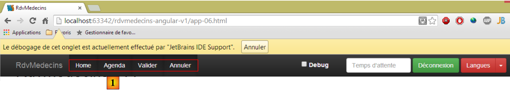 |
Opções de menu foram configuradas em [1]. Para obter esse resultado, duplicamos [app-01.html] em [app-06.html] e adicionamos as seguintes linhas:
<div class="navbar navbar-inverse navbar-fixed-top" role="navigation">
<div class="container">
<div class="navbar-header">
...
</div>
<!-- opções de menu -->
<div class="collapse navbar-collapse">
<ul class="nav navbar-nav">
<li class="active">
<a href="">
<span>Home</span>
</a>
</li>
<li class="active">
<a href="">
<span>Agenda</span>
</a>
</li>
<li class="active">
<a href="">
<span>Valider</span>
</a>
</li>
<li class="active">
<a href="">
<span>Annuler</span>
</a>
</li>
</ul>
<!-- botões à direita -->
<form class="navbar-form navbar-right" role="form">
...
</form>
</div>
</div>
</div>
</div>
- As opções de menu são geradas pelas linhas 8 a 29. Trata-se, mais uma vez, de elementos de uma lista <ul>. A classe [active] faz com que o texto fique destacado, indicando que é possível clicar na opção.
3.6.6. Exemplo 6
Apresentaremos os médicos e os clientes em listas suspensas, conforme mostrado abaixo:
 |
A lista suspensa utilizada não é um componente nativo do Bootstrap. Trata-se do componente [bootstrap-select] (http://silviomoreto.github.io/bootstrap-select/). Para obter esse resultado, duplicamos [app-01.html] em [app-07.html] e adicionamos as seguintes linhas:
<!DOCTYPE html>
<html>
<head>
...
<link href="bower_components/bootstrap-select/bootstrap-select.min.css" rel="stylesheet"/>
</head>
<body>
<div class="container">
<h1>Rdvmedecins - v1</h1>
<h2><label for="medecins">Médecins</label></h2>
<select id="medecins" data-style="btn btn-primary" class="selectpicker">
<option value="1">Mme Marie PELISSIER</option>
<option value="1">Mr Jacques BROMARD</option>
<option value="1">Mr Philippe JANDOT</option>
<option value="1">Mme Justine JACQUEMOT</option>
</select>
</div>
<!-- Núcleo do Bootstrap JavaScript ================================================== -->
...
<script type="text/javascript" src="bower_components/bootstrap-select/bootstrap-select.min.js"></script>
<!-- script local -->
<script>
$('.selectpicker').selectpicker();
</script>
</body>
</html>
- linha 5: é necessário importar a folha de estilo de [bootstrap-select];
- linha 13: o atributo [data-style] é utilizado por [bootstrap-select]. Ele serve para aplicar um estilo à lista suspensa. Aqui, atribuímos a ela a forma de um botão azul [btn-primary];
- linha 13: o atributo [class] é utilizado na linha 23. Pode ser qualquer valor;
- linhas 14-17: os elementos da lista suspensa. Aqui estão as tags clássicas HTML;
- linha 22: é necessário importar o JS a partir do [bootstrap-select];
- linhas 24-26: um script JS executado ao final do carregamento da página;
- linha 25: uma instrução JQuery. Aplica-se o método [selectpicker] (selectpicker()) a todos os elementos com a classe [selectpicker] ($('.selectpicker')). Há apenas um, a tag <select> da linha 13. O método [selectpicker] provém do arquivo JS referenciado na linha 22;
3.6.7. Exemplo 7
Para exibir a agenda de um médico, vamos usar uma tabela “responsiva” fornecida pela biblioteca JS [footable]:
 |
- em [1]: a tabela com exibição normal;
- em [2]: a tabela quando se reduz o tamanho da janela do navegador. A coluna [Action] passa automaticamente para a linha seguinte. É o que chamamos de componente “responsivo” ou simplesmente adaptável.
Duplicamos [app-01.html] em [app-08.html] e adicionamos as seguintes linhas:
...
<link href="bower_components/footable/css/footable.core.min.css" rel="stylesheet"/>
<link href="assets/css/rdvmedecins.css" rel="stylesheet"/>
...
<div class="container">
<h1>Rdvmedecins - v1</h1>
<div class="row alert alert-warning">
<div class="col-md-6">
<table id="creneaux" class="table">
<thead>
<tr>
<th data-toggle="true">
<span>Créneau horaire</span>
</th>
<th>
<span>Client</span>
</th>
<th data-hide="phone">
<span>Action</span>
</th>
</thead>
<tbody>
<tr>
<td>
<span class='status-metro status-active'>
9h00-9h20
</span>
</td>
<td>
<span></span>
</td>
<td>
<a href="" class="status-metro status-active">
Réserver
</a>
</td>
</tr>
<tr>
<td>
<span class='status-metro status-suspended'>
9h20-9h40
</span>
</td>
<td>
<span>Mme Paule MARTIN</span>
</td>
<td>
<a href="" class="status-metro status-suspended">
Supprimer
</a>
</td>
</tr>
</tbody>
</table>
</div>
</div>
</div>
...
<script src="bower_components/footable/dist/footable.min.js" type="text/javascript"></script>
- as linhas 2 e 60 já estão presentes em [app-01.html]. São os arquivos CSS e JS fornecidos pela biblioteca [footable];
- a linha 3 faz referência ao seguinte arquivo CSS:
@CHARSET "UTF-8";
#intervalos th {
text-align: center;
}
#intervalos td {
text-align: center;
font-weight: bold;
}
.status-metro {
display: inline-block;
padding: 2px 5px;
color:#fff;
}
.status-metro.status-active {
background: #43c83c;
}
.status-metro.status-suspended {
background: #fa3031;
}
Os estilos [status-*] provêm de um exemplo de uso da tabela [footable] encontrado no site da biblioteca.
- linha 8: insere a tabela em uma linha [row] e uma moldura colorida [alert alert-warning];
- linha 9: a tabela ocupará 6 colunas [col-md-6];
- linha 10: a tabela HTML é formatada pelo Bootstrap [class='table'];
- linha 13: o atributo [data-toggle] indica a coluna que contém o símbolo [+/-], que expande/retrai a linha;
- linha 19: o atributo [data-hide='phone'] indica que a coluna deve ser ocultada se a tela tiver o tamanho de uma tela de celular. Também é possível usar o valor 'tablet';
3.6.8. Exemplo 8
Para ajudar o usuário, vamos criar dicas de ajuda (tooltip) ao redor dos principais componentes das visualizações:
 |
Para obter esse resultado, duplicamos [app-01.html] em [app-09.html] e adicionamos as seguintes linhas:
<!DOCTYPE html>
<html ng-app="rdvmedecins">
<head>
...
</head>
<body>
<div class="container">
<h1>Rdvmedecins - v1</h1>
<div class="navbar navbar-inverse navbar-fixed-top" role="navigation">
<div class="container">
<div class="navbar-header">
<button type="button" class="navbar-toggle" data-toggle="collapse" data-target=".navbar-collapse">
<span class="sr-only">Toggle navigation</span>
<span class="icon-bar"></span>
<span class="icon-bar"></span>
<span class="icon-bar"></span>
</button>
<a class="navbar-brand" href="#">RdvMedecins</a>
</div>
<!-- opções do menu -->
<div class="collapse navbar-collapse">
<ul class="nav navbar-nav">
<li class="active">
<a href="">
<span tooltip="Retourne à la page d'accueil" tooltip-placement="bottom">Home</span>
</a>
</li>
<li class="active">
<a href="">
<span tooltip="Affiche l'agenda" tooltip-placement="top">Agenda</span>
</a>
</li>
<li class="active">
<a href="">
<span tooltip="Valide le rendez-vous" tooltip-placement="right">Valider</span>
</a>
</li>
<li class="active">
<a href="">
<span tooltip="Annule l'opération en cours" tooltip-placement="left">Annuler</span>
</a>
</li>
</ul>
</div>
</div>
</div>
</div>
<!-- Núcleo do Bootstrap JavaScript ================================================== -->
<...
<script type="text/javascript" src="bower_components/angular-ui-bootstrap-bower/ui-bootstrap-tpls.min.js"></script>
<!-- script local -->
<script>
// --------------------- módulo Angular
angular.module("rdvmedecins", ['ui.bootstrap']);
</script>
</body>
</html>
As bolhas de ajuda são fornecidas pela biblioteca [angular-ui-bootstrap], que, por sua vez, depende da biblioteca [angular]. A linha 50 importa a biblioteca [angular-ui-bootstrap]. Para implementar os componentes da biblioteca [angular-ui-bootstrap], precisamos criar um módulo Angular. Isso é feito nas linhas 52 a 55. Essas linhas definem um módulo Angular chamado [rdvmedecins] (primeiro parâmetro). Um módulo Angular pode utilizar outros módulos Angular. Isso é o que chamamos de dependências do módulo. Elas são fornecidas em uma matriz como segundo parâmetro da função [angular.module]. Aqui, o módulo chamado [ui.bootstrap] é fornecido pela biblioteca [angular-ui-bootstrap]. É esse módulo que nos fornecerá as bolhas de ajuda.
A linha 54 define um módulo Angular. Por padrão, isso não tem nenhum efeito na página. Indica-se que a página deve ser gerenciada pelo Angular, vinculando-a a um módulo Angular. É isso que é feito na linha 2. O atributo [ng-app='rdvmedecins'] vincula a página ao módulo criado na linha 54. A página será então analisada pelo Angular. Os atributos [tooltip] serão detectados e processados pelo módulo [ui.bootstrap].
A sintaxe da bolha de ajuda é a seguinte:
<span tooltip="Retourne à la page d'accueil" tooltip-placement="bottom">Home</span>
Acima, adicionamos uma bolha de ajuda ao texto [Home]:
- [tooltip]: define o texto da bolha de ajuda;
- [tooltip-placement]: define sua posição (bottom, top, left, right);
O Angular JS permite adicionar novas tags ou novos atributos aos que já existem na linguagem HTML. Essa extensão da linguagem HTML é feita por meio de diretivas do Angular. Aqui, os atributos [tooltip] e [tooltip-placement] são atributos criados pelo [angular-ui-bootstrap].
3.6.9. Exemplo 9
Para ajudar o usuário a escolher o dia de um compromisso, vamos oferecer um calendário:

Assim como nas bolhas de ajuda, esse calendário é fornecido pela biblioteca [angular-ui-bootstrap]. Para obter esse resultado, duplicamos [app-01.html] em [app-10.html] e adicionamos as seguintes linhas:
<!DOCTYPE html>
<html ng-app="rdvmedecins">
<head>
...
<body>
<div class="container">
<h1>Rdvmedecins - v1</h1>
<div>
<pre>Date <em>{{jour | date:'fullDate'}}</em></pre>
<div class="row">
<div class="col-md-2">
<h4>Calendrier</h4>
<div style="display:inline-block; min-height:290px;">
<datepicker ng-model="jour" show-weeks="true" class="well"></datepicker>
</div>
</div>
</div>
</div>
</div>
</div>
...
<!-- script local -->
<script>
// --------------------- módulo Angular
angular.module("rdvmedecins", ['ui.bootstrap'])
</script>
</body>
</html>
Assim como anteriormente, a página está associada a um módulo Angular (linhas 2 e 28). O calendário é definido pela tag <datepicker> da linha 16, definida pela biblioteca [angular-ui-bootstrap]:
- [show-weeks='true']: para exibir os números das semanas;
- [class='well']: para envolver o calendário com uma área cinza de cantos arredondados;
- [ng-model='jour']: os atributos [ng-*] são atributos do Angular. O atributo [ng-model] indica um dado que será inserido no modelo da visualização. Quando o usuário clicar em uma data, ela será inserida na variável [jour] do modelo. Essa variável é utilizada na linha 10. A sintaxe {{expressão}} permite avaliar uma expressão composta por elementos do modelo. Aqui, {{dia}} exibirá o valor da variável [jour] do modelo. Uma característica importante do Angular é que a visualização acompanha automaticamente as alterações na variável [jour]. Assim, quando o usuário alterar as datas, essas alterações serão exibidas imediatamente na linha 10. De maneira geral, o funcionamento é o seguinte:
- uma visualização V está associada a um modelo M;
- o Angular observa o modelo M e atualiza automaticamente a vista V quando há uma alteração no modelo M;
A sintaxe {{dia|data}} é chamada de filtro. Não é o valor de [jour] que é exibido, mas o valor de [jour] filtrado por um filtro chamado [date]. Esse filtro é predefinido no Angular. Ele serve para formatar datas. Aceita parâmetros que especificam o formato desejado. Assim, a expressão {{dia | data:'fullDate'}} indica que se deseja o formato completo da data, neste caso [Friday, June 20, 2014], pois o calendário está em inglês por padrão. Abordaremos sua internacionalização em breve.
3.6.10. Conclusão
Apresentamos os elementos do framework CSS Bootstrap que iremos utilizar. Eram componentes passivos: seus eventos não eram gerenciados. Assim, clicar nos botões ou nos links não produzia nenhum efeito. Esses eventos serão gerenciados em JavaScript. É possível usar essa linguagem sem a ajuda de frameworks, mas, assim como ocorreu no lado do servidor, alguns frameworks se impõem no lado do cliente. É o caso do framework Angular JS, que traz consigo uma nova maneira de abordar o desenvolvimento de aplicativos JavaScript executados por um navegador. Vamos apresentá-lo agora.
3.7. Conhecendo o Angular JS
Vamos agora ilustrar algumas das características do framework Angular JS utilizadas na aplicação. Já conhecemos algumas delas:
- uma página HTML é alimentada pelo Angular JS se um módulo for associado a ela:
<html ng-app="rdvmedecins">
- O Angular permite criar novas tags e novos atributos HTML por meio de diretivas:
- O Angular permite criar filtros:
- Uma vista V exibe um modelo M. O Angular monitora o modelo M e atualiza automaticamente a vista V sempre que há uma alteração no modelo M. O valor de uma variável do modelo M é exibido na vista V por meio de:
Vamos começar aprofundando a implementação do Padrão de Design Modelo – Visão – Controlador no Angular. Vamos relembrar as relações que existem entre eles do ponto de vista da arquitetura:
 |
- a vista V1 exibe o modelo M1 construído pelo controlador C1. Este último contém não apenas o modelo M1, mas também os manipuladores de eventos da vista V1. Estamos no ciclo 5, 8, 9:
- [5]: ocorre um evento na visualização V1. Ele é processado pelo controlador C1;
- este realiza sua tarefa [6-7] e, em seguida, constrói o modelo M1 [8];
- [9]: a visualização V1 exibe o novo modelo M1. Como já mencionamos, essa última etapa é automática. Não há, como em outras estruturas, um push explícito (C1 envia o modelo M1 para V1) ou um pull explícito (a visualização V1 busca o modelo M1 em C1). Há um envio implícito que o desenvolvedor não percebe;
- em seguida, o ciclo 5, 8, 9 recomeça;
3.7.1. Exemplo 1: o modelo MVC do Angular
Vamos retomar o exemplo do calendário. Já vimos a diretiva que o gera:
<datepicker ng-model="jour" show-weeks="true" class="well"></datepicker>
Essa diretiva admite outros atributos além dos apresentados acima, entre eles o atributo [min-date], que define a data mínima que pode ser selecionada no calendário. Isso será útil para nós. Quando o usuário seleciona uma data para um compromisso, ela deve ser igual ou posterior à data de hoje. Portanto, escreveremos:
<datepicker ng-model="jour" ... min-date="dateMin"></datepicker>
onde [dateMin] será uma variável do modelo da página cujo valor será a data de hoje. Isso resultará na seguinte página:
 |
- em [1], estamos em 19 de junho de 2014. O cursor indica que é possível selecionar 19 de junho;
- em [2], o cursor indica que não é possível selecionar 18 de junho;
Duplicamos [app-10.html] em [app-11.html] e fazemos as seguintes alterações:
<!DOCTYPE html>
<html ng-app="rdvmedecins">
<head>
...
</head>
<body ng-controller="rdvMedecinsCtrl">
<div class="container">
<h1>Rdvmedecins - v1</h1>
<div>
<pre>Date <em>{{jour | date:'fullDate' }}</em></pre>
<div class="row">
<div class="col-md-2">
<h4>Calendrier</h4>
<div style="display:inline-block; min-height:290px;">
<datepicker ng-model="jour" show-weeks="true" class="well" min-date="minDate"></datepicker>
</div>
</div>
</div>
</div>
</div>
<!-- Núcleo do Bootstrap JavaScript ================================================== -->
...
<!-- script local -->
<script>
// --------------------- módulo Angular
angular.module("rdvmedecins", ['ui.bootstrap']);
// controlador
angular.module("rdvmedecins")
.controller('rdvMedecinsCtrl', ['$scope',
function ($scope) {
// data mínima
$scope.minDate = new Date();
}]);
</script>
</body>
</html>
Vamos examinar primeiro o script local das linhas 26 a 37:
- linha 28: criação do módulo [rdvmedecins] com sua dependência do módulo [ui.bootstrap], que fornece o calendário;
- linhas 30 a 35: criação de um controlador. É ele que irá conter o modelo da nossa página. Não haverá nenhum gerenciador de eventos aqui;
- linhas 30-31: o controlador [rdvMedecinsCtrl] pertence ao módulo [rdvmedecins]. É possível adicionar quantos controladores forem necessários a um módulo. Em nosso aplicativo, teremos:
- um módulo de gerenciamento da aplicação;
- um controlador por visualização;
- o segundo parâmetro da função [controller] é um array no formato ['O1', 'O2', ..., 'On', function(O1, O2, ..., On)]. O último parâmetro é a função que implementa o controlador. Seus parâmetros são objetos que o Angular JS fornecerá à função.
Voltemos à arquitetura de um aplicativo Angular:
 |
Acima, o controlador C1 contém todos os manipuladores de eventos da vista V1, bem como o modelo M1 desta última. Os manipuladores de eventos podem precisar de um ou mais serviços [6] para realizar suas tarefas. Passa-se todos eles como parâmetros da função de construção do controlador:
Os serviços Si são singletons. O Angular cria deles um único exemplar. Eles são identificados por um nome Si. Por que aparecem duas vezes na tabela acima? Em produção, os scripts JS são minificados. Nesse processo de minificação, a tabela acima passa a ser:
Os parâmetros perdem seus nomes. No entanto, esses nomes correspondem aos nomes dos serviços. Portanto, é importante manter esses nomes. É por isso que eles são passados como strings de caracteres como parâmetros que precedem a função. As strings de caracteres não são alteradas no processo de minificação. Quando o Angular for construir o controlador com o novo array, ele substituirá a1 por S1, a2 por S2, ... A ordem dos parâmetros é, portanto, importante. Ela deve corresponder à ordem dos serviços que precedem a definição da função.
Voltemos à definição do controlador [rdvMedecinsCtrl]:
// controlador
angular.module("rdvmedecins")
.controller('rdvMedecinsCtrl', ['$scope',
function ($scope) {
// data mínima
$scope.minDate = new Date();
}]);
- linhas 3-4: o único objeto injetado no controlador é o objeto $scope. Trata-se de um objeto predefinido que representa o modelo M das visualizações associadas ao controlador. Para enriquecer o modelo de uma visualização, basta adicionar campos ao objeto $scope;
- é o que é feito na linha 6. Cria-se o campo [minDate] com o valor da data de hoje;
A visualização V utiliza esse modelo M da seguinte maneira:
<body ng-controller="rdvMedecinsCtrl">
<div class="container">
...
<div style="display:inline-block; min-height:290px;">
<datepicker ng-model="jour" show-weeks="true" class="well" min-date="minDate"></datepicker>
</div>
...
</div>
...
- linha 1: o corpo da página é associado ao controlador [rdvMedecinsCtrl] por meio do atributo [ng-controller]. Isso significa que tudo o que estiver dentro da tag <body> utilizará o controlador [rdvMedecinsCtrl] para gerenciar seus eventos e obter seu modelo M. Uma página HTML pode depender de vários controladores, aninhados ou não uns nos outros:
Acima:
- o conteúdo de [div1] (linhas 1-10) exibe o modelo M1 gerenciado pelo controlador c1. As tags dessa área podem fazer referência a manipuladores de eventos do controlador c1;
- o conteúdo de [div11] (linhas 3-4) exibe o modelo M11 gerenciado pelo controlador c11, mas também o modelo M1. Há herança de modelos. As tags desta área podem referenciar tanto gerenciadores de eventos do controlador c11 quanto gerenciadores de eventos do controlador c1. Elas não podem referenciar nem o modelo M12 do controlador c12 nem os gerenciadores de eventos deste último. O controlador c12, de fato, não é reconhecido nas linhas 3 a 5;
- linhas 7 a 9: pode-se seguir um raciocínio semelhante ao apresentado anteriormente;
Voltemos ao código do calendário:
<datepicker ng-model="jour" show-weeks="true" class="well" min-date="minDate"></datepicker>
O atributo [min-date] é inicializado com o valor [minDate] do modelo. Implicitamente, [$scope.minDate]. O campo é sempre buscado no objeto $scope.
3.7.2. Exemplo 2: localização das datas
Por enquanto, o calendário não nos é muito útil, pois é um calendário inglês. É possível localizá-lo:
 |
- em [1], temos um calendário em francês;
- em [2], ele passa para o inglês;
- em [3], o calendário em inglês;
Duplicamos a página [app-11.html] em [app-12.html] e, em seguida, modificamos esta última da seguinte maneira:
<!DOCTYPE html>
<html ng-app="rdvmedecins">
<head>
...
</head>
<body ng-controller="rdvMedecinsCtrl">
<div class="container">
<h1>Rdvmedecins - v1</h1>
<pre>Date <em>{{jour | date:'fullDate' }}</em></pre>
<div class="row">
<!-- o calendário-->
<div class="col-md-4">
<h4>Calendrier</h4>
<div style="display:inline-block; min-height:290px;">
<datepicker ng-model="jour" show-weeks="true" class="well" min-date="minDate"></datepicker>
</div>
</div>
<!-- os idiomas -->
<div class="col-md-2">
<div class="btn-group" dropdown is-open="isopen">
<button type="button" class="btn btn-primary dropdown-toggle" style="margin-top: 30px">
Langues<span class="caret"></span>
</button>
<ul class="dropdown-menu" role="menu">
<li><a href="" ng-click="setLang('fr')">Français</a></li>
<li><a href="" ng-click="setLang('en')">English</a></li>
</ul>
</div>
</div>
</div>
</div>
...
<script type="text/javascript" src="rdvmedecins.js"></script>
</body>
</html>
Há poucas alterações. Trata-se simplesmente da adição das linhas 21 a 31 da lista suspensa de idiomas. Pela primeira vez, encontramos um manipulador de eventos nas linhas 27 e 28:
- linha 27: o atributo [ng-click] é um atributo do Angular que indica o manipulador de eventos a ser executado quando se clica no elemento que possui esse atributo. Aqui, a função [$scope.setLang('fr')] será executada. Ela definirá o calendário em francês;
- linha 28: aqui, definimos o calendário em inglês;
- linha 35: como o JavaScript do controlador é bastante extenso, nós o colocamos em um arquivo chamado [rdvmedecins.js];
O Angular gerencia a localização das visualizações com um módulo chamado [ngLocale]. A definição do nosso módulo [rdvmedecins] será, portanto, a seguinte:
// --------------------- módulo Angular
angular.module("rdvmedecins", ['ui.bootstrap', 'ngLocale']);
Na linha 2, não se deve esquecer as dependências, pois o Angular às vezes não é muito preciso em suas mensagens de erro. Esquecer uma dependência é, portanto, particularmente difícil de detectar. Aqui, temos uma nova dependência do módulo [ngLocale].
Por padrão, o Angular gerencia apenas a localização de datas, números etc., que possuem variantes locais. Ele não gerencia a internacionalização de textos. Para isso, utilizaremos a biblioteca [angular-translate]. O gerenciamento da localização é feito pela biblioteca [angular-i18n]. Essa biblioteca traz consigo tantos arquivos quantas forem as variantes para datas, números, etc.
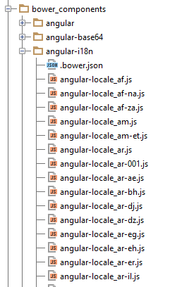 |
Para o calendário francês, utilizaremos o arquivo [angular-locale_fr-fr.js] e, para o calendário inglês, o arquivo [angular-locale_en-us.js]. Vejamos, por exemplo, o que há no arquivo [angular-locale_fr-fr.js]:
'use strict';
angular.module("ngLocale", [], ["$provide", function($provide) {
var PLURAL_CATEGORY = {ZERO: "zero", ONE: "one", TWO: "two", FEW: "few", MANY: "many", OTHER: "other"};
$provide.value("$locale", {
"DATETIME_FORMATS": {
"AMPMS": [
"AM",
"PM"
],
"DAY": [
"dimanche",
"lundi",
"mardi",
"mercredi",
"jeudi",
"vendredi",
"samedi"
],
"MONTH": [
"janvier",
"f\u00e9vrier",
"mars",
"avril",
"mai",
"juin",
"juillet",
"ao\u00fbt",
"septembre",
"octobre",
"novembre",
"d\u00e9cembre"
],
"SHORTDAY": [
"dim.",
"lun.",
"mar.",
"mer.",
"jeu.",
"ven.",
"sam."
],
"SHORTMONTH": [
"janv.",
"f\u00e9vr.",
"mars",
"avr.",
"mai",
"juin",
"juil.",
"ao\u00fbt",
"sept.",
"oct.",
"nov.",
"d\u00e9c."
],
"fullDate": "EEEE d MMMM y",
"longDate": "d MMMM y",
"medium": "d MMM y HH:mm:ss",
"mediumDate": "d MMM y",
"mediumTime": "HH:mm:ss",
"short": "dd/MM/yy HH:mm",
"shortDate": "dd/MM/yy",
"shortTime": "HH:mm"
},
"NUMBER_FORMATS": {
"CURRENCY_SYM": "\u20ac",
"DECIMAL_SEP": ",",
"GROUP_SEP": "\u00a0",
"PATTERNS": [
{
"gSize": 3,
"lgSize": 3,
"macFrac": 0,
"maxFrac": 3,
"minFrac": 0,
"minInt": 1,
"negPre": "-",
"negSuf": "",
"posPre": "",
"posSuf": ""
},
{
"gSize": 3,
"lgSize": 3,
"macFrac": 0,
"maxFrac": 2,
"minFrac": 2,
"minInt": 1,
"negPre": "(",
"negSuf": "\u00a0\u00a4)",
"posPre": "",
"posSuf": "\u00a0\u00a4"
}
]
},
"id": "fr-fr",
"pluralCat": function (n) { if (n >= 0 && n <= 2 && n != 2) { return PLURAL_CATEGORY.ONE; } return PLURAL_CATEGORY.OTHER;}
});
}]);
Nele, vemos os elementos que permitem criar um calendário francês:
- linhas 10-18: a tabela dos dias da semana;
- linhas 19-32: a tabela dos meses do ano;
- linhas 33-41: a tabela dos dias da semana em forma abreviada;
- linhas 42-55: a tabela dos meses do ano em forma abreviada;
- linhas 56-63: formatos de data e hora. Na linha 62, reconhece-se o formato “dd/mm/aa” das datas francesas;
- linhas 65-95: informações sobre a formatação de números. Isso não nos interessa aqui;
- linha 96: o identificador ‘fr-fr’ da configuração regional do arquivo (fr-fr: francês da França, fr-ca: francês do Canadá, ...)
No arquivo [angular-locale_en-us.js], temos exatamente a mesma coisa, mas desta vez para o inglês do USA (en-us).
O código acima não é muito fácil de ler. Ao ler com atenção, percebe-se que todo esse código define a variável [$locale] da linha 4. É alterando o valor dessa variável que se obtém a internacionalização de datas, números, moedas, etc. Curiosamente, o Angular não previu a alteração da variável [$locale] durante a execução. Ela é definida de uma vez por todas ao importar o arquivo da localização desejada:
<script type="text/javascript" src="bower_components/angular-i18n/angular-locale_fr-fr.js"></script>
Não adianta importar todos os arquivos das configurações regionais desejadas, pois, como vimos, cada arquivo faz apenas uma coisa: definir a variável [$locale]. É o último arquivo importado que prevalece e, a partir daí, não há mais como alterar a configuração regional.
Ao navegar pela internet em busca de uma solução para esse problema, não encontrei nenhuma. Proponho aqui uma: [https://github.com/stahe/angular-ui-bootstrap-datepicker-with-locale-updated-on-the-fly]. A ideia é colocar as diferentes configurações regionais de que precisamos em um dicionário. É lá que iremos buscá-las quando for necessário alterá-las. O código JavaScript de [rdvmedecins.js] tem a seguinte estrutura:
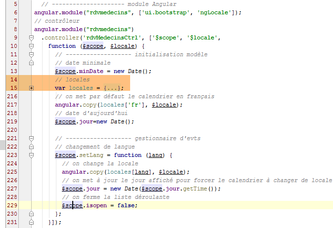 |
Se retirarmos a definição das configurações regionais, que ocupa 200 linhas (linhas 15 a 215 acima), o código fica simples:
- linha 6: define o módulo [rdvmedecins] e suas dependências;
- linhas 8 a 10: definem o controlador [rdvMedecinsCtrl] da página;
- linha 9: a função de construção do controlador recebe dois parâmetros:
- $scope: para criar o modelo da visualização;
- $locale: que é a variável que gerencia a localização do calendário. É essa variável que deve ser alterada quando se muda de idioma;
- linha 13: a variável [minDate] do modelo é inicializada com a data de hoje;
- linha 15: define o dicionário [locales]. Observe que não escrevemos [$scope.locales]. A variável [locales], de fato, não faz parte do modelo exibido na visualização;
- linhas 15-215: definem um dicionário {'fr':locale-fr-fr, 'en':locale-en-us}. Os valores [locale-fr-fr] e [locale-en-us] são obtidos, respectivamente, dos arquivos JS, [angular-locale_fr-fr.js] e [angular-locale_en-us.js]. O mais difícil é não se confundir com os inúmeros parênteses deste dicionário...
- linha 217: inicializa-se a variável $locale com locales['fr'], ou seja, a versão em francês da localização. Não é possível escrever simplesmente [$locale=locales['fr']], o que atribuiria a $locale o endereço de locales['fr']. É preciso fazer uma cópia de valor. Isso pode ser feito com a função predefinida [angular.copy];
- linha 219: a variável [jour] do modelo é inicializada com a data de hoje. Isso faz com que o calendário seja exibido com a data atual;
- linhas 223-230: definem o gerenciador de eventos que é chamado durante a mudança de idioma. Observe a sintaxe:
para definir um manipulador de eventos que se chamaria [nom_fonction] e que aceitaria os parâmetros [param1, param2, ...];
Lembre-se do código HTML da lista suspensa:
<!-- os idiomas -->
<div class="col-md-2">
<div class="btn-group" dropdown is-open="isopen">
<button type="button" class="btn btn-primary dropdown-toggle" style="margin-top: 30px">
Langues<span class="caret"></span>
</button>
<ul class="dropdown-menu" role="menu">
<li><a href="" ng-click="setLang('fr')">Français</a></li>
<li><a href="" ng-click="setLang('en')">English</a></li>
</ul>
</div>
</div>
- linha 8: a seleção do francês aciona a chamada de [setLang('fr')];
- linha 9: a seleção do inglês aciona a chamada de [setLang('en')];
- linha 3: o atributo [is-open] é um booleano que controla a abertura (true) ou o fechamento (false) da lista suspensa. Ele é inicializado com a variável [isopen] do modelo da visualização;
Voltemos ao código de [rdvmedecins.js]:
- linha 225: alteramos o valor da variável [$locale] com o valor do dicionário [locales] adequado;
- linha 227: definimos que, quando o modelo M de uma visualização V muda, a visualização V é automaticamente atualizada com o novo modelo. Na linha 225, alteramos o valor da variável [$locale], que não faz parte do modelo M exibido pela vista V. É preciso encontrar uma maneira de alterar esse modelo M para que o calendário seja atualizado e utilize sua nova configuração regional. Aqui, alteramos a variável [jour] do modelo do calendário. Inicializamos essa variável com um novo ponteiro (new) que aponta para uma data idêntica à que está sendo exibida. [$scope.jour.getTime()] é o número de milissegundos decorridos entre 1º de janeiro de 1970 e a data exibida pelo calendário. Com esse número, reconstruímos uma nova data. É claro que obteremos a mesma data e o calendário permanecerá posicionado na data que exibia. Mas o valor de [$scope.jour], que na verdade é um ponteiro, terá mudado e o calendário será atualizado;
- linha 229: atribuímos a false o valor da variável [isopen] do modelo. Essa variável controla um dos atributos da lista suspensa:
<div class="btn-group" dropdown is-open="isopen">
<button type="button" class="btn btn-primary dropdown-toggle" style="margin-top: 30px">
Langues<span class="caret"></span>
</button>
...
</div>
Na linha 1 acima, o atributo [is-open] passará para false, o que fará com que a lista suspensa seja fechada.
3.7.3. Exemplo 3: internacionalização dos textos
Voltemos à localização do calendário:
 |
Em [3], vemos que o calendário está em inglês, mas os textos em [Calendrier, Langues] não. Por padrão, o Angular não oferece uma ferramenta para a internacionalização de mensagens. Vamos usar aqui a biblioteca [angular-translate] (https://github.com/angular-translate/angular-translate).
Vamos desenvolver o seguinte exemplo:
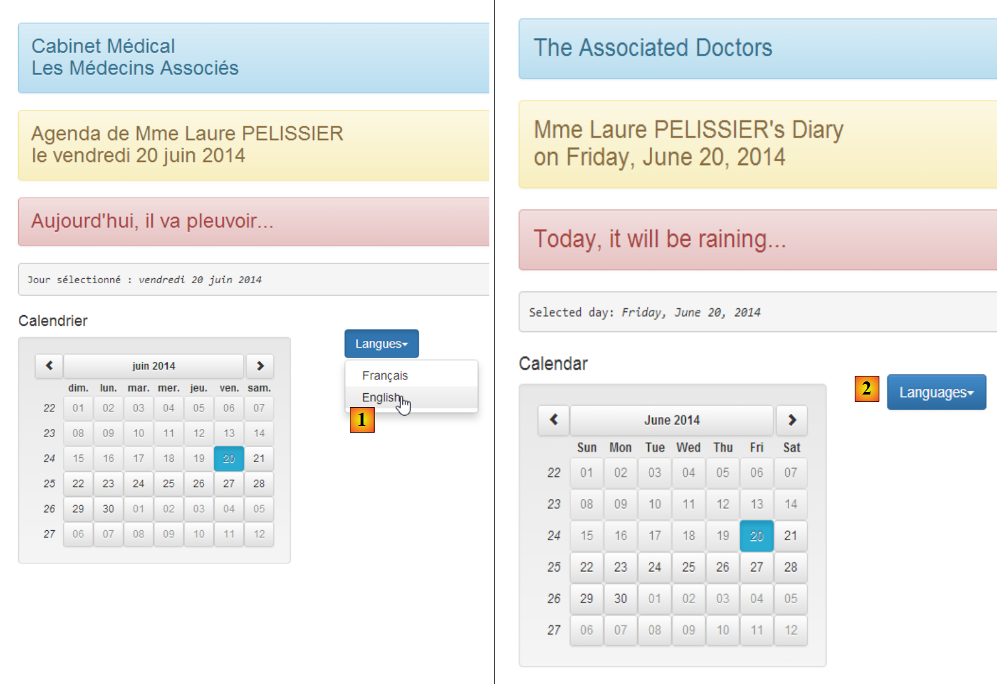 |
- em [1], a visualização em francês;
- em [2], a visualização em inglês;
Vejamos a configuração necessária para a internacionalização. O script [rdvmedecins.js] é modificado da seguinte forma:
// --------------------- módulo Angular
angular.module("rdvmedecins", ['ui.bootstrap', 'ngLocale', 'pascalprecht.translate']);
// configuração i18n
angular.module("rdvmedecins")
.config(['$translateProvider', function ($translateProvider) {
// mensagens em francês
$translateProvider.translations("fr", {
'msg_header': 'Consultório Médico <br/> Les Médecins Associés',
'msg_langues': 'Idiomas',
'msg_agenda': 'Agenda de {{título}} {{nome}} {{sobrenome}}<br/>no {{dia}}',
'msg_calendrier': 'Calendário',
'msg_jour': 'Dia selecionado: ',
'msg_meteo': "Hoje vai chover..."
});
// mensagens em inglês
$translateProvider.translations("en", {
'msg_header': 'The Associated Doctors',
'msg_langues': 'Idiomas',
'msg_agenda': "{{título}} Diário de {{nome}} {{sobrenome}}<br/> em {{dia}}",
'msg_calendrier': 'Calendário',
'msg_jour': 'Dia selecionado: ',
'msg_meteo': 'Hoje vai chover...'
});
// idioma padrão
$translateProvider.preferredLanguage("fr");
}]);
- linha 2: a primeira alteração é a adição de uma nova dependência. A internacionalização do aplicativo requer o módulo Angular [pascalprecht.translate];
- linhas 5-26: definem a função [config] do módulo [rdvmedecins]. Ao iniciar um aplicativo Angular, o framework instancia todos os serviços necessários ao aplicativo, tanto os predefinidos pelo Angular quanto os definidos pelo usuário. Por enquanto, não definimos nenhum serviço. A função [config] do módulo de uma aplicação é executada antes de qualquer instanciação de serviço. Ela pode ser usada para definir informações de configuração dos serviços que serão instanciados posteriormente. Aqui, a função [config] será usada para definir as mensagens internacionalizadas da aplicação;
- linha 5: o parâmetro da função [config] é uma matriz ['O1', 'O2', ..., 'On', function(O1, O2, ..., On)], em que Oi é um objeto conhecido e fornecido pelo Angular. Aqui, o objeto [$translateProvider] é fornecido pelo módulo [pascalprecht.translate]. [function] é a função executada para configurar o aplicativo;
- linhas 7-14: a função [$translateProvider.translations] aceita dois parâmetros:
- o primeiro parâmetro é a chave de um idioma. Pode-se definir o que se quiser. Aqui, definimos 'fr' para as traduções em francês (linha 7) e 'en' para as traduções em inglês (linha 16),
- o segundo é a lista de traduções na forma de um dicionário {'chave1':'msg1', 'chave2':'msg2', ...};
- linhas 7-14: as mensagens em francês;
- linhas 16-23: as mensagens em inglês;
- linha 25: o método [preferredLanguage] define o idioma padrão. Seu parâmetro é um dos argumentos usados como primeiro parâmetro da função [$translateProvider.translations]; portanto, neste caso, pode ser ‘fr’ (linha 7) ou ‘en’ (linha 16);
- vale ressaltar que há três tipos de mensagens:
- mensagens sem parâmetros nem elementos HTML (linhas 9, 11, 12, ...),
- mensagens com elementos HTML (linhas 8, 10, ...),
- mensagens com parâmetros (linhas 10, 19);
Agora, duplicamos [app-11.html] em [app-12.html] e fazemos as seguintes alterações:
<div class="container">
<!-- um primeiro texto contendo elementos HTML -->
<h3 class="alert alert-info" translate="{{'msg_header'}}"></h3>
<!-- um segundo texto com parâmetros -->
<h3 class="alert alert-warning" translate="{{msg.text}}" translate-values="{{msg.model}}"></h3>
<!-- um terceiro texto traduzido pelo controlador -->
<h3 class="alert alert-danger">{{msg2}}</h3>
<pre>{{'msg_jour'|translate}}<em>{{jour | date:'fullDate' }}</em></pre>
<div class="row">
<!-- o calendário-->
<div class="col-md-4">
<h4>{{'msg_calendrier'|translate}}</h4>
<div style="display:inline-block; min-height:290px;">
<datepicker ng-model="jour" show-weeks="true" class="well" min-date="minDate"></datepicker>
</div>
</div>
<!-- os idiomas -->
<div class="col-md-2">
<div class="btn-group" dropdown is-open="isopen">
<button type="button" class="btn btn-primary dropdown-toggle" style="margin-top: 30px">
{{'msg_langues'|translate}}<span class="caret"></span>
</button>
<ul class="dropdown-menu" role="menu">
<li><a href="" ng-click="setLang('fr')">Français</a></li>
<li><a href="" ng-click="setLang('en')">English</a></li>
</ul>
</div>
</div>
</div>
</div>
- as traduções ocorrem nas linhas 3, 5, 9, 13, 23;
- é possível distinguir três sintaxes:
- a sintaxe [translate={{'msg_key'}}] (linha 3), em que [msg_key] é uma das chaves de um dicionário de tradução. Essa sintaxe é adequada para mensagens com ou sem elementos HTML, mas não para aquelas com parâmetros;
- a sintaxe [translate={{'msg_key'}} translate-values={{dictionnaire]}}] (linha 5), adequada para mensagens com ou sem elementos HTML e com parâmetros;
- a sintaxe [{{'msg_key'|translate}}] (linhas 9, 13, 23) é adequada para mensagens sem parâmetros e sem elementos HTML;
Vejamos as diferentes mensagens desta visualização:
Consultório Médico<br/>Os Médicos Associados | Os Médicos Associados | |
Agenda | Calendário | |
Idiomas | Idiomas | |
Dia selecionado: | Dia selecionado: |
Vamos agora examinar a linha 5:
<h3 class="alert alert-warning" translate="{{msg.text}}" translate-values="{{msg.model}}"></h3>
Observe que [msg.text] e [msg.model] não estão entre apóstrofos. Não se trata de cadeias de caracteres, mas de elementos do modelo:
- msg.text: define a chave da mensagem parametrizada a ser utilizada;
- msg.model: é o dicionário que fornece os valores dos parâmetros;
Os nomes dos campos [text, model] podem ser quaisquer. No controlador [rdvMedecinsCtrl] da visualização, o objeto [msg] é definido da seguinte forma:

- linha 245: a definição do objeto [msg];
- linha 245: o campo [text] tem como valor a chave [msg_agenda], que está associada a dois valores:
- Agenda de {{título}} {{nome}} {{sobrenome}}<br/>no {{dia}} no dicionário de francês;
- Diário de {{título}} {{nome}} {{sobrenome}}<br/> no {{dia}} no dicionário de inglês;
A mensagem a ser exibida possui, portanto, quatro parâmetros [titre, prenom, nom, jour];
- linha 245: o campo [model] é um dicionário que atribui um valor a esses quatro parâmetros. Há uma dificuldade com o parâmetro [jour]. Queremos exibir o nome completo do dia. Ele varia dependendo se está em francês ou em inglês. Utilizamos, então, o filtro [date], já utilizado na visualização na forma {{ dia | data:'fullDate'}}. É possível utilizar qualquer filtro no código JavaScript na forma $filter('filter')(valor, complementos), onde $filter é um objeto predefinido do Angular e 'filter' é o nome do filtro;
- linhas 33-34: o objeto predefinido $filter é passado como parâmetro para o controlador, o que permite usá-lo na linha 245;
Voltemos a outra linha da visualização exibida:
<!-- um terceiro texto traduzido pelo controlador -->
<h3 class="alert alert-danger">{{msg2}}</h3>
Todas as traduções anteriores foram feitas na visualização por meio de atributos do módulo [pascalprecht.translate]. Também é possível optar por fazer essa tradução no lado do servidor. É isso que está sendo feito aqui. No controlador (linha 247 na captura de tela acima), temos o seguinte código:
$scope.msg2 = $filter('translate')('msg_meteo');
Utiliza-se a mesma sintaxe do filtro 'date', pois 'translate' também é um filtro. Aqui, solicita-se a mensagem de chave 'msg_meteo'.
Vamos examinar o mecanismo de mudança de idiomas. Vimos que a função [config] de configuração do módulo [rdvmedecins] havia definido o francês como idioma padrão (linha 9 abaixo):
// configuração de internacionalização (i18n)
angular.module("rdvmedecins")
.config(['$translateProvider', function ($translateProvider) {
// mensagens em francês
$translateProvider.translations("fr", {...});
// mensagens em inglês
$translateProvider.translations("en", {...});
// idioma padrão
$translateProvider.preferredLanguage("fr");
}]);
Vale lembrar também que a localização padrão era igualmente o francês. Na inicialização do controlador [rdvmedecins], foi escrito:
// definimos a localização como francês
angular.copy(locales['fr'], $locale);
- linha 2: [locales] é um dicionário que criamos;
Não há nenhuma relação entre a internacionalização das mensagens proporcionada pelo módulo [pascalprecht.translate] e a localização das datas que implementamos. Esta última utiliza uma variável $locale que não é utilizada pelo módulo [pascalprecht.translate]. São dois processos que não se influenciam mutuamente.
Agora é hora de verificar o que acontece quando o usuário altera o idioma:
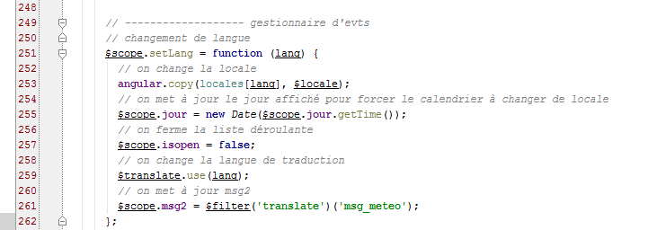
- linha 251: ao alterar o idioma, a função [setLang] é chamada com um dos dois parâmetros ['fr','en'];
- linhas 252-257: já foram explicadas – elas alteram a variável [$locale] do calendário. Isso não tem nenhum impacto sobre o idioma das traduções;
- linha 259: altera-se o idioma das traduções. Utiliza-se o objeto [$translate] fornecido pelo módulo [pascalprecht.translate]. Para isso, é necessário injetá-lo no controlador:
// controlador
angular.module("rdvmedecins")
.controller('rdvMedecinsCtrl', ['$scope', '$locale', '$translate', '$filter',
function ($scope, $locale, $translate, $filter) {
Nas linhas 3 e 4 acima, insere-se o objeto $translate;
- o parâmetro lang da função [$translate.use(lang)] deve ter como valor uma das chaves utilizadas na configuração como primeiro parâmetro da função [$translateProvider.translations], ou seja, ‘fr’ ou ‘en’. Esse é, de fato, o caso;
- linha 261: recalcula-se o valor de msg2. Por quê? Na visualização, após a mudança de idioma realizada pela linha 259, todos os atributos [translate] presentes serão reavaliados. Esse não será o caso da expressão {{msg2}}, que não possui esse atributo. Portanto, calcula-se seu novo valor no controlador. Isso deve ser feito após a mudança de idioma da linha 259 para que o novo idioma seja utilizado no cálculo de [msg2];
Se pararmos por aqui, observamos duas anomalias:
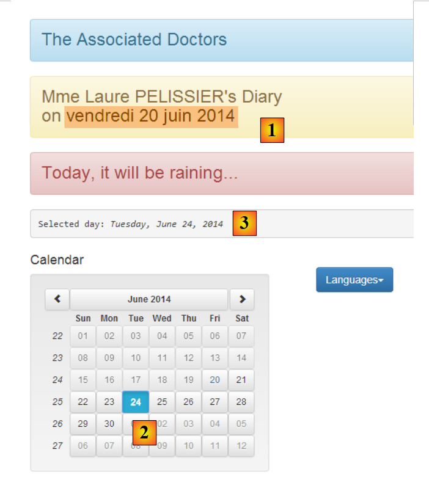 |
- em [1], o dia permaneceu em francês, enquanto o restante da visualização está em inglês;
- em [2] e [3], o dia selecionado é 24 de junho, enquanto que em [1], o dia permanece fixado em 20 de junho;
Vamos tentar explicar o que está acontecendo antes de buscar soluções. A mensagem [1] é gerada no controlador com o seguinte código:
$scope.msg = {'text': 'msg_agenda', 'model': {'titre': 'Mme', 'prenom': 'Laure', 'nom': 'PELISSIER', 'jour': $filter('date')($scope.jour, 'fullDate')}};
e exibida na visualização com o seguinte código:
<h3 class="alert alert-warning" translate="{{msg.text}}" translate-values="{{msg.model}}"></h3>
A anomalia [1] (o dia permaneceu em francês, enquanto o restante da visualização está em inglês) parece indicar que, embora o atributo [translate] seja reavaliado durante uma mudança de idioma, isso não ocorreu com o atributo [translate-values]. Portanto, é possível forçar essa reavaliação no controlador:
// ------------------- gerenciador de eventos
// mudança de idioma
$scope.setLang = function (lang) {
...
// atualiza-se o msg2
$scope.msg2 = $filter('translate')('msg_meteo');
// e a data da mensagem
$scope.msg.model.jour = $filter('date')($scope.jour, 'fullDate');
};
A cada mudança de idioma, a linha 8 acima reavalia o dia exibido. Isso resolve efetivamente o primeiro problema, mas não o segundo (o dia exibido na mensagem não muda quando se seleciona outro dia no calendário). A razão para esse comportamento é a seguinte. A mensagem é exibida na visualização com o código a seguir:
<h3 class="alert alert-warning" translate="{{msg.text}}" translate-values="{{msg.model}}"></h3>
A visualização exibida V só muda se seu modelo M mudar. No entanto, neste caso, a escolha de um novo dia no calendário aciona um evento que não é gerenciado, o que faz com que o modelo [msg] não mude e, consequentemente, a visualização também não mude. Atualizamos, na visualização, a definição do calendário:
<datepicker ng-model="jour" show-weeks="true" class="well" min-date="minDate"
ng-click="calendarClick()"></datepicker>
Acima, indicamos que o clique no calendário deve ser tratado pela função [$scope.calendarClick]. Ela é a seguinte:

- linha 267: o gerenciador do clique no calendário;
- linha 269: forçamos a atualização do dia exibido por meio da mensagem [msg];
3.7.4. Exemplo 4: um serviço de configuração
Voltemos à arquitetura de um aplicativo Angular JS:
 |
Vamos nos concentrar aqui no conceito de serviço. Trata-se de um conceito bastante amplo. Se, no exemplo acima, a camada [DAO] é claramente um serviço, qualquer objeto Angular pode se tornar um serviço:
- um serviço segue uma sintaxe específica. Ele tem um nome, e o Angular o reconhece por meio desse nome;
- um serviço pode ser injetado pelo Angular em controladores e em outros serviços;
Alguns dos serviços que vamos configurar no módulo [rdvmedecins] precisarão ser configurados. Como um serviço pode ser injetado em outro serviço, é tentador fazer a configuração em um serviço que chamaremos de [config] e injetá-lo nos serviços e controladores a serem configurados. Descreveremos agora esse processo.
Duplicamos o [app-13.html] como [app-14.html] e fazemos as seguintes alterações:
<div class="container">
<!-- verificação da mensagem em espera -->
<label>
<input type="checkbox" ng-model="waiting.visible">
<span>Voir le message d'attente</span>
</label>
<!-- a mensagem em espera -->
<div class="alert alert-warning" ng-show="waiting.visible">
<h1>{{ waiting.text | translate}}
<button class="btn btn-primary pull-right" ng-click="waiting.cancel()">
{{'msg_cancel'|translate}}</button>
<img src="assets/images/waiting.gif" alt=""/>
</h1>
</div>
...
</div>
...
<script type="text/javascript" src="rdvmedecins-02.js"></script>
- linhas 3-6: uma caixa de seleção que controla se a mensagem de espera das linhas 9-15 será exibida ou não. O valor da caixa de seleção é armazenado na variável [waiting.visible] do modelo M da vista V. Esse valor é true se a caixa estiver marcada e false caso contrário. Isso funciona nos dois sentidos. Se atribuirmos o valor true à variável [waiting.visible], a caixa de seleção será marcada. Temos uma associação bidirecional entre a visualização V e seu modelo M;
- linhas 9-15: uma mensagem de espera com um botão para cancelar a espera (linha 11);
- linha 9: a mensagem só fica visível se a variável [waiting.visible] tiver o valor “true”. Assim, quando marcarmos a caixa de seleção da linha 4:
- o valor true é atribuído à variável [waiting.visible] (ng-model, linha 4);
- como houve uma alteração no modelo M, a visualização V é automaticamente reavaliada. A mensagem de espera será então exibida (ng-show, linha 9);
- o raciocínio é semelhante quando se desmarca a caixa de seleção da linha 4: a mensagem de espera é ocultada;
- linha 10: a mensagem de espera é traduzida (filtro translate);
- linha 11: ao clicar no botão, o método [waiting.cancel()] é executado (atributo ng-click);
- linha 12: o texto do botão é traduzido;
- linha 19: o código JavaScript do aplicativo é colocado em um novo arquivo JS [rdvmedecins-02] para não perder o código já escrito e que agora precisa ser reorganizado;
Isso resulta na seguinte visualização:
 |
- no [1], caixa desmarcada;
- em [2], caixa marcada;
O script [rdvmedecins-02] é uma reorganização do script [rdvmedecins]:

- linha 6: o módulo [rdvmedecins] do aplicativo;
- linhas 9-10: a função de configuração do aplicativo;
- linhas 38-39: o serviço [config];
- linhas 283-284: o controlador [rdvMedecinsCtrl];
Anteriormente, havíamos definido no controlador o dicionário locales={'fr':..., 'en': ...}, que tinha 200 linhas. Esse dicionário é claramente um elemento de configuração; por isso, ele é migrado para o serviço [config], nas linhas 38-39. Esse serviço é definido da seguinte forma:

- linhas 38-39: é criado um serviço com a função [factory] do objeto [angular.module]. A sintaxe dessa função é semelhante às anteriores: factory('nom_service', ['O1','O2', ...., 'On', function (O1, O2, ..., On){...}]), em que os Oi são nomes de objetos conhecidos pelo Angular (pré-definidos ou criados pelo desenvolvedor) e que o Angular injeta como parâmetro da função factory. Como, neste caso, a função não possui parâmetros, utilizou-se uma sintaxe mais curta, também aceita: `factory('nom_service', function (){...})]`;
- linha 40: a função [factory] deve implementar o serviço por meio de um objeto que ela retorna. É esse objeto que constitui o serviço. É por isso que a função é chamada de factory (fábrica de criação de objetos);
Em geral, o código de um serviço tem o seguinte formato:
Angular.module('nom_module')
.factory('nom_service',['O1','O2', ...., 'On', function (O1, O2, ..., On){
// preparação do serviço
...
// retornamos o objeto que implementa o serviço
return {
// campos
...
// métodos
...
}
});
- linha 6: retorna-se um objeto JS que pode conter tanto campos quanto métodos. São estes últimos que garantem o funcionamento do serviço;
Aqui, o serviço [config] define apenas campos e nenhum método. Nele, colocaremos tudo o que pode ser configurado no aplicativo:
- linhas 42-47: as chaves das mensagens a serem traduzidas;
- linhas 59-62: os URL do aplicativo;
- linhas 64-69: os URL do serviço web remoto;
- linha 71: uma chamada HTTP para um serviço web que não responde; pode demorar. Aqui, define-se em 1 segundo o tempo máximo de espera pela resposta do serviço web. Após esse prazo, a chamada HTTP falha e uma exceção JS é lançada;
- linha 73: antes de cada chamada ao servidor, simularemos uma espera cuja duração é definida aqui em milissegundos. Uma espera de 0 significa que não há espera. O aplicativo será desenvolvido de forma que o usuário possa cancelar uma operação que tenha iniciado. Para que ela possa ser cancelada, é necessário que dure pelo menos alguns segundos. Usaremos essa espera artificial para simular operações demoradas;
- linha 75: no modo [debug=true], informações complementares são exibidas na visualização atual. Por padrão, esse modo está ativado. Em produção, definiríamos esse campo como false;
- linhas 77-278: o dicionário das duas configurações regionais 'fr' e 'en'. Anteriormente, ele estava no controlador [rdvMedecinsCtrl];
Com esse serviço, o controlador [rdvMedecinsCtrl] sofre as seguintes alterações:

- linhas 284-285: o serviço [config] é inserido no controlador;
- linha 290: o dicionário [locales] agora é encontrado no serviço [config] e não mais no controlador;
- linha 294: o objeto [waiting], que controla a exibição da mensagem de espera. A chave da mensagem de espera é encontrada no serviço [config] (campo text). Por padrão, a mensagem de espera está oculta (campo visible). O campo cancel tem como valor o nome da função da linha 316. Esse campo é, portanto, um método ou função;
- linha 316: a função [cancel] é privada (não foi escrito $scope.cancel=function(){}). Voltemos ao código do botão de cancelamento:
<button class="btn btn-primary pull-right" ng-click="waiting.cancel()">
Quando o usuário clica no botão de cancelamento, o método [$scope.waiting.cancel()] é chamado. No fim das contas, é a função privada cancel da linha 316 que é executada. Ela simplesmente oculta a mensagem de espera ao definir como false a variável do modelo [waiting.visible] (linha 318);
3.7.5. Exemplo 5: programação assíncrona
Apresentamos agora um novo serviço com um novo conceito: o da programação assíncrona.
 |
Nosso aplicativo terá três serviços:
- [config]: o serviço de configuração que acabamos de apresentar;
- [utils]: um serviço de métodos utilitários. Apresentaremos dois deles;
- [dao]: o serviço de acesso ao serviço web de agendamento de consultas. Vamos apresentá-lo em breve;
Vamos escrever o seguinte aplicativo:
 |
 |
- o objetivo é exibir o banner [2] por um tempo definido por [1]. A espera pode ser cancelada por [3].
Duplicamos o [app-01.html] no [app-15.html] e modificamos o código da seguinte maneira:
<!DOCTYPE html>
<html ng-app="rdvmedecins">
<head>
<title>RdvMedecins</title>
...
</head>
<body ng-controller="rdvMedecinsCtrl">
<div class="container">
<!-- a mensagem de espera -->
<div class="alert alert-warning" ng-show="waiting.visible" ng-cloak="">
<h1>{{ waiting.text | translate}}
<button class="btn btn-primary pull-right" ng-click="waiting.cancel()">{{'msg_cancel'|translate}}</button>
<img src="assets/images/waiting.gif" alt=""/>
</h1>
</div>
<!-- o formulário -->
<div class="alert alert-info" ng-hide="waiting.visible">
<div class="form-group">
<label for="waitingTime">{{waitingTimeText | translate}}</label>
<input type="text" id="waitingTime" ng-model="waiting.time"/>
</div>
<button class="btn btn-primary" ng-click="execute()">Exécuter</button>
</div>
</div>
..
<script type="text/javascript" src="rdvmedecins-03.js"></script>
</body>
</html>
- linha 11: o atributo [ng-cloak] impede a exibição do campo antes que suas expressões Angular tenham sido calculadas. Isso evita que o campo seja exibido brevemente antes da avaliação do atributo [ng-show], que, na verdade, fará com que ele seja ocultado;
- linha 22: a entrada do usuário (tempo de espera) será armazenada no modelo [waiting.time] (atributo ng-model);
- linha 28: a página utiliza um novo script [rdvmedecins-03];
O script [rdvmedecins-03] é o seguinte:

- linha 6: o módulo Angular que gerencia o aplicativo;
- linha 10: a função [config] usada para internacionalizar as mensagens;
- linha 41: o serviço [config] que descrevemos;
- linha 286: o serviço [utils] que vamos construir;
- linha 315: o controlador [rdvmedecinsCtrl] que vamos criar;
Adicionamos à função [config] uma nova chave de mensagem (linhas 6, 11):
angular.module("rdvmedecins")
.config(['$translateProvider', function ($translateProvider) {
// mensagens em francês
$translateProvider.translations("fr", {
...
'msg_waiting_time_text': "Tempo de espera: "
});
// mensagens em inglês
$translateProvider.translations("en", {
...
'msg_waiting_time_text': "Tempo de espera:"
});
// idioma padrão
$translateProvider.preferredLanguage("fr");
}]);
Adicionamos ao serviço [config] uma nova linha (linha 6) para essa chave de mensagem:
angular.module("rdvmedecins")
.factory('config', function () {
return {
// mensagens a serem internacionalizadas
...
waitingTimeText: 'msg_waiting_time_text',
O serviço [utils] contém dois métodos (linhas 4, 12):
angular.module("rdvmedecins")
.factory('utils', ['config', '$timeout', '$q', function (config, $timeout, $q) {
// exibição da representação JSON de um objeto
function debug(message, data) {
if (config.debug) {
var text = data ? message + " : " + angular.toJson(data) : message;
console.log(text);
}
}
// espera
function waitForSomeTime(milliseconds) {
// espera assíncrona de milissegundos
var task = $q.defer();
$timeout(function () {
task.resolve();
}, milliseconds);
// retorna a tarefa
return task;
};
// instância do serviço
return {
debug: debug,
waitForSomeTime: waitForSomeTime
}
}]);
- linha 2: o serviço se chama [utils] (1º parâmetro). Ele depende de três serviços: dois serviços Angular predefinidos, $timeout e $q, e o serviço config. O serviço [$timeout] permite executar uma função após um determinado período de tempo. O serviço [$q] permite criar tarefas assíncronas;
- linha 4: uma função local [debug];
- linha 12: uma função local [waitForSomeTime];
- linhas 23-26: a instância do serviço [utils]. Trata-se de um objeto que expõe dois métodos, os das linhas 4 e 12. Observe que os campos do objeto podem ter nomes quaisquer. Por coerência, foram-lhes atribuídos os nomes das funções às quais se referem;
- linhas 4-9: o método [debug] exibe no console uma mensagem [message] e, eventualmente, a representação JSON de um objeto [data]. Isso permite exibir objetos de qualquer complexidade;
- linhas 12-20: o método [waitForSomeTime] cria uma tarefa assíncrona que dura [milliseconds] milissegundos;
- linha 14: criação de uma tarefa por meio do objeto predefinido [$q] (https://docs.angularjs.org/api/ng/service/$q). Abaixo, o API da tarefa denominada [deferred] na documentação do Angular:
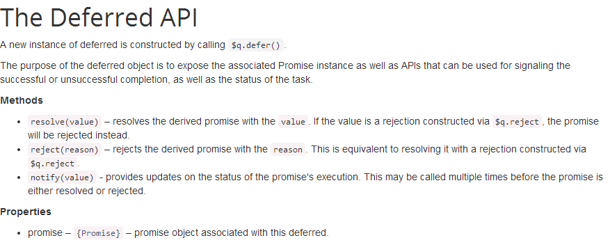
- uma tarefa assíncrona [task] é criada pela instrução [$q.defer()];
- ela é concluída por meio de um dos dois métodos:
- [task.resolve(value)]: que conclui a tarefa com sucesso e retorna o valor [value] para aqueles que aguardam o término da tarefa;
- [task.reject(value)]: que encerra a tarefa com falha e retorna o valor [value] para aqueles que aguardam o término da tarefa;
A tarefa [task] pode fornecer informações regularmente àqueles que aguardam sua conclusão:
- [task.notify(value)]: envia o valor [value] para aqueles que aguardam a conclusão da tarefa. A tarefa continua sendo executada;
Quem deseja aguardar a conclusão da tarefa utiliza o campo [promise] da mesma:
O objeto [promise] possui o seguinte API (http://www.frangular.com/2012/12/api-promise-angularjs.html):

Para lidar tanto com o sucesso quanto com o fracasso da tarefa, escreveremos:
- linha 1: recuperamos a promessa da tarefa;
- linha 2: definem-se as funções a serem executadas em caso de sucesso ou de falha. É possível não definir uma função de falha. A função [successCallback] só será executada ao final da tarefa [task], caso a tarefa [task.resolve()] tenha sido bem-sucedida. A função [errorCallBack] só será executada ao final da tarefa [task], caso a função [task.reject()] tenha falhado.
- linha 3: define-se a função a ser executada após a execução de uma das duas funções anteriores. Coloca-se aqui o código comum às duas funções [successCallback, errorCallBack].
Voltemos ao código da função [waitForSomeTime]:
// espera
function waitForSomeTime(milliseconds) {
// espera assíncrona de milissegundos
var task = $q.defer();
$timeout(function () {
task.resolve();
}, milliseconds);
// retornando a tarefa
return task;
};
- linha 4: é criada uma tarefa;
- linhas 5-7: o objeto [$timeout] permite definir uma função (1º parâmetro) que será executada após um determinado intervalo de tempo expresso em milissegundos (2º parâmetro). Aqui, o segundo parâmetro da função [$timeout] é o parâmetro do método (linha 1);
- linha 6: ao término do intervalo [milliseconds], a tarefa é concluída com sucesso;
- linha 9: retorna-se a tarefa [task]. É importante entender que a linha 9 é executada imediatamente após a definição do objeto [$timeout]. Não se aguarda o término do prazo [milliseconds]. O código das linhas 2 a 10 é, portanto, executado em dois momentos diferentes:
- uma primeira vez, ao definir o objeto [$timeout];
- uma segunda vez, quando o tempo de espera [milliseconds] expirar;
Trata-se, portanto, de uma função assíncrona: seu resultado é obtido em um momento posterior ao de sua execução.
O código do controlador que utiliza o serviço [config] é o seguinte:
// controlador
angular.module("rdvmedecins")
.controller('rdvMedecinsCtrl', ['$scope', 'utils', 'config', '$filter',
function ($scope, utils, config, $filter) {
// ------------------- inicialização do modelo
// mensagem de espera
$scope.waiting = {text: config.msgWaiting, visible: false, cancel: cancel, time: undefined};
$scope.waitingTimeText = config.waitingTimeText;
// tarefa em espera
var task;
// registros
utils.debug("libellé temps d'attente", $filter('translate')($scope.waitingTimeText));
utils.debug("locales['fr']=", config.locales['fr']);
// execução da ação
$scope.execute = function () {
// registro
utils.debug('début', new Date());
// exibição da mensagem de espera
$scope.waiting.visible = true;
// espera simulada
task = utils.waitForSomeTime($scope.waiting.time);
// fim da espera
task.promise.then(function () {
// sucesso
utils.debug('fin', new Date());
}, function () {
// falha
utils.debug('Opération annulée')
});
task.promise['finally'](function () {
// fim da espera em todos os casos
$scope.waiting.visible = false;
});
};
// cancelamento da espera
function cancel() {
// concluindo a tarefa
task.reject();
}
}]);
- linha 3: o controlador utiliza o serviço [config];
- linha 7: foi adicionado o campo [time] ao objeto [$scope.waiting]. O objeto [$scope.waiting.time] recebe o valor do tempo de espera definido pelo usuário;
- linha 8: a chave da mensagem de espera exibida pela vista é colocada no modelo [$scope.waitingTimeText]. De modo geral, tudo o que é exibido por uma vista V deve ser colocado no objeto [$scope];
- linha 10: uma variável local. Ela não é exposta à visualização V;
- linhas 12-13: uso do método [debug] do serviço [config]. Obtém-se o seguinte resultado no console:
Na linha 2, obtém-se a notação JSON do objeto locales['fr'].
- linha 16: o método executado quando o usuário clica no botão [Executer];
- linha 18: exibe a hora de início da execução do método;
- linha 22: inicia-se a tarefa [waitForSomeTime]. Não se aguarda sua conclusão. A execução continua com a linha 24 seguinte;
- linhas 24-30: definem-se as funções a serem executadas quando a tarefa for concluída com sucesso (linha 26) e em caso de erro (linha 29);
- linha 26: exibe a hora de término da execução do método;
- linha 29: exibe que a operação foi cancelada. Isso ocorre apenas quando o usuário clica no botão [Annuler]. A instrução da linha 41, então, interrompe a tarefa assíncrona com um código de falha;
- linhas 31-34: define-se a função a ser executada após a execução de uma das duas funções anteriores;
É importante compreender as sequências de execução desse código. Caso o usuário defina um tempo de espera de 3 segundos e não cancele a espera:
- ao clicar no botão [Exécuter], a função [$scope.execute] é executada. As linhas 16 a 34 são executadas sem a espera de 3 segundos. Ao final dessa execução, a visualização V é sincronizada com o modelo M. A mensagem de espera é exibida (ng-show=$scope.waiting.visible=true, linha 20) e o formulário é ocultado (ng-hide=$scope.waiting.visible=true, linha 20);
- a partir desse momento, o usuário pode interagir novamente com a visualização. Ele pode, por exemplo, clicar no botão [Annuler];
- se não o fizer, após 3 segundos, a função [$timeout] (ver linhas 5-7 abaixo) é executada:
// espera
function waitForSomeTime(milliseconds) {
// espera assíncrona de milissegundos milissegundos
var task = $q.defer();
$timeout(function () {
task.resolve();
}, milliseconds);
// retornando a tarefa
return task;
};
- portanto, após 3 segundos, o código é executado. Esse código encerra a tarefa [task] com um código de sucesso (resolve). Isso acionará a execução de todos os códigos que aguardavam esse encerramento (linha 4 abaixo):
// espera simulada
task = utils.waitForSomeTime($scope.waiting.time);
// fim da espera
task.promise.then(function () {
// sucesso
utils.debug('fin', new Date());
}, function () {
// falha
utils.debug('Opération annulée')
});
task.promise['finally'](function () {
// fim da espera em todos os casos
$scope.waiting.visible = false;
});
- a linha 6 acima (conclusão bem-sucedida) será, portanto, executada. Em seguida, será a vez das linhas 11 a 14. Após a execução desse código, retornamos à visualização V, que será então sincronizada com seu modelo M. A mensagem de espera é ocultada (ng-show=$scope.waiting.visible=false, linha 13) e o formulário é exibido (ng-hide=$scope.waiting.visible=false, linha 13);
As exibições na tela são, então, as seguintes:
Observa-se acima o intervalo de 3 segundos (06:01-05:58) entre o início e o fim da espera. Se, ao contrário, o usuário cancelar a espera antes dos 3 segundos, teremos a seguinte exibição:
Para concluir, é importante entender que, a qualquer momento, há apenas um thread de execução chamado thread do UI (Interface do Usuário). O término de uma tarefa assíncrona é sinalizado por um evento, exatamente como ocorre ao clicar em um botão. Esse evento não é processado imediatamente. Ele é colocado na fila de eventos que aguardam execução. Quando chega a sua vez, ele é processado. Esse processamento utiliza a thread do UI e, portanto, durante esse tempo, a interface fica congelada. Ela não responde às solicitações do usuário. Por isso, é importante que o processamento de um evento seja rápido. Como cada evento é processado pela thread do UI, nunca é necessário resolver problemas de sincronização entre threads em execução simultânea. A cada momento, apenas a thread do UI está em execução.
3.7.6. Exemplo 6: os serviços HTTP
Apresentamos agora o serviço [dao], que se comunica com o servidor web:
 |
3.7.6.1. A visualização V
 |
Vamos criar um formulário para solicitar a lista de médicos:

Vamos duplicar [app-01.html] em [app-16.html], que em seguida modificaremos da seguinte maneira:
<div class="container" ng-cloak="">
<h1>Rdvmedecins - v1</h1>
<!-- a mensagem de espera -->
<div class="alert alert-warning" ng-show="waiting.visible" ng-cloak="">
<h1>{{ waiting.text | translate}}
<button class="btn btn-primary pull-right" ng-click="waiting.cancel()">{{'msg_cancel'|translate}}</button>
<img src="assets/images/waiting.gif" alt=""/>
</h1>
</div>
<!-- a solicitação -->
<div class="alert alert-info" ng-hide="waiting.visible">
<div class="form-group">
<label for="waitingTime">{{waitingTimeText | translate}}</label>
<input type="text" id="waitingTime" ng-model="waiting.time"/>
</div>
<div class="form-group">
<label for="urlServer">{{urlServerLabel | translate}}</label>
<input type="text" id="urlServer" ng-model="server.url"/>
</div>
<div class="form-group">
<label for="login">{{loginLabel | translate}}</label>
<input type="text" id="login" ng-model="server.login"/>
</div>
<div class="form-group">
<label for="password">{{passwordLabel | translate}}</label>
<input type="password" id="password" ng-model="server.password"/>
</div>
<button class="btn btn-primary" ng-click="execute()">{{medecins.title|translate:medecins.model}}</button>
</div>
<!-- a lista de médicos -->
<div class="alert alert-success" ng-show="medecins.show">
{{medecins.title|translate:medecins.model}}
<ul>
<li ng-repeat="medecin in medecins.data">{{medecin.titre}}{{medecin.prenom}} {{medecin.nom}}</li>
</ul>
</div>
<!-- a lista de erros -->
<div class="alert alert-danger" ng-show="errors.show">
{{errors.title|translate:errors.model}}
<ul>
<li ng-repeat="message in errors.messages">{{message|translate}}</li>
</ul>
</div>
</div>
...
<script type="text/javascript" src="rdvmedecins-04.js"></script>
- linhas 13-31: implementam o formulário. Este não fica visível quando a mensagem de espera é exibida (ng-hide="waiting.visible"). Vale ressaltar que os quatro campos de entrada são armazenados em (atributos ng-model) [waiting.time (ligne 16), server.url (ligne 20), server.login (ligne 24), server.password (ligne 28)];
- linhas 34-39: exibem a lista de médicos. Essa lista nem sempre está visível (ng-show="medecins.show").
- linha 35: uma alternativa à sintaxe <div ... translate="{{medecins.title}}" translate-values="{{medecins.model}}"> já vista anteriormente;
- linha 36: uma lista não ordenada;
- linha 37: a lista de médicos será encontrada no modelo [medecins.data]. A diretiva Angular [ng-repeat] permite percorrer uma lista. A sintaxe ng-repeat="medecin in medecins.data" determina que a tag <li> seja repetida para cada elemento da lista [medecins.data]. O elemento atual da lista é chamado [medecin];
- linha 37: para cada <li>, são exibidos o título, o nome e o sobrenome do médico atual, designado pela variável [medecin];
- linhas 42-47: exibem a lista de erros. Essa lista nem sempre fica visível (ng-show="errors.show"). Essa exibição segue o mesmo modelo da exibição da lista de médicos. De modo geral, para exibir uma lista de objetos, utiliza-se a diretiva Angular [ng-repeat];
- linha 51: o código JavaScript agora está no arquivo [rdvmedecins-04]
3.7.6.2. O controlador C e o modelo M
 |
O código JavaScript é alterado da seguinte forma:

- linhas 6-9: o módulo [rdvmedecins] declara uma dependência do módulo [base64] fornecido pela biblioteca [angular-base64], que é uma das dependências do projeto. Esse módulo serve para codificar em Base64 a string [login:password] enviada ao serviço web para autenticação;
- linhas 12-13: a função de inicialização que contém nossas mensagens internacionalizadas. Novas mensagens aparecem. Não as apresentaremos mais;
- linhas 69-70: o serviço [config], que configura nossa aplicação. Novas chaves de mensagem foram adicionadas a ele. Não as apresentaremos mais;
- linhas 318-319: o serviço [utils], que contém métodos utilitários. Novos métodos são adicionados a ele. Vamos apresentá-los;
- linhas 385-386: o serviço [dao], responsável pelas trocas com o serviço web. É nele que vamos nos concentrar;
- linhas 467-468: o controlador C da visualização V que acabamos de apresentar. Vamos apresentá-lo agora, pois é ele quem coordena tudo e responde às solicitações do usuário;
3.7.6.3. O controlador C
O código do controlador é o seguinte:
angular.module("rdvmedecins")
.controller('rdvMedecinsCtrl', ['$scope', 'utils', 'config', 'dao', '$translate',
function ($scope, utils, config, dao, $translate) {
// ------------------- inicialização do modelo
// modelo
$scope.waiting = {text: config.msgWaiting, visible: false, cancel: cancel, time: undefined};
$scope.waitingTimeText = config.waitingTimeText;
$scope.server = {url: undefined, login: undefined, password: undefined};
$scope.medecins = {title: config.listMedecins, show: false, model: {}};
$scope.errors = {show: false, model: {}};
$scope.urlServerLabel = config.urlServerLabel;
$scope.loginLabel = config.loginLabel;
$scope.passwordLabel = config.passwordLabel;
// tarefa assíncrona
var task;
// execução da ação
$scope.execute = function () {
// atualizando o UI
$scope.waiting.visible = true;
$scope.medecins.show = false;
$scope.errors.show = false;
// espera simulada
task = utils.waitForSomeTime($scope.waiting.time);
var promise = task.promise;
// espera
promise = promise.then(function () {
// solicita-se a lista de médicos;
task = dao.getData($scope.server.url, $scope.server.login, $scope.server.password, config.urlSvrMedecins);
return task.promise;
});
// analisando o resultado da chamada anterior
promise.then(function (result) {
// result={err: 0, data: [med1, med2, ...]}
// result={err: n, messages: [msg1, msg2, ...]}
if (result.err == 0) {
// inserimos os dados coletados no modelo
$scope.medecins.data = result.data;
// atualiza-se o UI
$scope.medecins.show = true;
$scope.waiting.visible = false;
} else {
// ocorreram erros ao obter a lista de médicos
$scope.errors = { title: config.getMedecinsErrors, messages: utils.getErrors(result), show: true, model: {}};
// atualiza-se o UI
$scope.waiting.visible = false;
}
});
};
// cancelamento pendente
function cancel() {
// concluindo a tarefa
task.reject();
// atualizando o UI
$scope.waiting.visible = false;
$scope.medecins.show = false;
$scope.errors.show = false;
}
}
])
;
- linha 2: o controlador tem uma nova dependência, a do serviço [dao];
- linhas 6-13: o modelo M da visualização V é inicializado para a primeira exibição desta;
- linha 8: [$scope.server] será utilizado para recuperar três das quatro informações do formulário V, sendo que a quarta está armazenada em [$scope.waiting.time] (linha 6);
- linha 9: [$scope.medecins] reunirá as informações necessárias para a exibição da lista de médicos:
<!-- a lista de médicos -->
<div class="alert alert-success" ng-show="medecins.show">
{{medecins.title|translate:medecins.model}}
<ul>
<li ng-repeat="medecin in medecins.data">{{medecin.titre}}{{medecin.prenom}} {{medecin.nom}}</li>
</ul>
</div>
O atributo [medecins.title] será o título do banner. Ele é definido no serviço [config]. O atributo [medecins.show] controlará se o banner será exibido ou não (atributo ng-show="medecins.show"). O atributo [medecins.model] é um dicionário vazio e permanecerá assim. Ele serve apenas para ilustrar o uso da variante de tradução utilizada na linha 3. Ainda não definido, o atributo [medecins.data] conterá a lista de médicos (linha 5).
- linha 10: [$scope.errors] reunirá as informações necessárias para a exibição da lista de erros:
<!-- lista de erros -->
<div class="alert alert-danger" ng-show="errors.show">
{{errors.title|translate:errors.model}}
<ul>
<li ng-repeat="message in errors.messages">{{message|translate}}</li>
</ul>
</div>
O atributo [errors.title] será o título do banner. Ele é definido no serviço [config]. O atributo [errors.show] controlará se o banner será exibido ou não (atributo ng-show="errors.show"). O atributo [errors.model] é um dicionário vazio e permanecerá assim. Ele serve simplesmente para ilustrar o uso da variante de tradução utilizada na linha 3. Ainda não definido, o atributo [errors.messages] conterá a lista de mensagens de erro a serem exibidas (linha 5).
- linha 16: a tarefa assíncrona. O controlador iniciará sucessivamente duas tarefas assíncronas. As referências a essas tarefas sucessivas serão armazenadas na variável [task]. Isso permitirá cancelá-las (linha 55);
- linha 19: o método executado quando o usuário clica no botão [Liste des médecins]:
<button class="btn btn-primary" ng-click="execute()">Liste des médecins</button>
- linhas 21-23: a interface visual é atualizada: a mensagem de espera é exibida, todo o restante é ocultado;
- linha 25: cria-se a tarefa assíncrona de espera. Receber-se-á um sinal (tarefa concluída) ao final do tempo inserido pelo usuário no formulário;
- linha 26: recupera-se a promessa da tarefa assíncrona. É com ela que o programa que inicia a tarefa trabalha. No entanto, é necessário ter a referência da própria tarefa para poder cancelá-la (linha 55);
- linhas 28-32: define-se o trabalho a ser realizado quando a espera for concluída;
- linha 30: utiliza-se o método [dao.getData] para iniciar uma nova tarefa assíncrona. Passam-se a ele as informações necessárias:
- o URL raiz do serviço web [$scope.server.url], por exemplo, [http://localhost:8080];
- o login [$scope.server.login] para autenticação, por exemplo, [admin];
- a senha [$scope.server.password] para autenticar-se, por exemplo, [admin];
- o URL que executa o serviço solicitado [config.urlSvrMedecins], neste caso [/getAllMedecins]. No total, o URL completo será [http://localhost:8080/getAllMedecins];
O método [dao.getData] retorna um resultado que pode assumir duas formas possíveis:
- (continuação)
- {err: 0, data: [med1, med2, ...]}, em que [medi] é um objeto que representa um médico (título, nome, sobrenome),
- {err: n, messages: [msg1, msg2, ...]}, em que [msgi] é uma mensagem de erro e n é diferente de 0;
- linha 31: retorna-se a promessa da tarefa. Aqui há algo a ser compreendido. Temos duas promessas:
- promise.then(): retorna uma primeira promessa [promise1];
- return task.promise: retorna uma segunda promessa [promise2];
- no final, promise=promise.then(...; return task.promise) é uma cadeia de duas promessas [promise2.promise1]. [promise1] só será avaliada quando a promessa [promise2] for obtida, ou seja, quando a tarefa [dao.getData] for concluída. A promessa [promise1] não depende de nenhuma tarefa assíncrona. Portanto, ela será obtida imediatamente;
- linhas 34-50: da explicação anterior, conclui-se que essas linhas só serão executadas quando a tarefa [dao.getData] for concluída. O parâmetro [result] passado para a função da linha 34 é construído pelo método [dao.getData] e transmitido ao código chamador pela operação [task.resolve(result)], em que [result] tem o seguinte formato:
- {err: 0, data: [med1, med2, ...]}, em que [medi] é um objeto que representa um médico (título, nome, sobrenome),
- {err: n, messages: [msg1, msg2, ...]}, em que [msgi] é uma mensagem de erro e n é diferente de 0;
- linha 37: verificamos o código de erro [result.err];
- linhas 38-42: se não houver erro (result.err == 0), então se recupera a lista de médicos e a exibe;
- linhas 44-47: se, ao contrário, houver erro (result.err != 0), então recuperamos a lista de mensagens de erro e a exibimos;
- linhas 53-56: a mensagem de espera com seu botão de cancelamento permanece visível enquanto as duas operações assíncronas não estiverem concluídas. Vejamos o que acontece dependendo do momento do cancelamento:
- primeiro, é preciso entender que as linhas 19-50 são executadas de uma só vez. Nesse momento, apenas uma tarefa assíncrona foi iniciada, a da linha 25;
- após essa primeira execução, a visualização V é atualizada e, portanto, a barra de espera e seu botão de cancelamento ficam visíveis. Se o usuário cancelar a espera antes que a tarefa da linha 25 seja concluída, o método da linha 53 é executado e a tarefa é cancelada com falha (linha 55);
- linhas 56-59: a interface é atualizada: o formulário é exibido novamente e todo o restante é ocultado,
- em seguida, retorna-se à visualização V e o navegador processa o próximo evento. Como a tarefa foi concluída, a promessa dessa tarefa é obtida, o que gera um evento. Esse evento é então processado;
- as linhas 28-32 são então executadas. Não há função definida para o caso de falha, portanto nenhum código é executado. Obtém-se uma nova promessa, a que sempre é retornada por [promise.then] e sempre obtida,
- como o evento foi processado, há um retorno à visualização V e o navegador processará o próximo evento. Como a [promise] da linha 28 foi processada, a da linha 34 será resolvida, o que provocará um novo evento. Ele é então processado;
- as linhas 34 a 49 serão então executadas por sua vez, pois a promessa utilizada na linha 34 foi cumprida. Mais uma vez, como não há função definida para o caso de falha, nenhum código é executado,
- chegamos assim à linha 50. Não há mais espera por tarefa e a nova visualização V é exibida;
- suponhamos agora que a cancelamento ocorra enquanto a segunda tarefa assíncrona [dao.getData] está em execução. O raciocínio anterior pode ser aplicado novamente. O término da tarefa provocará a execução das linhas 34 a 50 com um término de tarefa com falha. Em breve descobriremos que o método [dao.getData] realiza uma chamada assíncrona HTTP para o serviço web. Essa chamada não será cancelada, mas seu resultado não será utilizado.
É importante compreender essa interação constante entre a exibição da vista V e o processamento dos eventos do navegador. Os eventos são desencadeados pelo usuário (um clique) ou por operações do sistema, como a conclusão de uma operação assíncrona. O estado de repouso do navegador é a exibição da vista V. Ele é retirado desse repouso por um evento que ocorre e que ele então processa. Assim que o evento é processado, ele retorna ao seu estado de repouso. A vista V é então atualizada se o evento processado tiver alterado seu modelo M. O navegador é retirado de seu estado de repouso pelo evento seguinte.
Tudo ocorre em uma única thread. Dois eventos nunca são processados simultaneamente. Sua execução é sequencial. O navegador só passa para o evento seguinte quando o anterior libera o controle, geralmente porque foi totalmente processado.
Resta-nos um ponto a explicar. Para exibir as mensagens de erro, escrevemos:
$scope.errors = { title: config.getMedecinsErrors, messages: utils.getErrors(result), show: true, model: {}};
A lista de mensagens é fornecida pelo método [utils.getErrors], definido no serviço [utils]. Esse método é o seguinte:
// análise dos erros na resposta do servidor JSON
function getErrors(data) {
// dados {err:n, mensagens:[]}, err!=0
// erros
var errors = [];
// código de erro
var err = data.err;
switch (err) {
case 2 :
// não autorizado
errors.push('not_authorized');
break;
case 3 :
// proibido
errors.push('forbidden');
break;
case 4 :
// erro local
errors.push('not_http_error');
break;
case 6 :
// documento não encontrado
errors.push('not_found');
break;
default :
// outros casos
errors = data.messages;
break;
}
// se não houver mensagem, insere-se uma
if (! errors || errors.length == 0) {
errors=['error_unknown'];
}
// exibimos a lista de erros
return errors;
}
- linhas 2-3: o parâmetro [data] recebido é um objeto com dois atributos:
- [err]: um código de erro;
- [messages]: uma lista de mensagens;
- linha 5: vamos construir uma tabela de mensagens de erro. Essas mensagens são internacionalizadas. Por esse motivo, não são as próprias mensagens que colocamos na matriz, mas sim suas chaves de internacionalização, exceto na linha 27. Nesse caso, utilizamos o atributo [messages] do parâmetro [data]. Essas mensagens são mensagens reais e não chaves de mensagem. A visão V, no entanto, irá tratá-las como chaves de mensagem, que, portanto, não serão encontradas. Nesse caso, o módulo [translate] exibe a chave de mensagem que não encontrou, ou seja, neste caso, uma mensagem real. Esse é o resultado desejado;
- linhas 32-34: tratam o caso em que [data.messages], na linha 27, é igual a null. Isso ocorre com o serviço web programado. Esse caso deveria ter sido evitado.
3.7.6.4. O serviço [dao]
 |
O serviço [dao] garante as trocas HTTP com o serviço web / JSON. Seu código é o seguinte:
angular.module("rdvmedecins")
.factory('dao', ['$http', '$q', 'config', '$base64', 'utils',
function ($http, $q, config, $base64, utils) {
// registros
utils.debug("[dao] init");
// ----------------------------------métodos privados
// obter dados do serviço web
function getData(serverUrl, username, password, urlAction, info) {
// operação assíncrona
var task = $q.defer();
// solicitação de URL HTTP
var url = serverUrl + urlAction;
// autenticação básica
var basic = "Basic " + $base64.encode(username + ":" + password);
// a resposta
var réponse;
// todas as solicitações HTTP devem ser autenticadas
var headers = $http.defaults.headers.common;
headers.Authorization = basic;
// faz-se a solicitação HTTP
var promise;
if (info) {
promise = $http.post(url, info, {timeout: config.timeout});
} else {
promise = $http.get(url, {timeout: config.timeout});
}
promise.then(success, failure);
// retornamos a própria tarefa para que ela possa ser cancelada
return task;
// sucesso
function success(response) {
// response.data={status:0, data:[med1, med2, ...]} ou {status:x, data:[msg1, msg2, ...]
utils.debug("[dao] getData[" + urlAction + "] success réponse", response);
// resposta
var payLoad = response.data;
réponse = payLoad.status == 0 ? {err: 0, data: payLoad.data} : {err: 1, messages: payLoad.data};
// a resposta é devolvida
task.resolve(réponse);
}
// falha
function failure(response) {
utils.debug("[dao] getData[" + urlAction + "] error réponse", response);
// analisamos o status
var status = response.status;
var error;
switch (status) {
case 401 :
// não autorizado
error = 2;
break;
case 403:
// proibido
error = 3;
break;
case 404:
// não encontrado
error = 6;
break;
case 0:
// erro local
error = 4;
break;
default:
// outra coisa
error = 5;
}
// a resposta está sendo enviada
task.resolve({err: error, messages: [response.statusText]});
}
}
// --------------------- instância do serviço [dao]
return {
getData: getData
}
}]);
- linhas 77-79: o serviço possui apenas um único campo: o método [getData], que permite obter informações do serviço web / JSON;
- linha 2: aparece uma dependência [$http] que ainda não havíamos encontrado. Trata-se de um serviço predefinido do Angular que permite a comunicação HTTP com uma entidade remota;
- linha 6: um registro para verificar em que momento do ciclo de vida do aplicativo o código é executado;
- linha 10: o método [getData] aceita cinco parâmetros:
- [serverUrl]: a raiz do serviço web (http://localhost:8080);
- [urlAction]: o URL do serviço específico solicitado (/getAllMedecins);
- [username]: o login do usuário;
- [password]: sua senha;
- [info]: objeto que reúne informações complementares quando o URL do serviço específico solicitado é solicitado por meio de uma operação POST. No caso do URL (/getAllMedecins), esse parâmetro não foi passado. Portanto, ele é [undefined];
- linha 12: cria-se uma tarefa assíncrona;
- linha 14: o URL conclui o serviço solicitado (http://localhost:8080/getAllMedecins);
- linha 16: a autenticação é feita enviando o cabeçalho HTTP a seguir:
onde [code] é o código Base64 da sequência [username:password];
A linha 16 constrói a parte [Basic code] do cabeçalho HTTP;
- linha 18: a resposta do serviço web;
- linha 20: os cabeçalhos HTTP enviados por padrão pelo Angular em uma solicitação HTTP são definidos no objeto [$http.defaults.headers.common]. O cabeçalho [Authorization:Basic code] não faz parte disso;
- linha 21: ela é adicionada aos cabeçalhos HTTP a serem enviados sistematicamente. À esquerda da atribuição, temos o cabeçalho [Authorization] a ser inicializado e, à direita, o valor do cabeçalho, neste caso, o valor definido na linha 16. Assim, se escrevermos:
O Angular enviará o cabeçalho HTTP:
- linha 23: os métodos do serviço [$http] retornam promessas. Elas serão armazenadas na variável [promise];
- linha 27: como, neste caso, o parâmetro [info] tem o valor [undefined], é a linha 27 que é executada. O URL (http://localhost:8080/getAllMedecins) é solicitado com um GET. Para não esperar muito tempo, define-se um tempo máximo de espera (timeout) para obter a resposta do servidor. Por padrão, esse tempo é de um segundo;
- linha 29: definimos os dois métodos a serem executados quando a promessa for obtida:
- [success]: definido na linha 34, é o método a ser executado quando a promessa é obtida após o sucesso da tarefa;
- [failure]: definido na linha 45, é o método a ser executado quando a promessa é obtida após uma falha da tarefa;
- os dois métodos (ou melhor, funções) estão definidos dentro da função [getData]. Isso é possível em JavaScript. As variáveis definidas em [getData] são reconhecidas nas duas funções internas [success, failure];
- linha 31: retorna-se a tarefa criada na linha 12. É preciso lembrar aqui o código chamador:
promise = promise.then(function () {
// solicitando a lista de médicos;
task = dao.getData($scope.server.url, $scope.server.login, $scope.server.password, config.urlSvrMedecins);
return task.promise;
});
Na linha 3 acima, recuperamos corretamente uma tarefa.
- linha 34: a função [success] é executada posteriormente, quando a chamada HTTP é concluída com sucesso. Esse conceito de sucesso está relacionado à primeira linha de uma resposta HTTP. Ela tem o seguinte formato:
O código é um texto de três dígitos que indica se a chamada foi bem-sucedida ou não. De maneira geral, pode-se dizer que os códigos 2xx e 3xx são códigos de sucesso, sendo os demais códigos de falha. O texto é uma breve explicação. Aqui estão duas respostas possíveis, uma em caso de sucesso e outra em caso de falha:
- linha 36: exibe-se no console a resposta do servidor. No erro [404 Not Found], obtém-se algo como:
[dao] getData[/getAllMedecins] error réponse : {"data":"...","status":404,"config":{...},"statusText":"Not Found"}
Nessa resposta, utilizaremos apenas os campos [data], [status] e [statusText].
- linha 38: recuperamos o campo [data] da resposta. Ele terá um dos seguintes formatos:
- {status: 0, data: [med1, med2, ...]}, em que [medi] é um objeto que representa um médico (título, nome, sobrenome),
- {status: n, data: [msg1, msg2, ...]}, em que [msgi] é uma mensagem de erro e n é diferente de 0;
 |

- linha 39: constrói-se a resposta {0,data} ou {n,mensagens}. A primeira resposta contém os médicos no campo [data]. A segunda indica um erro ocorrido no servidor. O servidor tratou desse erro, gerou um código de erro em [err] e uma lista de mensagens de erro em [data]. Em ambos os casos, ele retorna um código HTTP 200, indicando que a ordem HTTP foi processada completamente. É por isso que os dois casos são tratados na mesma função [success];
- linha 41: a tarefa está concluída ([task.resolve]) e é retornada uma das duas respostas:
- {err: 0, data: [med1, med2, ...]}, em que [medi] é um objeto que representa um médico (título, nome, sobrenome),
- {err: n, messages: [msg1, msg2, ...]}, em que [msgi] é uma mensagem de erro e n é diferente de 0;
É preciso relacionar esse código à forma como essa resposta é recuperada no código chamador do controlador:
// analisamos o resultado da chamada anterior
promise.then(function (result) {
// result={err: 0, data: [med1, med2, ...]}
// result={err: n, messages: [msg1, msg2, ...]}
...
}
A resposta de [task.resolve(réponse)] está na variável [result], mencionada acima.
- linha 45: a função [failure] quando a tarefa assíncrona termina com falha. Há dois casos possíveis:
- o servidor sinaliza essa falha retornando um código que não é 2xx nem 3xx,
- o Angular cancela a chamada HTTP. Nesse caso, não há chamada. Há uma exceção do Angular, mas nenhum código de erro HTTP retornado pelo servidor. Esse é o caso, por exemplo, se for fornecido um URL inválido que não pode ser chamado;
- linha 46: exibimos a resposta no console;
- linha 48: lembramos que a resposta do servidor tem o formato:
{"data":"...","status":404,"config":{...},"statusText":"Not Found"}
Na linha 48, recuperamos o atributo [status] mencionado acima;
- linhas 50-70: a partir do código de erro HTTP, vamos gerar um novo código de erro para ocultar dos códigos chamadores a natureza HTTP do método [dao.getData]. É possível verificar que, no controlador que utiliza esse método, nada sugere que haja uma chamada HTTP no método;
- linha 51: o erro [401] corresponde a uma falha na autenticação (senha incorreta, por exemplo),
- linha 55: o erro [403] corresponde a uma chamada não autorizada. O usuário se autenticou corretamente, mas não possui permissões suficientes para solicitar o URL que solicitou. Isso ocorrerá com o usuário [user / user]. Esse usuário existe no banco de dados, mas não tem permissão para usar o aplicativo. Apenas o usuário [admin / admin] possui essa permissão;
- linha 59: o erro [404] corresponde a um URL não encontrado. O erro pode ter várias causas:
- o usuário cometeu um erro ao digitar o URL do serviço;
- o serviço web não foi iniciado;
- o serviço web não respondeu com rapidez suficiente (tempo limite padrão de um segundo);
- linha 63: o código de erro HTTP 0 não existe. Estamos no caso em que o Angular não realizou a chamada HTTP solicitada porque o URL inserido pelo usuário é inválido e não pode ser chamado. Mais adiante, encontraremos outros casos em que o Angular é levado a não executar a chamada HTTP solicitada;
- linha 72: a tarefa é concluída com sucesso (task.resolve), retornando uma resposta do tipo {err, messages}, em que o array [messages] é composto apenas pela mensagem [response.statusText]. Caso o Angular não tenha feito a chamada HTTP solicitada, teremos uma string vazia;
Agora que temos uma visão tanto global quanto detalhada do aplicativo, podemos iniciar os testes.
3.7.6.5. Testes da aplicação - 1
Vamos começar com entradas válidas:

 |
- em [1], colocamos 0 para que não haja espera;
- em [2], aparece uma mensagem de erro, embora as entradas estejam corretas. Não apresentamos as diferentes mensagens de erro. A mensagem exibida em [2] é uma mensagem genérica associada ao erro 0, que corresponde a uma exceção do Angular. O Angular encontrou um problema que o impediu de realizar uma chamada HTTP. Nesses casos, é preciso verificar os logs do console JavaScript. Há duas maneiras de fazer isso:
- executar [F12] no navegador Chrome;
- usar o console do WebStorm;
No console do Webstorm, encontramos várias mensagens, incluindo esta:
- linha 1: o Angular sinaliza um erro sobre o qual voltaremos a falar;
- linha 2: o log do método [dao.getData]. Nele encontramos alguns detalhes interessantes:
- [status] é igual a 0, indicando, portanto, que não houve nenhuma chamada para HTTP. Consequentemente, [statusText] está vazio,
- [url] é igual a [http://localhost:8080/getAllMedecins], o que está correto;
- o cabeçalho HTTP de autenticação [Authorization":"Basic YWRtaW46YWRtaW4=] também está correto;
Então, por que isso não funcionou? A frase-chave nos logs é [No 'Access-Control-Allow-Origin' header is present]. Para entendê-la, é preciso uma longa explicação. Vamos começar revisando a arquitetura geral do aplicativo cliente/servidor:

- as páginas HTML / CSS / JS do aplicativo Angular vêm do servidor [1];
- em [2], o serviço [dao] faz uma solicitação a outro servidor, o servidor [2]. Bem, isso é proibido pelo navegador que executa o aplicativo Angular, pois se trata de uma falha de segurança. O aplicativo só pode consultar o servidor de onde ele vem, ou seja, o servidor [1];
Na verdade, não é correto dizer que o navegador proíbe a aplicação Angular de consultar o servidor [2]. Na realidade, ela o consulta para perguntar se ele autoriza que um cliente que não seja do próprio servidor o consulte. Essa técnica de compartilhamento é chamada de CORS (Cross-Origin Resource Sharing). O servidor [2] dá sua autorização enviando cabeçalhos HTTP específicos. É por isso que, neste caso, como nosso servidor [2] não os enviou, o navegador se recusou a realizar a chamada HTTP solicitada pelo aplicativo.
Vamos agora entrar em detalhes. Vamos examinar as trocas de dados de rede que ocorreram durante a chamada HTTP. Para isso, no navegador Chrome, pressionamos [F12] para acessar as ferramentas do desenvolvedor e selecionamos a aba [Network] para visualizar as trocas de dados de rede:
 |
- em [1], selecionamos a aba [network];
- em [2], solicitamos a lista de médicos;
Obtemos as seguintes informações na aba [network]:
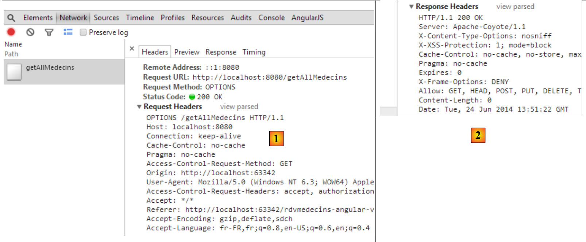 |
- em [1], as informações enviadas ao servidor;
- em [2], a resposta do servidor;
É possível observar em [1] que o navegador enviou uma solicitação HTTP [OPTIONS] sobre a URL solicitada. [OPTIONS] é um dos comandos possíveis, juntamente com HTTP, [GET] e [POST], que são mais conhecidos. Ela permite solicitar informações a um servidor, especialmente sobre as opções HTTP que ele suporta, daí o nome do comando. O servidor responde em [2]. Para indicar que aceita solicitações de clientes que não estão em seu domínio, ele deve retornar um cabeçalho específico chamado [Access-Control-Allow-Origin]. E foi por não ter enviado esse cabeçalho que o Angular não executou a chamada HTTP solicitada e retornou o erro:
XMLHttpRequest cannot load http://localhost:8080/getAllMedecins. Não há cabeçalho 'Access-Control-Allow-Origin' no recurso solicitado. Portanto, a origem 'http://localhost:63342' não tem permissão de acesso.
Portanto, precisamos modificar nosso servidor para que ele envie o cabeçalho HTTP esperado.
3.7.6.6. Alteração do servidor web / JSON
Voltamos ao Eclipse. Para preservar o que já foi feito, duplicamos a versão atual do servidor web / JSON [rdvmedecins-webapi-v2] em [rdvmedecins-webapi-v3] [1]:
 |
Fazemos uma primeira modificação no [ApplicationModel], que é um dos elementos de configuração do serviço web:
package rdvmedecins.web.models;
...
@Component
public class ApplicationModel implements IMetier {
// a camada [métier]
@Autowired
private IMetier métier;
// dados provenientes da camada [métier]
private List<Medecin> médecins;
private List<Client> clients;
private List<String> messages;
// dados de configuração
private boolean CORSneeded = true;
...
public boolean isCORSneeded() {
return CORSneeded;
}
}
- linha 17: criamos uma variável booleana que indica se aceitamos ou não clientes externos ao domínio do servidor;
- linhas 21-23: o método de acesso a essa informação;
Em seguida, criamos um novo controlador Spring MVC [3]:
 |
A classe [RdvMedecinsCorsController] é a seguinte:
package rdvmedecins.web.controllers;
import javax.servlet.http.HttpServletResponse;
import org.springframework.beans.factory.annotation.Autowired;
import org.springframework.stereotype.Controller;
import org.springframework.web.bind.annotation.RequestMapping;
import org.springframework.web.bind.annotation.RequestMethod;
import rdvmedecins.web.models.ApplicationModel;
@Controller
public class RdvMedecinsCorsController {
@Autowired
private ApplicationModel application;
// envio das opções ao cliente
private void sendOptions(HttpServletResponse response) {
if (application.isCORSneeded()) {
// definimos o cabeçalho CORS
response.addHeader("Access-Control-Allow-Origin", "*");
}
}
// lista de médicos
@RequestMapping(value = "/getAllMedecins", method = RequestMethod.OPTIONS)
public void getAllMedecins(HttpServletResponse response) {
sendOptions(response);
}
}
- linhas 28-31: definem um controlador para o URL [/getAllMedecins] quando solicitado com o comando HTTP [OPTIONS];
- linha 29: o método [getAllMedecins] aceita como parâmetro o objeto [HttpServletResponse], que será enviado ao cliente que fez a solicitação. Esse objeto é injetado pelo Spring;
- linha 30: o processamento da solicitação é delegado ao método privado das linhas 19 a 25;
- linhas 15-16: o objeto [ApplicationModel] é injetado;
- linhas 20-23: se o servidor estiver configurado para aceitar clientes de fora de seu domínio, então envia-se o cabeçalho HTTP:
Access-Control-Allow-Origin: *
o que significa que o servidor aceita clientes de qualquer domínio (*).
Agora estamos prontos para novos testes. Lançamos a nova versão do serviço web e descobrimos que o problema persiste. Nada mudou. Se, na linha 30 acima, colocarmos uma saída de console, ela nunca será exibida, o que demonstra que o método [getAllMedecins] da linha 29 nunca é chamado.
Após algumas pesquisas, descobrimos que o Spring MVC processa por conta própria os comandos HTTP e [OPTIONS] com um tratamento padrão. Portanto, é sempre o Spring que responde, e nunca o método [getAllMedecins] da linha 29. Esse comportamento padrão do Spring MVC pode ser alterado. Introduzimos uma nova classe de configuração para definir o novo comportamento:
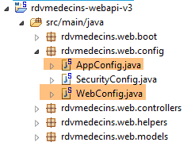 |
A nova classe de configuração [WebConfig] é a seguinte:
package rdvmedecins.web.config;
import org.springframework.boot.autoconfigure.EnableAutoConfiguration;
import org.springframework.context.annotation.Bean;
import org.springframework.web.servlet.DispatcherServlet;
import org.springframework.web.servlet.config.annotation.WebMvcConfigurerAdapter;
@Configuration
public class WebConfig extends WebMvcConfigurerAdapter {
// configuração do DispatcherServlet para os cabeçalhos CORS
@Bean
public DispatcherServlet dispatcherServlet() {
DispatcherServlet servlet = new DispatcherServlet();
servlet.setDispatchOptionsRequest(true);
return servlet;
}
}
- linha 8: a classe é uma classe de configuração do Spring. Ela declara beans que serão inseridos no contexto do Spring;
- linha 12: o bean [dispatcherServlet] serve para definir o servlet que gerencia as solicitações dos clientes. Ele é do tipo [DispatcherServlet]. Esse servlet é normalmente criado por padrão. Se o criarmos nós mesmos, poderemos configurá-lo;
- linha 14: cria-se uma instância do tipo [DispatcherServlet];
- linha 15: solicitamos que a servlet encaminhe os comandos HTTP e [OPTIONS] para o aplicativo;
- linha 16: definimos a servlet com essa configuração;
Resta-nos modificar a classe [AppConfig]:
package rdvmedecins.web.config;
import org.springframework.boot.autoconfigure.EnableAutoConfiguration;
import org.springframework.context.annotation.ComponentScan;
import org.springframework.context.annotation.Import;
import rdvmedecins.config.DomainAndPersistenceConfig;
@EnableAutoConfiguration
@ComponentScan(basePackages = { "rdvmedecins.web" })
@Import({ DomainAndPersistenceConfig.class, SecurityConfig.class, WebConfig.class })
public class AppConfig {
}
- linha 11: a nova classe de configuração [WebConfig] é importada;
3.7.6.7. Testes da aplicação - 2
Lançamos a nova versão do serviço web / JSON e tentamos obter a lista de médicos com nosso cliente Angular. Analisamos as trocas de dados de rede na guia [Network]:
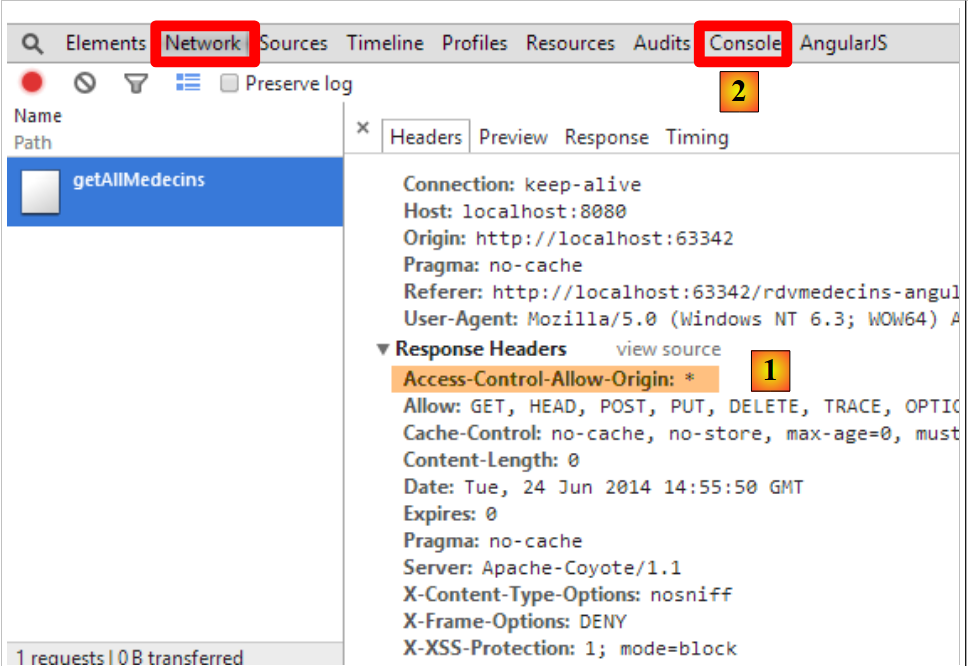 |
- em [1], é possível observar que o cabeçalho HTTP [Access-Control-Allow-Origin: *] agora está presente na resposta do servidor. No entanto, ainda não está funcionando. Analisamos, em [2], os logs do console. Encontramos o seguinte log:
XMLHttpRequest cannot load http://localhost:8080/getAllMedecins. O campo de cabeçalho de solicitação “Authorization” não é permitido pelo “Access-Control-Allow-Headers”
Percebe-se que o navegador aguarda um novo cabeçalho HTTP [Access-Control-Allow-Headers] que lhe indique que temos permissão para enviar o cabeçalho de autenticação:
Isso pode ser um bom sinal. O Angular talvez tenha tentado enviar o comando HTTP GET. Mas, como esse comando vem acompanhado de um cabeçalho de autenticação, ele pergunta se o servidor aceita esse cabeçalho.
Modificamos nosso servidor web / JSON para enviar esse cabeçalho. A classe [RdvMedecinsCorsController] passa a ter a seguinte forma:
// envio das opções ao cliente
private void sendOptions(HttpServletResponse response) {
if (application.isCORSneeded()) {
// definimos o cabeçalho CORS
response.addHeader("Access-Control-Allow-Origin", "*");
// autorização do cabeçalho [Authorization]
response.addHeader("Access-Control-Allow-Headers", "Authorization");
}
- as linhas 6-7 adicionam o cabeçalho que faltava.
Reiniciamos o servidor e solicitamos novamente a lista de médicos com o cliente Angular:
 |
Desta vez, deu certo. Os logs da console mostram a resposta recebida pelo método [dao.getData]:
[dao] getData[/getAllMedecins] success réponse : {"data":{"status":0,"data":[{"id":1,"version":1,"titre":"Mme","nom":"PELISSIER","prenom":"Marie"},{"id":2,"version":1,"titre":"Mr","nom":"BROMARD","prenom":"Jacques"},{"id":3,"version":1,"titre":"Mr","nom":"JANDOT","prenom":"Philippe"},{"id":4,"version":1,"titre":"Melle","nom":"JACQUEMOT","prenom":"Justine"}]},"status":200,"config":{"method":"GET","transformRequest":[null],"transformResponse":[null],"timeout":1000,"url":"http://localhost:8080/getAllMedecins","headers":{"Accept":"application/json, text/plain, */*","Authorization":"Basic YWRtaW46YWRtaW4="}},"statusText":"OK"}
Percebemos que:
- o servidor retornou um código de erro [status=200] com a mensagem [statusText=OK]. É por isso que estamos na função [success];
- o servidor retornou um objeto [data] com dois campos:
- [status]: (não confundir com o código de erro HTTP [status]). Aqui, [status=0] indica que o URL e o [/getAllMedecins] foram processados sem erros;
- [data]: que contém a lista JSON de médicos;
Vamos agora mostrar outros casos interessantes:
Há um erro nos identificadores [login, password]:
 |
Fazemos login com a identidade [user / user], que não tem acesso ao aplicativo (apenas [admin] tem acesso):
 |
Desta vez, o erro não é mais [Erreur d'authentification], mas [Accès refusé].
3.7.7. Exemplo 7: lista de clientes
Retomamos a aplicação anterior para, desta vez, apresentar a lista de clientes em uma lista suspensa do tipo [Bootstrap select] (ver parágrafo 3.6.6).
3.7.7.1. A visualização V
A visualização inicial será a seguinte:
 |
Para obter a visualização V, duplicamos o código [app-16.html] em [app-17.html] e o modificamos da seguinte forma:
<div class="container" >
<h1>Rdvmedecins - v1</h1>
<!-- mensagem de espera -->
<div class="alert alert-warning" ng-show="waiting.visible" >
...
</div>
<!-- a solicitação -->
<div class="alert alert-info" ng-hide="waiting.visible" >
...
<button class="btn btn-primary" ng-click="execute()">{{clients.title|translate}}</button>
</div>
<!-- a lista de clientes -->
<div class="row" style="margin-top: 20px" ng-show="clients.show">
<div class="col-md-3">
<h2 translate="{{clients.title}}"></h2>
<select data-style="btn-primary" class="selectpicker">
<option ng-repeat="client in clients.data" value="{{client.id}}">
{{client.titre}} {{client.prenom}} {{client.nom}}
</option>
</select>
</div>
</div>
<!-- a lista de erros -->
<div class="alert alert-danger" ng-show="errors.show">
...
</div>
</div>
....
<script type="text/javascript" src="rdvmedecins-05.js"></script>
- linhas 5-7: a barra de espera não muda;
- linhas 10-13: o formulário não muda, exceto pelo texto do botão (linha 12);
- linhas 28-30: a barra de erros não muda;
- linhas 16-25: a exibição dos clientes é feita em uma lista suspensa estilizada pelo componente [Bootstrap-selectpicker] (atributos data-style, class, linha 19);
- linha 20: utiliza-se a diretiva [ng-repeat] para gerar as diferentes opções da lista suspensa. Observe-se que o texto de uma opção é do tipo [Mme Julienne Tatou] e que o valor da opção é do tipo [100], onde 100 é o identificador (id) do cliente exibido;
- linha 34: o código JavaScript é transferido para um novo arquivo [rdvmedecins-05];
3.7.7.2. O controlador C e o modelo M
O código JavaScript do arquivo [rdvmedecins-05] é obtido por cópia do arquivo [rdvmedecins-04]:

Praticamente nada muda, exceto no controlador, que agora está adaptado para fornecer a lista de clientes:
angular.module("rdvmedecins")
.controller('rdvMedecinsCtrl', ['$scope', 'utils', 'config', 'dao', '$translate',
function ($scope, utils, config, dao, $translate) {
// ------------------- inicialização do modelo
// modelo
$scope.waiting = {text: config.msgWaiting, visible: false, cancel: cancel, time: undefined};
$scope.waitingTimeText = config.waitingTimeText;
$scope.server = {url: undefined, login: undefined, password: undefined};
$scope.clients = {title: config.listClients, show: false, model: {}};
$scope.errors = {show: false, model: {}};
$scope.urlServerLabel = config.urlServerLabel;
$scope.loginLabel = config.loginLabel;
$scope.passwordLabel = config.passwordLabel;
// tarefa assíncrona
var task;
// execução da ação
$scope.execute = function () {
// atualizando o UI
$scope.waiting.visible = true;
$scope.clients.show = false;
$scope.errors.show = false;
// espera simulada
task = utils.waitForSomeTime($scope.waiting.time);
var promise = task.promise;
// espera
promise = promise.then(function () {
// solicita-se a lista de clientes;
task = dao.getData($scope.server.url, $scope.server.login, $scope.server.password, config.urlSvrClients);
return task.promise;
});
// analisando o resultado da chamada anterior
promise.then(function (result) {
// result={err: 0, data: [client1, client2, ...]}
// result={err: n, messages: [msg1, msg2, ...]}
if (result.err == 0) {
// inserimos os dados coletados no modelo
$scope.clients.data = result.data;
// atualiza-se o UI
$scope.clients.show = true;
$scope.waiting.visible = false;
// estiliza-se a lista suspensa
$('.selectpicker').selectpicker();
} else {
// ocorreram erros ao obter a lista de clientes
$scope.errors = { title: config.getClientsErrors, messages: utils.getErrors(result), show: true, model: {}};
// atualiza-se o UI
$scope.waiting.visible = false;
}
});
};
// aguardando cancelamento
function cancel() {
// concluindo a tarefa
task.reject();
// atualizando o UI
$scope.waiting.visible = false;
$scope.clients.show = false;
$scope.errors.show = false;
}
}
])
;
- Muito poucas coisas mudam no controlador. Ele fornecia uma lista de médicos. Agora, ele fornece uma lista de clientes;
- linha 9: [$scope.clients] será o modelo do banner dos clientes na visualização V;
- linha 30: agora é utilizado o URL [/getAllClients];
- linhas 35-36: as duas formas de resposta retornadas pelo método [dao.getData]. Agora temos clientes em vez de médicos;
- linha 44: uma instrução bastante rara em um código Angular. Manipulamos diretamente o DOM (Document Object Model). Aqui, queremos aplicar o método [selectpicker] (que faz parte de [bootstrap-select.min.js]) aos elementos do DOM que possuem a classe [selectpicker] [$('.selectpicker')]. Há apenas um, a lista suspensa:
<select data-style="btn-primary" class="selectpicker" select-enable="">
....
</select>
No parágrafo 3.6.6, foi demonstrado que isso formatava a lista suspensa da seguinte maneira:
 |  |
Assim como foi feito para os médicos, precisamos modificar o serviço web também.
3.7.7.3. Modificação do serviço web - 1
 |
A classe [RdvMedecinsController] ganha um novo método:
package rdvmedecins.web.controllers;
...
@Controller
public class RdvMedecinsCorsController {
@Autowired
private ApplicationModel application;
// envio das opções ao cliente
private void sendOptions(HttpServletResponse response) {
if (application.isCORSneeded()) {
// definindo o cabeçalho CORS
response.addHeader("Access-Control-Allow-Origin", "*");
// autoriza-se o cabeçalho [Authorization]
response.addHeader("Access-Control-Allow-Headers", "Authorization");
}
}
// lista de médicos
@RequestMapping(value = "/getAllMedecins", method = RequestMethod.OPTIONS)
public void getAllMedecins(HttpServletResponse response) {
sendOptions(response);
}
// lista de clientes
@RequestMapping(value = "/getAllClients", method = RequestMethod.OPTIONS)
public void getAllClients(HttpServletResponse response) {
sendOptions(response);
}
}
- linhas 29-32: o método [getAllClients] irá processar a solicitação HTTP [OPTIONS] que será enviada a ele pelo navegador;
3.7.7.4. Testes da aplicação – 1
Agora estamos prontos para um teste. Iniciamos o servidor web e, em seguida, inserimos valores válidos no formulário Angular. Obtemos a seguinte resposta:

Essa mensagem de erro é exibida quando o Angular não conseguiu executar a solicitação HTTP. Nesse caso, é necessário verificar as causas nos logs do console. Lá, é possível encontrar a seguinte mensagem:
XMLHttpRequest cannot load http://localhost:8080/getAllClients. Não há nenhum cabeçalho 'Access-Control-Allow-Origin' presente no recurso solicitado. Portanto, a origem 'http://localhost:63342' não tem acesso permitido.
Um problema que se acreditava estar resolvido. Vamos, então, analisar as trocas de dados de rede que ocorreram:

Percebe-se que a operação [getAllClients], com os métodos HTTP e [OPTIONS],ocorreu normalmente, mas que a operação [getAllClients] com o método HTTP [GET] foi cancelada. A resposta à solicitação [OPTIONS] foi a seguinte:

Os cabeçalhos HTTP do CORS estão presentes. Vamos agora examinar as trocas HTTP durante o GET:
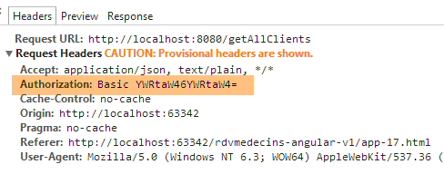
A solicitação HTTP parece correta. Observa-se, em particular, o cabeçalho de autenticação.
Além da mensagem de erro anterior, encontramos nos logs do console a seguinte mensagem:
[dao] getData[/getAllClients] error réponse : {"data":"","status":0,"config":{"method":"GET","transformRequest":[null],"transformResponse":[null],"timeout":1000,"url":"http://localhost:8080/getAllClients","headers":{"Accept":"application/json, text/plain, */*","Authorization":"Basic YWRtaW46YWRtaW4="}},"statusText":""}
Esse é o registro que o método [dao.getData] gera sistematicamente ao receber a resposta à sua solicitação HTTP. É possível observar duas coisas:
- [status=0]: isso significa que foi o Angular que cancelou a solicitação HTTP;
- [method=GET]: e foi a solicitação GET que foi cancelada;
Juntando isso à primeira mensagem, isso significa que, para a solicitação GET também, o Angular está aguardando aqui os cabeçalhos CORS. No entanto, atualmente, nosso serviço web só as envia para as solicitações HTTP e [OPTIONS]. É muito estranho encontrar esse erro agora e não na lista de médicos. Não tenho explicações para isso.
Portanto, é preciso modificar o serviço web novamente.
3.7.7.5. Alteração do serviço web – 2
 |
Os métodos [GET] e [POST] são processados na classe [RdvMedecinsController]. Precisamos modificá-la para que esses métodos enviem os cabeçalhos CORS. Fazemos isso da seguinte maneira:
@RestController
public class RdvMedecinsController {
@Autowired
private ApplicationModel application;
@Autowired
private RdvMedecinsCorsController rdvMedecinsCorsController;
...
// lista de clientes
@RequestMapping(value = "/getAllClients", method = RequestMethod.GET)
public Reponse getAllClients(HttpServletResponse response) {
// cabeçalhos CORS
rdvMedecinsCorsController.getAllClients(response);
// status do aplicativo
if (messages != null) {
return new Reponse(-1, messages);
}
// lista de clientes
try {
return new Reponse(0, application.getAllClients());
} catch (Exception e) {
return new Reponse(1, Static.getErreursForException(e));
}
}
...
- linha 8: queremos reutilizar o código que colocamos no controlador [RdvMedecinsCorsController]. Portanto, inserimos esse código aqui;
- linha 14: o método que processa a solicitação [GET /getAllClients]. Fazemos duas alterações:
- linha 14: injetamos o objeto [HttpServletResponse] nos parâmetros do método,
- linha 16: utilizamos os métodos da classe [RdvMedecinsCorsController] para inserir nesse objeto os cabeçalhos CORS;
3.7.7.6. Testes da aplicação – 2
Lançamos a nova versão do serviço web e solicitamos novamente a lista de clientes. Obtemos a seguinte resposta:
 |
- em [1], temos uma resposta, mas ela está vazia [2];
- em [3]: as trocas de dados pela rede ocorreram normalmente;
Nos logs do console, o método [dao.getData] exibiu a resposta que recebeu:
[dao] getData[/getAllClients] success réponse : {"data":{"status":0,"data":[{"id":1,"version":1,"titre":"Mr","nom":"MARTIN","prenom":"Jules"},{"id":2,"version":1,"titre":"Mme","nom":"GERMAN","prenom":"Christine"},{"id":3,"version":1,"titre":"Mr","nom":"JACQUARD","prenom":"Jules"},{"id":4,"version":1,"titre":"Melle","nom":"BISTROU","prenom":"Brigitte"}]},"status":200,"config":{"method":"GET","transformRequest":[null],"transformResponse":[null],"timeout":1000,"url":"http://localhost:8080/getAllClients","headers":{"Accept":"application/json, text/plain, */*","Authorization":"Basic YWRtaW46YWRtaW4="}},"statusText":"OK"}
Portanto, o método recebeu corretamente a lista de clientes. Após verificar o código, passamos a suspeitar da instrução a seguir, que não dominamos muito bem:
// estilo da lista suspensa
$('.selectpicker').selectpicker();
Colocamos a linha 2 entre comentários e tentamos novamente. Obtemos então a seguinte resposta:
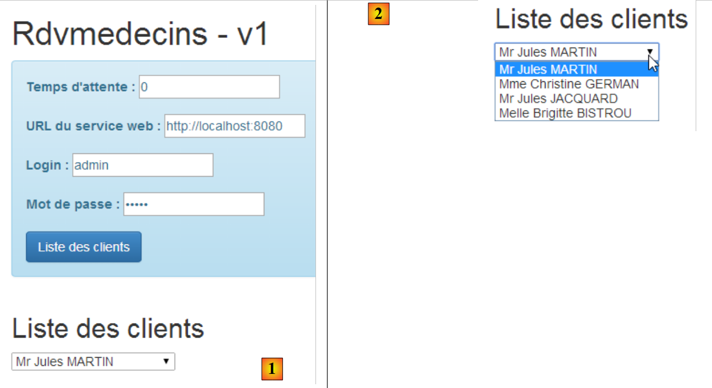 |
Portanto, localizamos o problema. É a aplicação do método [selectpicker] à lista suspensa que está causando o problema. Ao examinar o código-fonte da página com erro, encontramos o seguinte:
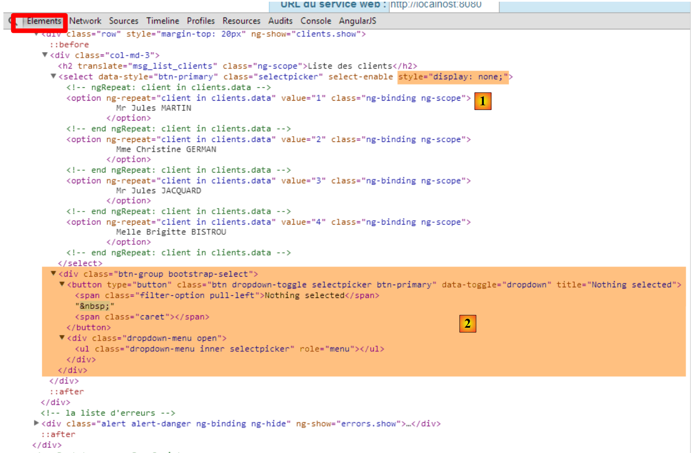 |
- descobrimos que, em [1], a lista suspensa está presente com seus itens, mas não é exibida em [style='display:none'];
- em [2], vemos o botão [bootstrap select] sendo exibido. Os itens da lista suspensa deveriam aparecer na lista <ul role='menu'>. Eles não estão lá e, portanto, temos uma lista vazia. Parece que, quando o método [selectpicker] foi aplicado à lista suspensa, seu conteúdo estava vazio naquele momento;
Ao pesquisar na internet em busca de uma solução, encontramos esta. Substituímos o código:
// estilização da lista suspensa
$('.selectpicker').selectpicker();
pelo seguinte:
// estilização da lista suspensa
$timeout(function(){
$('.selectpicker').selectpicker();
});
O estilo [bootstrap-select] é aplicado por meio de uma função [$timeout]. Já nos deparamos com essa função, que permite executar uma função após um determinado intervalo de tempo. Aqui, a ausência de intervalo equivale a um intervalo nulo. As linhas anteriores colocam um evento na fila de eventos do navegador. Quando o processamento do evento atual (clique no botão [Liste des clients]) estiver concluído, a visualização V será exibida. Logo em seguida, o navegador consultará sua lista de eventos. Devido ao seu tempo de espera nulo, o evento [$timeout] estará no topo da lista e será processado. O estilo [bootstrap-select] é então aplicado a uma lista suspensa preenchida. Vejamos o resultado:
 |
Se olharmos novamente o código-fonte da página exibida, temos o seguinte:
 |
O botão [bootstrap-select], que antes estava vazio, agora contém a lista de clientes.
3.7.7.7. Uso de uma diretiva
Encontramos no controlador C da visualização V o seguinte código:
// estilização da lista suspensa
$('.selectpicker').selectpicker();
Estamos manipulando um objeto do DOM. Muitos desenvolvedores do Angular têm aversão à manipulação do DOM no código de um controlador. Para eles, isso deve ser feito em uma diretiva. Uma diretiva do Angular pode ser vista como uma extensão da linguagem HTML. Assim, é possível criar novos elementos ou atributos HTML. Vejamos um primeiro exemplo:
Criamos o seguinte arquivo JS [selectEnable]:
angular.module("rdvmedecins").directive('selectEnable', ['$timeout', function ($timeout) {
return {
link: function (scope, element, attrs) {
$timeout(function () {
var selectpicker = $('.selectpicker');
selectpicker.selectpicker();
});
}
};
}]);
- a diretiva segue a sintaxe do controlador com a qual já estamos acostumados:
angular.module("rdvmedecins").directive('selectEnable', ['$timeout', function ($timeout)
A diretiva pertence ao módulo [rvmedecins]. Trata-se de uma função que aceita dois parâmetros:
- (continuação)
- o primeiro é o nome da diretiva [selectEnable];
- o segundo é um array ['obj1','obj2',..., function(obj1, obj2,...)], em que os [obj] são os objetos a serem injetados na função. Aqui, o único objeto injetado é o objeto predefinido [$timeout];
- a função [directive] retorna um objeto que pode ter diversos atributos. Aqui, o único atributo é o [link] (linha 3). Seu valor é, neste caso, uma função que aceita três parâmetros:
- scope: o modelo da visualização na qual a diretiva é utilizada;
- element: o elemento da visualização, objeto da diretiva;
- attrs: os atributos desse elemento;
Vejamos um exemplo. A diretiva [selectEnable] poderia ser utilizada no seguinte contexto:
No exemplo acima, o atributo [select-enable] aplica a diretiva [selectEnable] ao elemento HTML <div>. Uma diretiva [doSomething] pode ser aplicada a qualquer elemento HTML adicionando-lhe o atributo [do-something]. É preciso prestar atenção à mudança na grafia entre o nome da diretiva e o atributo a ela associado. Passa-se de uma grafia [camelCase] para uma grafia [camel-case].
A diretiva [selectEnable] também poderia ser utilizada da seguinte forma:
Aqui, a diretiva [doSomething] é aplicada na forma de uma tag HTML <do-something>.
Voltemos à sintaxe
e aos três parâmetros da função [link] da diretiva, [scope, element, attrs]:
- scope: é o modelo da vista na qual se encontra a <div>;
- element: é a própria <div>;
- attrs: é a matriz de atributos da <div>. Esses atributos podem ser usados para transmitir informações à diretiva. No exemplo acima, escreveremos attrs['selectEnable'] para obter a informação [data]. Observe bem a mudança na notação [selectEnable] para designar o atributo [select-enable];
Voltemos ao código da diretiva:
angular.module("rdvmedecins").directive('selectEnable', ['$timeout', function ($timeout) {
return {
link: function (scope, element, attrs) {
$timeout(function () {
$('.selectpicker').selectpicker();
});
}
};
}]);
- linhas 14-16: encontramos aqui o código que havíamos colocado anteriormente no controlador. Esse código é executado quando a diretiva [select-enable] (na forma de elemento ou atributo) é encontrada durante a exibição da vista V.
Para implementar essa diretiva, copiamos o arquivo [app-17.html] para [app-17B.html] e o modificamos da seguinte forma:
<select data-style="btn-primary" class="selectpicker" select-enable="">
<option ng-repeat="client in clients.data" value="{{client.id}}">
{{client.titre}} {{client.prenom}} {{client.nom}}
</option>
</select>
- linha 1: aplicamos a diretiva [selectEnable] ao elemento HTML [select]. Como não há informações a serem passadas para a diretiva, escrevemos simplesmente [select-enable=""];
Também modificamos o controlador duplicando o arquivo JS [rdvmedecins-05.js] em [rdvmedecins-05B.js] e referenciamos o novo arquivo JS no arquivo [app-17B.html] e o arquivo [selectEnable.js] de diretiva. Não se esqueça deste último ponto. Se o arquivo de diretiva estiver ausente, o atributo [select-enable=""] não será processado, mas o Angular não sinalizará nenhum erro.
<script type="text/javascript" src="rdvmedecins-05B.js"></script>
<script type="text/javascript" src="selectEnable.js"></script>
No arquivo JS [rdvmedecins-05B.js], removemos do controlador as seguintes linhas:
// estilizar a lista suspensa
$timeout(function(){
$('.selectpicker').selectpicker();
});
já que essa operação agora é realizada pela diretiva.
3.7.7.8. Testes do aplicativo – 3
Ao testar a nova aplicação [app-17B.html], obtém-se o seguinte resultado:
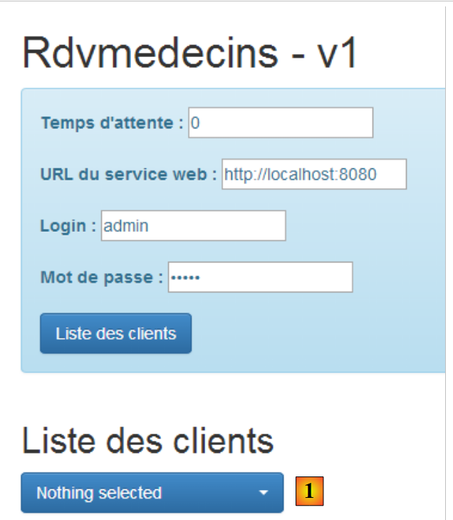 |
- Na [1], obtém-se uma lista vazia.
Os logs da console exibem o seguinte:
- linha 1: inicialização do serviço [dao];
- linha 2: na exibição inicial da vista V, a diretiva [selectEnable] é executada;
- linha 3: essa linha aparece quando o usuário clica no botão [Liste des clients]. Observa-se, então, que a diretiva [selectEnable] não é executada uma segunda vez. No final, ela foi executada quando a lista de clientes estava vazia e, portanto, temos uma lista suspensa vazia;
Em outras palavras, a operação:
$('.selectpicker').selectpicker();
não ocorreu no momento correto. É possível tentar resolver o problema de várias maneiras. Após inúmeros testes infrutíferos, percebe-se que a operação acima deve ocorrer apenas uma vez e somente quando a lista suspensa tiver sido preenchida. Para obter esse resultado, reescreve-se a tag <select> da seguinte maneira:
<select data-style="btn-primary" class="selectpicker" select-enable="" ng-if="clients.data">
<option ng-repeat="client in clients.data" value="{{client.id}}">
{{client.titre}} {{client.prenom}} {{client.nom}}
</option>
</select>
Na linha 1, a tag <select> só é gerada se [clients.data] existir. Esse não é o caso durante a exibição inicial da visualização V. A tag <select> não será, portanto, gerada e a diretiva [selectEnable] não será avaliada. Quando o usuário clicar no botão [Liste des clients], [clients.data] terá um novo valor no modelo M. Como o modelo M mudou, a tag <select> será reavaliada e, neste caso, gerada. A diretiva [selectEnable] também será avaliada. Quando ela é avaliada, as linhas 2 a 4 da tag <select> ainda não foram avaliadas. Portanto, temos uma lista de clientes vazia. Se escrevermos a diretiva [selectEnable] da seguinte maneira:
angular.module("rdvmedecins").directive('selectEnable', ['$timeout', 'utils', function ($timeout, utils) {
return {
link: function (scope, element, attrs) {
utils.debug("directive selectEnable");
$('.selectpicker').selectpicker();
}
}
}]);
a linha 5 será executada com uma lista vazia e, consequentemente, teremos uma lista suspensa vazia na exibição. Portanto, é necessário escrever:
angular.module("rdvmedecins").directive('selectEnable', ['$timeout', 'utils', function ($timeout, utils) {
return {
link: function (scope, element, attrs) {
utils.debug("directive selectEnable");
$timeout(function () {
$('.selectpicker').selectpicker();
})
}
}
}]);
para obter o resultado esperado. Devido à diretiva [$timeout] da linha 5, a linha 6 só será executada após a avaliação completa da visualização V, ou seja, no momento em que a tag <select> tiver todos os seus elementos.
3.7.8. Exemplo 8: a agenda de um médico
Apresentamos agora um aplicativo que exibe a agenda de um médico.
3.7.8.1. A visualização V do aplicativo
Apresentaremos o seguinte formulário:
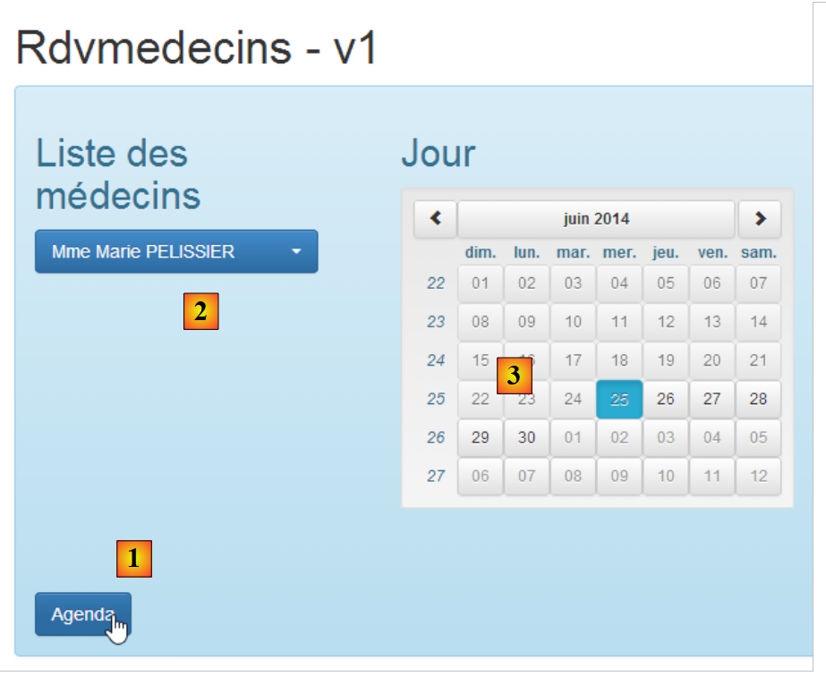 |
- em [1], solicitamos a agenda da Sra. PELISSIER [2], no dia 25 de junho de 2014 [3];
Obtém-se o seguinte resultado [4]:
 |
Vamos analisar as duas visualizações separadamente.
3.7.8.2. O formulário
Duplicamos o arquivo [app-17.html] em [app-18.html] e, em seguida, modificamos o código da seguinte maneira:
<div class="container">
<h1>Rdvmedecins - v1</h1>
<!-- a mensagem de espera -->
<div class="alert alert-warning" ng-show="waiting.visible">
...
</div>
<!-- a solicitação -->
<div class="alert alert-info" ng-hide="waiting.visible">
<div class="row" style="margin-bottom: 20px">
<div class="col-md-3">
<h2 translate="{{medecins.title}}"></h2>
<select data-style="btn-primary" class="selectpicker">
<option ng-repeat="medecin in medecins.data" value="{{medecin.id}}">
{{medecin.titre}} {{medecin.prenom}} {{medecin.nom}}
</option>
</select>
</div>
<div class="col-md-3">
<h2 translate="{{calendar.title}}"></h2>
<div style="display:inline-block; min-height:290px;">
<datepicker ng-model="calendar.jour" min-date="calendar.minDate" show-weeks="true"
class="well well-sm"></datepicker>
</div>
</div>
</div>
<button class="btn btn-primary" ng-click="execute()">{{agenda.title|translate}}</button>
</div>
<!-- a lista de erros -->
<div class="alert alert-danger" ng-show="errors.show">
...
</div>
<!-- a agenda -->
<div id="agenda" ng-show="agenda.show">
...
</div>
</div>
...
<script type="text/javascript" src="rdvmedecins-06.js"></script>
- linhas 5-7: a mensagem de espera não muda;
- linhas 12-19: a lista de médicos do tipo [bootstrap select];
- linhas 20-26: o calendário de [ui-bootstrap] que já apresentamos. Observe-se que o dia selecionado é inserido no modelo [calendar.jour] (atributo ng-model);
- linha 28: o botão que solicita a agenda;
- linhas 32-34: a lista de erros não se altera;
- linhas 37-39: a agenda que apresentaremos posteriormente;
- linha 42: o código JS é transferido para o arquivo [rdvmedecins-06.js] por meio da cópia do arquivo [rdvmedecins-05.js];
3.7.8.3. O controlador C
O código JS do aplicativo passa a ser o seguinte:

Apenas o serviço [utils] e o controlador [rdvMedecinsCtrl] serão afetados pelas alterações.
O controlador [rdvMedecinsCtrl] passa a ser o seguinte:
// controlador
angular.module("rdvmedecins")
.controller('rdvMedecinsCtrl', ['$scope', 'utils', 'config', 'dao', '$translate', '$timeout', '$filter', '$locale',
function ($scope, utils, config, dao, $translate, $timeout, $filter, $locale) {
// ------------------- inicialização do modelo
// modelo
$scope.waiting = {text: config.msgWaiting, visible: false, cancel: cancel, time: 3000};
$scope.server = {url: 'http://localhost:8080', login: 'admin', senha: 'admin'};
$scope.errors = {show: false, model: {}};
$scope.medecins = {
data: [
{id: 1, version: 1, titre: "Mme", nom: "PELISSIER", prenom: "Marie"},
{id: 2, version: 1, titre: "Mr", nom: "BROMARD", prenom: "Jacques"},
{id: 3, version: 1, titre: "Mr", nom: "JANDOT", prenom: "Philippe"},
{id: 4, version: 1, titre: "Melle", nom: "JACQUEMOT", prenom: "Justine"}
],
title: config.listMedecins};
$scope.agenda = {title: config.getAgendaTitle, data: undefined, show: false};
$scope.calendar = {title: config.getCalendarTitle, minDate: new Date(), jour: new Date()};
// estilização da lista suspensa
$timeout(function () {
$('.selectpicker').selectpicker();
});
// configuração regional francesa para o calendário
angular.copy(config.locales['fr'], $locale);
...
}
])
;
- linha 7: define-se um tempo de espera de 3 segundos antes de realizar a chamada HTTP;
- linha 8: definem-se de forma fixa os elementos necessários para a conexão HTTP;
- linhas 10-17: a lista de médicos é definida de forma fixa;
- linha 18: o modelo [agenda] configura a exibição da agenda na visualização;
- linha 19: o modelo [calendar] configura a exibição do calendário na visualização. Define-se uma data mínima [minDate] como hoje e a data atual também como hoje;
- linhas 21-23: a lista suspensa é estilizada com o método visto anteriormente;
- linha 25: define-se a localidade do aplicativo como 'fr'. Por padrão, ela está definida como 'en';
O método executado ao solicitar a agenda é o seguinte:
// execução da ação
$scope.execute = function () {
// informações do formulário
var idMedecin = $('.selectpicker').selectpicker('val');
// verificação
utils.debug("[homeCtrl] idMedecin", idMedecin);
utils.debug("[homeCtrl] jour", $scope.calendar.jour);
// formatação da data no formato aaaa-MM-dd
var formattedJour = $filter('date')($scope.calendar.jour, 'yyyy-MM-dd');
// atualização da visualização
$scope.waiting.visible = true;
$scope.errors.show = false;
$scope.agenda.show = false;
...
};
- linha 4: recuperamos o atributo [value] do médico selecionado. Aqui, utilizamos novamente o método [selectpicker], que provém do arquivo [bootstrap-select.min.js]. É preciso lembrar o formato das opções da lista suspensa:
<option ng-repeat="medecin in medecins.data" value="{{medecin.id}}">
{{medecin.titre}} {{medecin.prenom}} {{medecin.nom}}
O valor (atributo value) da opção é, portanto, o identificador [id] do médico.
- linha 11: colocamos o dia escolhido pelo usuário no formato [aaaa-mm-jj], que é o formato de data esperado pelo servidor web;
- linhas 13-15: quando o método [execute] for concluído, a barra de espera será exibida e todo o restante ficará oculto;
O código continua da seguinte forma:
// simulação de espera
var task = utils.waitForSomeTime($scope.waiting.time);
// solicitação da agenda do médico
var promise = task.promise.then(function () {
// o caminho do URL de serviço
var path = config.urlSvrAgenda + "/" + idMedecin + "/" + formattedJour;
// solicitação da agenda
task = dao.getData($scope.server.url, $scope.server.login, $scope.server.password, path);
// retorno da confirmação de conclusão da tarefa
return task.promise;
});
// analisa-se o resultado da chamada ao serviço [dao]
promise.then(function (result) {
// fim da espera
$scope.waiting.visible = false;
// erro?
if (result.err == 0) {
// prepara-se o modelo da agenda
$scope.agenda.data = result.data;
$scope.agenda.show = true;
// formatação da exibição dos horários
angular.forEach($scope.agenda.data.creneauxMedecin, function (creneauMedecin) {
creneauMedecin.creneau.text = utils.getTextForCreneau(creneauMedecin.creneau);
});
// criando um evento para estilizar a tabela após a exibição da visualização
$timeout(function () {
$("#creneaux").footable();
});
} else {
// ocorreram erros ao obter a agenda
$scope.errors = {
title: config.getAgendaErrors,
messages: utils.getErrors(result),
show: true
};
}
- linha 2: a tarefa assíncrona de espera de 3 segundos;
- linhas 5-10: o código que será executado quando essa espera for concluída;
- linha 6: constrói-se o URL consultado pelo [/getAgendaMedecinJour/1/2014-06-25];
- linha 8: o URL é consultado. Uma tarefa assíncrona é iniciada;
- linha 10: a promessa dessa tarefa assíncrona é resolvida;
- linhas 14-38: o código que será executado quando a chamada HTTP tiver retornado sua resposta;
- linha 13: [result] é a resposta enviada pelo método [dao.getData]. É importante lembrar aqui o formato da resposta do servidor web:
 |
O parâmetro [result.data] da linha 19 é o atributo [data] [1] mencionado acima. Esse atributo, por sua vez, contém o atributo [creneauxMedecin] [2] mencionado acima. Trata-se de uma tabela de intervalos, com duas informações para cada um deles:
- [rv]: o formato JSON de um compromisso ou [null], caso não haja nenhum compromisso agendado nesse intervalo;
- [hDeb, mDeb, hFin, mFin]: as informações horárias do intervalo;
Voltemos ao código do controlador:
- linha 15: a espera foi encerrada;
- linha 19: preenche-se o modelo [$scope.agenda], que controla a exibição da agenda;
- linha 20: a agenda é exibida;
- linhas 22-24: percorremos cada um dos elementos C da tabela [creneauxMedecin] de que acabamos de falar;
- linha 23: cada elemento C possui um atributo [creneau], que corresponde ao horário disponível. Esse atributo é complementado por um atributo [text], que será a representação textual do horário disponível na forma [10h20:10h40];
- linhas 26-28: tornamos “responsiva” a tabela HTML usada para exibir os horários da agenda. Vimos esse conceito no parágrafo 3.6.7;
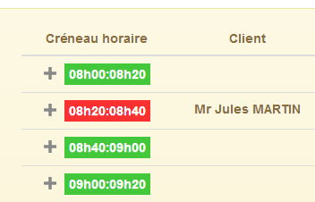 |
- linha 27: para tornar a tabela “responsiva”, é preciso aplicar a ela o método [footable]. Encontramos aqui a mesma dificuldade que a enfrentada com o componente [bootstrap-select]. Se escrevermos simplesmente a linha 17, verificamos que a tabela não fica “responsiva”. Resolvemos esse problema da mesma forma com a função [$timeout] (linha 26);
- linhas 31-34: o caso em que a chamada HTTP falhou. Nesse caso, exibimos as mensagens de erro;
3.7.8.4. Exibição da agenda
Voltamos agora ao código da agenda no arquivo [app-18.html]. Ele é o seguinte:
<!-- a agenda -->
<div id="agenda" ng-show="agenda.show">
<!-- caso do médico sem horários de consulta -->
<h4 class="alert alert-danger" ng-if="agenda.data.creneauxMedecin.length==0"
translate="agenda_medecinsanscreneaux"></h4>
<!-- agenda do médico -->
<div class="row tab-content alert alert-warning" ng-if="agenda.data.creneauxMedecin.length!=0">
<div class="tab-pane active col-md-6">
<table creneaux-table id="creneaux" class="table">
<thead>
<tr>
<th data-toggle="true">
<span translate="agenda_creneauhoraire"></span>
</th>
<th>
<span translate="agenda_client">Client</span>
</th>
<th data-hide="phone">
<span translate="agenda_action">Action</span>
</th>
</tr>
</thead>
<tbody>
<tr ng-repeat="creneauMedecin in agenda.data.creneauxMedecin">
<td>
<span
ng-class="! creneauMedecin.rv ? 'status-metro status-active' : 'status-metro status-suspended'">
{{creneauMedecin.creneau.text}}
</span>
</td>
<td>
<span>{{creneauMedecin.rv.client.titre}} {{creneauMedecin.rv.client.prenom}} {{creneauMedecin.rv.client.nom}}</span>
</td>
<td>
<a href="" ng-if="!creneauMedecin.rv" translate="agenda_reserver" class="status-metro status-active">
</a>
<a href="" ng-if="creneauMedecin.rv" translate="agenda_supprimer" class="status-metro status-suspended">
</a>
</td>
</tr>
</tbody>
</table>
</div>
</div>
</div>
- linhas 4-5: lembramos que [agenda.data] é a agenda, e que [agenda.data.creneauxMedecin] é uma matriz de objetos do tipo [creneauMedecin]. Cada elemento desse último tipo possui um atributo [creneauMedecin.creneau], que é um intervalo de horário. Cada intervalo de horário possui dois elementos que nos interessam:
- [creneauMedecin.creneau.rv], que é o eventual RV (rv!=null) associado ao intervalo horário;
- [creneauMedecin.creneau.text], que é o texto [début:fin] do intervalo horário;
- linha 4: exibe uma mensagem especial caso o médico não tenha horários disponíveis. É improvável, mas acontece que nosso banco de dados está incompleto e esse caso existe. A geração ou não da mensagem HTML é controlada pela diretiva [ng-if];

A diretiva [ng-if] difere das diretivas [ng-show, ng-hide]. Estas últimas limitam-se a ocultar um campo presente no documento. Se for [ng-if='false'], então o campo é removido do documento. Utilizamos isso aqui apenas para ilustração;
- linha 9: o atributo [id='creneaux'] é importante. É ele que é utilizado na instrução:
$("#creneaux").footable();
- linhas 10-22: exibem os cabeçalhos da tabela [1];
- linhas 23-45: exibem o conteúdo da tabela [2];
 |
- linha 24: percorre-se a tabela [agenda.data.creneauxMedecin];
- linhas 26-29: grava-se o texto [3]. Utiliza-se a diretiva [ng-class], que irá gerar o atributo [class] do elemento. Aqui, se tivermos [creneauMedecin.rv==null], isso significa que o horário está disponível e colocamos um fundo verde no texto. Caso contrário, colocamos um fundo vermelho;
- linha 32: insere-se o nome do cliente para o qual foi reservado o RV [4]. Se for [rv==null], essas informações não existem, mas o Angular lida corretamente com esse caso e não reporta nenhum erro;
- linhas 34-39: exibem um dos dois botões [Réserver] ou [Supprimer]. É a existência ou não de um compromisso que determina a escolha de um ou de outro botão;
3.7.8.5. Alteração do servidor web
Assim como nos exemplos anteriores, o servidor web deve ser modificado para que o URL [/getAgendaMedecinJour] envie os cabeçalhos CORS:
|
Na classe [RdvMedecinsCorsController], adiciona-se um novo método:
// agenda do médico
@RequestMapping(value = "/getAgendaMedecinJour/{idMedecin}/{jour}", method = RequestMethod.OPTIONS)
public void getAgendaMedecinJour(HttpServletResponse response) {
sendOptions(response);
}
Esse método enviará os cabeçalhos CORS para as consultas HTTP e [OPTIONS]. É preciso fazer o mesmo para as solicitações HTTP e [GET] na classe [RdvMedecinsController]:
@RequestMapping(value = "/getAgendaMedecinJour/{idMedecin}/{jour}", method = RequestMethod.GET)
public Reponse getAgendaMedecinJour(@PathVariable("idMedecin") long idMedecin, @PathVariable("jour") String jour, HttpServletResponse response) {
// cabeçalhos CORS
rdvMedecinsCorsController.getAgendaMedecinJour(response);
...
}
3.7.8.6. Uso de diretivas
Assim como foi feito anteriormente, vamos transferir o processamento do DOM para diretivas. Temos dois processamentos do DOM:
- na exibição inicial da vista:
// estiliza-se a lista suspensa
$timeout(function () {
$('.selectpicker').selectpicker();
});
- ao exibir a agenda:
// cria-se um evento para estilizar a tabela após a exibição da visualização
$timeout(function () {
$("#creneaux").footable();
});
Para o primeiro caso, utilizaremos a diretiva [selectEnable] já apresentada. Para o segundo caso, criamos a diretiva [footable] no arquivo JS [footable.js] a seguir:
angular.module("rdvmedecins").directive('footable', ['$timeout', 'utils', function ($timeout, utils) {
return {
link: function (scope, element, attrs) {
utils.debug("directive footable");
$timeout(function () {
$("#creneaux").footable();
})
}
}
}]);
Portanto, utilizamos a mesma técnica que para a diretiva [selectEnable].
O código HTML [app-18.html] é duplicado em [app-18B.html]. Em seguida, ele é alterado da seguinte maneira:
<select data-style="btn-primary" class="selectpicker" select-enable="">
<option ng-repeat="medecin in medecins.data" value="{{medecin.id}}">
{{medecin.titre}} {{medecin.prenom}} {{medecin.nom}}
</option>
</select>
- linha 1: aplica-se a diretiva [selectEnable] (por meio do atributo [select-enable]) à tag <select> dos médicos;
<div class="row tab-content alert alert-warning" ng-if="agenda.data.creneauxMedecin.length!=0">
<div class="tab-pane active col-md-6">
<table id="creneaux" class="table" footable="">
<thead>
<tr>
- linha 3: aplica-se a diretiva [footable] (por meio do atributo [footable]) à tabela HTML da agenda;
<script type="text/javascript" src="rdvmedecins-06B.js"></script>
<!-- diretrizes -->
<script type="text/javascript" src="selectEnable.js"></script>
<script type="text/javascript" src="footable.js"></script>
- linhas 3-4: são referenciados os arquivos JS das duas diretivas;
- linha 1: o código JS de [app-18B.html] é o código JS de [app-18.html] duplicado no arquivo [rdvmedecins-06B.js];
O arquivo [rdvmedecins-06B.js] é idêntico ao arquivo [rdvmedecins-06.js], com exceção de dois detalhes. As linhas que tratam do DOM desaparecem:
// estiliza-se a lista suspensa
$timeout(function () {
$('.selectpicker').selectpicker();
});
// cria-se um evento para aplicar estilo à tabela após a exibição da visualização
$timeout(function () {
$("#creneaux").footable();
});
Assim, a execução do aplicativo [app-18B.html] produz os mesmos resultados que a do [app-18.html].
3.7.9. Exemplo 9: criar e cancelar reservas
Apresentamos agora um aplicativo que permite criar e cancelar reservas.
3.7.9.1. A visualização V do aplicativo
Apresentaremos o seguinte formulário:
 |
- em [1], será possível fazer reservas. A reserva será feita para um cliente aleatório;
- em [2], será possível excluir as reservas que tivermos feito;
Duplicamos o arquivo [app-18.html] em [app-19.html] e, em seguida, modificamos o código da seguinte maneira:
<div class="container">
<h1>Rdvmedecins - v1</h1>
<!-- a mensagem de espera -->
<div class="alert alert-warning" ng-show="waiting.visible">
...
</div>
<!-- a lista de erros -->
<div class="alert alert-danger" ng-show="errors.show">
...
</div>
<!-- a agenda -->
<div id="agenda" ng-show="agenda.show">
..
<!-- agenda do médico -->
<div class="row tab-content alert alert-warning" ng-if="agenda.data.creneauxMedecin.length!=0">
<div class="tab-pane active col-md-6">
<table id="creneaux" class="table" footable="">
...
<tbody>
<tr ng-repeat="creneauMedecin in agenda.data.creneauxMedecin">
...
<td>
<a href="" ng-if="!creneauMedecin.rv" translate="agenda_reserver" class="status-metro status-active" ng-click="reserver(creneauMedecin.creneau.id)">
</a>
<a href="" ng-if="creneauMedecin.rv" translate="agenda_supprimer" class="status-metro status-suspended" ng-click="supprimer(creneauMedecin.rv.id)">
</a>
</td>
</tr>
</tbody>
</table>
</div>
</div>
</div>
</div>
....
<script type="text/javascript" src="rdvmedecins-07.js"></script>
<script type="text/javascript" src="footable.js"></script>
- linhas 5-7: a mensagem de espera é a da versão anterior;
- linhas 10-12: a mensagem de erro é a da versão anterior;
- linhas 15-36: a agenda é a da versão anterior, com duas diferenças:
- linha 26: o clique no botão [réserver] (atributo ng-click) é tratado pelo método [reserver] do modelo M da vista V. Passamos a ele o número do horário de reserva;
- linha 26: o clique no botão [supprimer] é tratado pelo método [reserver] do modelo M da vista V. É passado a ele o número do compromisso a ser excluído;
- linha 39: o código JS que gerencia o aplicativo está no arquivo [rdvmedecins-07.js];
- linha 40: o código JS da diretiva [footable] aplicada na linha 20;
3.7.9.2. O controlador C
O código JS de [rdvmedecins-07.js] é obtido inicialmente por cópia do arquivo [rdvmedecins-06.js]. Em seguida, ele é modificado. Continuamos a ter os grandes blocos de código habituais. As modificações são feitas essencialmente no controlador:

Descreveremos o controlador C da visualização V em várias etapas.
3.7.9.3. Inicialização do controlador C
O código de inicialização do controlador é o seguinte:
angular.module("rdvmedecins")
.controller('rdvMedecinsCtrl', ['$scope', 'utils', 'config', 'dao', '$translate', '$timeout', '$filter', '$locale',
function ($scope, utils, config, dao, $translate, $timeout, $filter, $locale) {
// ------------------- inicialização do modelo
// modelo
$scope.waiting = {text: config.msgWaiting, visible: false, cancel: cancel, time: 3000};
$scope.server = {url: 'http://localhost:8080', login: 'admin', senha: 'admin'};
$scope.errors = {show: false, model: {}};
$scope.medecins = {
data: [
{id: 1, version: 1, titre: "Mme", nom: "PELISSIER", prenom: "Marie"},
{id: 2, version: 1, titre: "Mr", nom: "BROMARD", prenom: "Jacques"},
{id: 3, version: 1, titre: "Mr", nom: "JANDOT", prenom: "Philippe"},
{id: 4, version: 1, titre: "Melle", nom: "JACQUEMOT", prenom: "Justine"}
],
title: config.listMedecins
};
var médecin = $scope.medecins.data[0];
var clients = [
{id: 1, version: 1, titre: "Mr", nom: "MARTIN", prenom: "Jules"},
{id: 2, version: 1, titre: "Mme", nom: "GERMAN", prenom: "Christine"},
{id: 3, version: 1, titre: "Mr", nom: "JACQUARD", prenom: "Maurice"},
{id: 4, version: 1, titre: "Melle", nom: "BISTROU", prenom: "Brigitte"}
];
// formato de data francês
angular.copy(config.locales['fr'], $locale);
var today = new Date();
var formattedDay = $filter('date')(today, 'yyyy-MM-dd');
var fullDay = $filter('date')(today, 'fullDate');
$scope.agenda = {title: config.agendaTitle, data: undefined, show: false, model: {titre: médecin.titre, prenom: médecin.prenom, nom: médecin.nom, jour: fullDay}};
// ---------------------------------------------------------------- agenda inicial
// a tarefa assíncrona global
var task;
// solicitação da agenda
getAgenda();
// ------------------------------------------------------------------ reserva
$scope.reserver = function (creneauId) {
....
};
// ------------------------------------------------------------ exclusão RV
$scope.supprimer = function (idRv) {
...
};
// obtenção da agenda
function getAgenda() {
...
}
// cancelamento em espera
function cancel() {
...
}
} ]);
- linha 6: configuração da mensagem de espera. Por padrão, aguardaremos 3 segundos antes de realizar uma chamada HTTP;
- linha 7: as informações necessárias para as chamadas HTTP;
- linha 8: configuração da mensagem de erros;
- linhas 9-17: nomes dos médicos predefinidos;
- linha 18: um médico particular. É para os horários dele que faremos as reservas;
- linhas 19 a 24: clientes fixos;
- linha 26: queremos trabalhar com datas francesas;
- linha 27: as consultas serão marcadas para a data de hoje;
- linha 28: o serviço web de agendamento espera datas no formato 'aaaa-mm-dd';
- linha 29: a data de hoje no formato [jeudi 26 juin 2014];
- linha 30: configuração da agenda. O atributo [model] transporta os parâmetros da mensagem internacionalizada que será exibida:
agenda_title: "Agenda de {{titre}} {{prenom}} {{nom}} le {{jour}}"
- linha 35: a variável global [task] representa, em um determinado momento, a tarefa assíncrona em execução;
- linha 37: solicita-se a agenda inicial;
Isso é tudo o que é feito durante o carregamento inicial da página. Se tudo correr bem, a visualização exibe a agenda do dia da Sra. PELISSIER.

3.7.9.4. Obtenção da agenda
A agenda é obtida com o seguinte método [getAgenda]:
// obtenção da agenda
function getAgenda() {
// o caminho do serviço URL
var path = config.urlSvrAgenda + "/" + médecin.id + "/" + formattedDay;
// solicitação da agenda
task = dao.getData($scope.server.url, $scope.server.login, $scope.server.password, path);
// mensagem de espera
$scope.waiting.visible = true;
// análise do resultado da chamada ao serviço [dao]
task.promise.then(function (result) {
// fim da espera
$scope.waiting.visible = false;
// erro?
if (result.err == 0) {
// preparando o modelo da agenda
$scope.agenda.data = result.data;
$scope.agenda.show = true;
// formatação da exibição dos horários
angular.forEach($scope.agenda.data.creneauxMedecin, function (creneauMedecin) {
creneauMedecin.creneau.text = utils.getTextForCreneau(creneauMedecin.creneau);
});
} else {
// ocorreram erros ao obter a agenda
$scope.errors = {title: config.getAgendaErrors, messages: utils.getErrors(result), show: true};
}
});
}
Esse código é o mesmo analisado no aplicativo anterior. Há duas alterações:
- não há espera simulada antes da chamada HTTP;
- linha 4: utiliza-se o médico criado durante a inicialização do controlador, bem como o dia formatado que foi construído;
Este código foi isolado em uma função, pois também é utilizado pelas funções [reserver] e [supprimer].
3.7.9.5. Reserva de um horário
 |  |
Vale lembrar que os clientes são selecionados aleatoriamente.
O código de reserva é o seguinte:
$scope.reserver = function (creneauId) {
utils.debug("réservation du créneau", creneauId);
// criando um RV com um cliente aleatório no horário identificado por [id]
var idClient = clients[Math.floor(Math.random() * clients.length)].id;
utils.debug("réservation du créneau pour le client", idClient);
// espera simulada
$scope.waiting.visible = true;
var task = utils.waitForSomeTime($scope.waiting.time);
// adiciona-se o horário
var promise = task.promise.then(function () {
// o caminho do URL de serviço
var path = config.urlSvrResaAdd;
// os dados a serem transmitidos ao serviço
var post = {jour: formattedDay, idCreneau: creneauId, idClient: idClient};
// inicia-se a tarefa assíncrona
task = dao.getData($scope.server.url, $scope.server.login, $scope.server.password, path, post);
// retorna-se a promessa de conclusão da tarefa
return task.promise;
});
// análise do resultado da tarefa
promise = promise.then(function (result) {
if (result.err != 0) {
// ocorreram erros na validação do rv
$scope.errors = {title: config.postResaErrors, messages: utils.getErrors(result, $filter), show: true};
} else {
// solicita-se a nova agenda
getAgenda();
}
});
};
- linha 1: lembramos que o parâmetro da função [reserver] é o número do horário (atributo id);
- linha 4: um cliente é selecionado aleatoriamente na lista de clientes definida de forma fixa no código de inicialização. É registrado seu identificador [id];
- linhas 7-8: espera de 3 segundos;
- linhas 11-18: essas linhas só são executadas ao final dos 3 segundos;
- linha 12: o URL do serviço de reserva [/ajouterRv]. Esse URL é diferente dos que vimos até agora. Ele é definido da seguinte forma no serviço web:
@RequestMapping(value = "/ajouterRv", method = RequestMethod.POST, consumes = "application/json; charset=UTF-8")
public Reponse ajouterRv(@RequestBody PostAjouterRv post, HttpServletResponse response) {
- (continuação)
- linha 1: o URL não possui parâmetros e é solicitado com um POST;
- linha 2: os parâmetros enviados são na forma de um objeto JSON. Este será deserializado no parâmetro [post] (@RequestBody);
Vimos um exemplo desse POST (parágrafo 2.12.2):
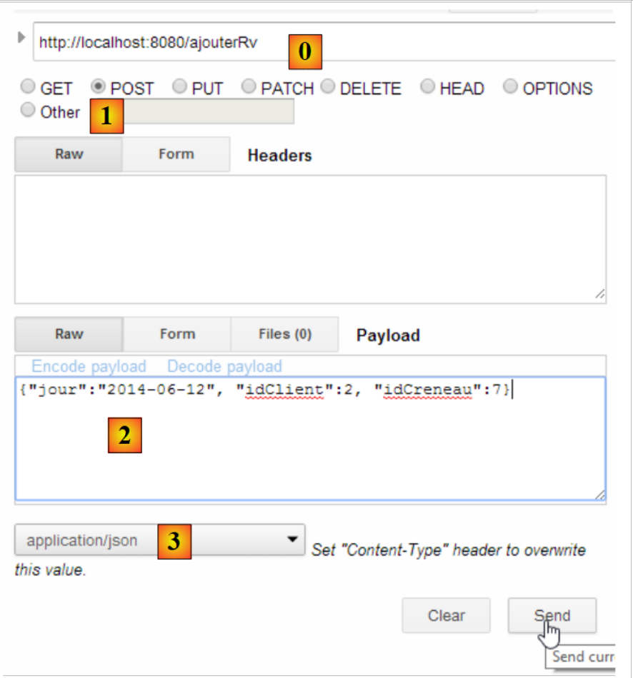 |
- em [0], o URL do serviço web;
- em [1], utiliza-se o método POST;
- em [2], o texto JSON das informações transmitidas ao serviço web na forma {dia, idClient, idCreneau};
- em [3], o cliente informa ao serviço web que está enviando informações JSON;
Voltemos ao código JS da função [reserver]:
- linha 14: cria-se o valor a ser enviado na forma de um objeto JS. O Angular irá serializá-lo em JSON quando for enviado;
- linha 16: é feita a chamada à função HTTP. O valor a ser postado é o último parâmetro da função [dao.getData]. Quando esse parâmetro está presente, a função [dao.getData] gera um POST em vez de um GET (consulte o código no parágrafo 3.7.6.4);
- linha 18: retorna-se a promessa da chamada HTTP;
- linhas 23-29: só são executadas quando a chamada HTTP tiver retornado sua resposta;
- linha 23: o parâmetro [result] tem o formato [err,data] ou [err,messages], em que [err] é um código de erro;
- linhas 23-26: se houver erros, a mensagem de erro é exibida;
- linha 28: se a reserva foi bem-sucedida, exibe-se novamente a nova agenda;
3.7.9.6. Alteração no servidor
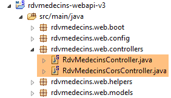 |
Na classe [RdvMedecinsCorsController], adicionamos o seguinte método:
// envio das opções ao cliente
private void sendOptions(HttpServletResponse response) {
if (application.isCORSneeded()) {
// definindo o cabeçalho CORS
response.addHeader("Access-Control-Allow-Origin", "*");
// autorização do cabeçalho [authorization]
response.addHeader("Access-Control-Allow-Headers", "authorization");
}
@RequestMapping(value = "/ajouterRv", method = RequestMethod.OPTIONS)
public void ajouterRv(HttpServletResponse response) {
sendOptions(response);
}
A adição é feita nas linhas 10 a 13. Os cabeçalhos das linhas 2 a 8 serão enviados para o URL [/ajouterRv] (linha 10) e para o método HTTP [OPTIONS] (linha 10).
A classe [RdvMedecinsController] é modificada da seguinte forma:
@RequestMapping(value = "/ajouterRv", method = RequestMethod.POST, consumes = "application/json; charset=UTF-8")
public Reponse ajouterRv(@RequestBody PostAjouterRv post, HttpServletResponse response) {
// cabeçalhos CORS
rdvMedecinsCorsController.ajouterRv(response);
...
Para o método [POST] (linha 1) e os métodos URL e [/ajouterRv] (linha 1), o método que acabamos de adicionar em [RdvMedecinsCorsController] é chamado (linha 4), retornando, portanto, os mesmos cabeçalhos HTTP que para os métodos HTTP e [OPTIONS].
3.7.9.7. Tests
Vamos fazer um primeiro teste em que reservamos um horário qualquer:
 |
Como sempre nesses casos, é preciso verificar os logs do console:
[dao] getData[/ajouterRv] error réponse : {"data":"","status":0,"config":{"method":"POST","transformRequest":[null],"transformResponse":[null],"timeout":1000,"url":"http://localhost:8080/ajouterRv","data":{"jour":"2014-06-30","idCreneau":1,"idClient":4},"headers":{"Accept":"application/json, text/plain, */*","Authorization":"Basic YWRtaW46YWRtaW4=","Content-Type":"application/json;charset=utf-8"}},"statusText":""}
O método [dao.getData] falhou com [status=0], o que significa que foi o Angular que cancelou a solicitação. A causa do erro está nos logs:
XMLHttpRequest cannot load http://localhost:8080/ajouterRv. O campo de cabeçalho da solicitação Content-Type não é permitido pelo Access-Control-Allow-Headers.
Se analisarmos o tráfego de rede, observamos o seguinte:
 |
- em [1] e [2]: houve apenas uma solicitação HTTP, a solicitação [OPTIONS];
- em [3], o cliente Angular solicita duas autorizações:
- a de enviar os cabeçalhos HTTP e [accept, authorization, content-type];
- a de enviar um comando POST;
- em [4]: o servidor autoriza o cabeçalho [authorization]. Vale lembrar que, no lado do servidor, somos nós mesmos que enviamos essa autorização;
A novidade, portanto, é que, em uma operação POST, o cliente Angular solicita mais autorizações ao servidor. Portanto, é necessário modificar o servidor para que ele as conceda:
Na classe [RdvMedecinsCorsController], modificamos o método privado que gera os cabeçalhos HTTP enviados para os comandos OPTIONS, GET e POST:
// envio das opções ao cliente
private void sendOptions(HttpServletResponse response) {
if (application.isCORSneeded()) {
// definimos o cabeçalho CORS
response.addHeader("Access-Control-Allow-Origin", "*");
// autorização de determinados cabeçalhos
response.addHeader("Access-Control-Allow-Headers", "accept, authorization, content-type");
// autoriza-se o POST
response.addHeader("Access-Control-Allow-Methods", "POST");
}
}
- linha 7: foi adicionada uma autorização para os cabeçalhos HTTP e [accept, content-type];
- linha 9: foi adicionada uma autorização para o método POST;
Repetimos o teste após reiniciar o servidor:
 |
Desta vez, conseguimos fazer a reserva.
3.7.9.8. Exclusão de um compromisso
 |  |
O código da função [supprimer] é o seguinte:
$scope.supprimer = function (idRv) {
utils.debug("suppression rv n°", idRv);
// espera simulada
$scope.waiting.visible = true;
task = utils.waitForSomeTime($scope.waiting.time);
// adiciona-se o intervalo
var promise = task.promise.then(function () {
// o caminho do serviço URL
var path = config.urlSvrResaRemove;
// os dados a serem transmitidos ao serviço
var post = {idRv: idRv};
// inicia-se a tarefa assíncrona
task = dao.getData($scope.server.url, $scope.server.login, $scope.server.password, path, post);
// retorna-se a promessa de conclusão da tarefa
return task.promise;
});
// análise do resultado da tarefa
promise = promise.then(function (result) {
if (result.err != 0) {
// ocorreram erros ao excluir o rv
$scope.errors = {title: config.postRemoveErrors, messages: utils.getErrors(result, $filter), show: true};
// atualiza-se o UI
$scope.waiting.visible = false;
} else {
// solicita-se a nova agenda
getAgenda();
}
});
};
- linha 1: é importante lembrar que o parâmetro da função é o número do compromisso a ser excluído. Trata-se de um código muito semelhante ao da reserva. Comentaremos apenas as diferenças;
- linha 9: o URL do serviço é aqui [/supprimerRV] e, nesse caso, também é acessado por meio de um POST:
@RequestMapping(value = "/supprimerRv", method = RequestMethod.POST, consumes = "application/json; charset=UTF-8")
public Reponse supprimerRv(@RequestBody PostSupprimerRv post, HttpServletResponse response) {
O parâmetro enviado é, mais uma vez, transmitido na forma JSON. No parágrafo 2.12.17, mostramos a natureza do POST criado manualmente:
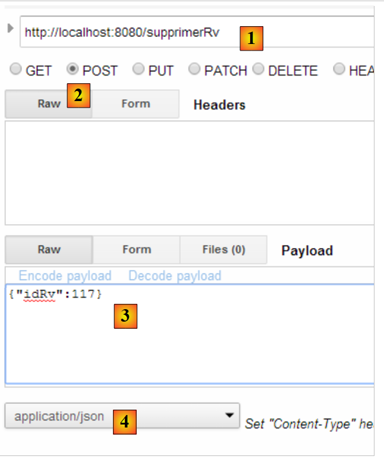 |
- em [1], o URL do serviço web;
- em [2], utiliza-se o método POST;
- em [3], o texto JSON das informações transmitidas ao serviço web na forma {idRv};
- em [4], o cliente informa ao serviço web que está enviando informações JSON;
Voltemos ao código JS da função [supprimer]:
- linha 11: cria-se o objeto a ser enviado. O Angular irá serializá-lo automaticamente em JSON;
O restante do código é semelhante ao da reserva.
3.7.9.9. Alteração no servidor
No lado do servidor, fazemos as seguintes modificações:
Na classe [RdvMedecinsCorsController], adicionamos o seguinte método:
// envio das opções ao cliente
private void sendOptions(HttpServletResponse response) {
if (application.isCORSneeded()) {
// corrigindo o cabeçalho CORS
response.addHeader("Access-Control-Allow-Origin", "*");
// autoriza-se determinados cabeçalhos
response.addHeader("Access-Control-Allow-Headers", "accept, authorization, content-type");
// autorização do POST
response.addHeader("Access-Control-Allow-Methods", "POST");
}
}
...
@RequestMapping(value = "/supprimerRv", method = RequestMethod.OPTIONS)
public void supprimerRv(HttpServletResponse response) {
sendOptions(response);
}
A adição é feita nas linhas 13 a 16. Os cabeçalhos das linhas 2 a 10 serão enviados para o método URL [/supprimerRv] (linha 13) e para o método HTTP [OPTIONS] (linha 13).
A classe [RdvMedecinsController], por sua vez, é modificada da seguinte forma:
@RequestMapping(value = "/supprimerRv", method = RequestMethod.POST, consumes = "application/json; charset=UTF-8")
public Reponse supprimerRv(@RequestBody PostSupprimerRv post, HttpServletResponse response) {
// cabeçalhos CORS
rdvMedecinsCorsController.supprimerRv(response);
...
Para o método [POST] (linha 1) e os métodos URL e [/supprimerRv] (linha 1), o método que acabamos de adicionar em [RdvMedecinsCorsController] é chamado (linha 4), retornando, portanto, os mesmos cabeçalhos HTTP que para os métodos HTTP e [OPTIONS].
3.7.10. Exemplo 10: criar e cancelar reservas - 2
Apresentamos agora o mesmo aplicativo de antes, mas, em vez de fazer uma reserva para um cliente aleatório, este será selecionado em uma lista suspensa.
3.7.10.1. A visualização V do aplicativo
Apresentaremos o seguinte formulário:
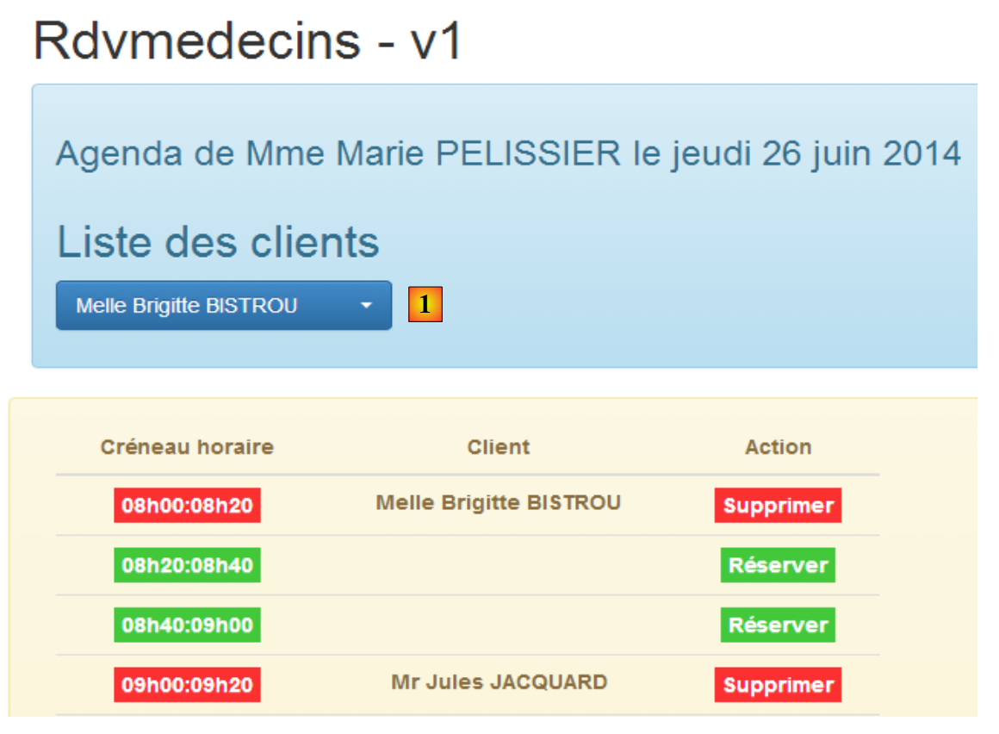 |
Os clientes serão selecionados em [1].
O código é semelhante ao da aplicação anterior; portanto, apresentaremos apenas as principais diferenças.
Duplicamos o arquivo [app-19.html] em [app-20.html] e, em seguida, criamos o código da lista suspensa de clientes [1]:
<!-- a lista de clientes -->
<div class="alert alert-info">
<h3>{{agenda.title|translate:agenda.model}}</h3>
<div class="row" ng-show="clients.show">
<div class="col-md-3">
<h2 translate="{{clients.title}}"></h2>
<select data-style="btn-primary" class="selectpicker" select-enable="" ng-if="clients.data">
<option ng-repeat="client in clients.data" value="{{client.id}}">
{{client.titre}} {{client.prenom}} {{client.nom}}
</option>
</select>
</div>
</div>
</div>
- linhas 8-12: a lista suspensa será implementada com o componente [bootstrap-select];
- linha 1: a diretiva [selectEnable] é aplicada por meio do atributo [select-enable];
- linha 1: a tag <select> só é gerada se [clients.data] existir (# null, undefined). Esse ponto é importante e foi explicado no parágrafo 3.7.7.8;
Além disso, importamos novos arquivos JS:
<script type="text/javascript" src="rdvmedecins-08.js"></script>
<!-- diretrizes -->
<script type="text/javascript" src="selectEnable.js"></script>
<script type="text/javascript" src="footable.js"></script>
- linha 1: o arquivo [rdvmedecins-08.js] é obtido por cópia do arquivo [rdvmedecins-0.js];
- linhas 3-4: importam-se os arquivos das duas diretivas;
3.7.10.2. O controlador C
O código do controlador C evolui da seguinte forma:
// controlador
angular.module("rdvmedecins")
.controller('rdvMedecinsCtrl', ['$scope', 'utils', 'config', 'dao', '$translate', '$timeout', '$filter', '$locale',
function ($scope, utils, config, dao, $translate, $timeout, $filter, $locale) {
// ------------------- inicialização do modelo
...
// os clientes
$scope.clients = {title: config.listClients, show: false, model: {}};
//------------------------------------------- inicialização da visualização
// a tarefa assíncrona global
var task;
// solicita-se os clientes e, em seguida, a agenda
getClients().then(function () {
getAgenda();
});
...
// execução da ação
function getClients() {
....
};
} ]);
- linha 8: o objeto [$scope.clients] configura a lista suspensa de clientes na visualização V;
- linhas 14-16: de forma assíncrona, primeiro solicita-se a lista de clientes e, depois de obtida, solicita-se a agenda da Sra. PELISSIER para o dia de hoje. A sintaxe utilizada aqui só funciona porque a função [getClients] retorna uma promessa (promise);
O método [getClients] solicita a lista de clientes:
function getClients() {
// atualiza-se o UI
$scope.waiting.visible = true;
$scope.clients.show = false;
$scope.errors.show = false;
// solicita-se a lista de clientes;
task = dao.getData($scope.server.url, $scope.server.login, $scope.server.password, config.urlSvrClients);
var promise = task.promise;
// analisa-se o resultado da chamada anterior
promise = promise.then(function (result) {
// result={err: 0, data: [client1, client2, ...]}
// result={err: n, messages: [msg1, msg2, ...]}
if (result.err == 0) {
// inserimos os dados coletados no modelo
$scope.clients.data = result.data;
// atualiza-se o UI
$scope.clients.show = true;
$scope.waiting.visible = false;
} else {
// ocorreram erros ao obter a lista de clientes
$scope.errors = { title: config.getClientsErrors, messages: utils.getErrors(result), show: true, model: {}};
// atualiza-se o UI
$scope.waiting.visible = false;
}
});
// cumpre-se a promessa
return promise;
};
Esse é um código que já vimos e comentamos. O ponto importante a ser observado é a linha 31:
- linha 27: retorna-se a promessa da linha 10, ou seja, a última promessa obtida no código. Essa promessa só será obtida quando a chamada HTTP tiver retornado sua resposta;
O método [reserver] sofre uma pequena alteração:
$scope.reserver = function (creneauId) {
utils.debug("réservation du créneau", creneauId);
// criando um RV para o cliente selecionado
var idClient = $(".selectpicker").selectpicker('val');
...
});
- linha 4: não se reserva mais para um cliente aleatório, mas para o cliente selecionado na lista de clientes.
3.7.11. Exemplo 11: uma diretiva [selectEnable2]
Este exemplo retoma as diretivas.
3.7.11.1. A visualização V
O aplicativo exibe a seguinte visualização:
 |
3.7.11.2. O código HTML da visualização
O código HTML da visualização [app-21.html] é o seguinte:
<div class="container">
<h1>Rdvmedecins - v1</h1>
<!-- a mensagem de espera -->
<div class="alert alert-warning" ng-show="waiting.visible">
...
</div>
<!-- a lista de erros -->
<div class="alert alert-danger" ng-show="errors.show">
...
</div>
<!-- a lista de clientes -->
<div class="alert alert-info">
<div class="row" ng-show="clients.show">
<div class="col-md-4">
<h2 translate="{{clients.title}}"></h2>
<select data-style="btn-primary" id="selectpickerClients" select-enable2="" ng-if="clients.data">
<option ng-repeat="client in clients.data" value="{{client.id}}">
{{client.titre}} {{client.prenom}} {{client.nom}}
</option>
</select>
</div>
</div>
</div>
<!-- a lista de médicos -->
<div class="alert alert-info">
<div class="row" ng-show="medecins.show">
<div class="col-md-4">
<h2 translate="{{medecins.title}}"></h2>
<select data-style="btn-primary" id="selectpickerMedecins" select-enable2="" ng-if="medecins.data">
<option ng-repeat="medecin in medecins.data" value="{{medecin.id}}">
{{medecin.titre}} {{medecin.prenom}} {{medecin.nom}}
</option>
</select>
</div>
</div>
</div>
</div>
...
<script type="text/javascript" src="rdvmedecins-09.js"></script>
<!-- instruções -->
<script type="text/javascript" src="selectEnable2.js"></script>
- linhas 19-23: a lista suspensa de clientes;
- linha 19: aplica-se a diretiva [selectEnable2] (atributo [select-enable2]);
- linha 19: somente se [clients.data] não estiver vazio;
- linha 19: a lista suspensa é identificada pelo atributo [id="selectpickerClients"];
- linhas 33-37: a lista suspensa de médicos;
- linha 33: aplica-se a diretiva [selectEnable2] (atributo [select-enable2]);
- linha 33: somente se [medecins.data] não estiver vazio;
- linha 33: a lista suspensa é identificada pelo atributo [id="selectpickerMedecins"];
- linha 43: importa-se um novo arquivo JS [rdvmedecins-09.js];
- linha 45: importa-se o arquivo JS da nova diretiva;
3.7.11.3. A diretiva [selectEnable2]
O código da diretiva [selectEnable2] é o seguinte:
angular.module("rdvmedecins").directive('selectEnable2', ['$timeout', 'utils', function ($timeout, utils) {
return {
link: function (scope, element, attrs) {
utils.debug("directive selectEnable2 attrs", attrs);
$timeout(function () {
$('#' + attrs['id']).selectpicker();
})
}
}
}]);
- linha 4: exibe-se o valor do parâmetro [attrs] para esclarecer o funcionamento do código. Verifica-se que attrs['id']='selectpickerClients' para a lista de clientes;
- linha 6: para localizar no DOM um elemento do [id='x'], escreve-se [$('#x')]. Portanto, deve-se escrever [$('#selectpickerClients')] para localizar a lista de clientes. Isso é obtido com a sintaxe [$('#' + attrs['id'])];
A diretiva [selectEnable2], portanto, utiliza a informação contida em um dos atributos do elemento HTML ao qual ela é aplicada.
3.7.11.4. O controlador C
O controlador C está localizado no arquivo JS [rdvmedecins-09.js] e possui a seguinte estrutura:
// controlador
angular.module("rdvmedecins")
.controller('rdvMedecinsCtrl', ['$scope', 'utils', 'config', 'dao',
function ($scope, utils, config, dao) {
// ------------------- inicialização do modelo
// a mensagem de espera
$scope.waiting = {text: config.msgWaiting, visible: false, cancel: cancel, time: 3000};
// informações de login
$scope.server = {url: 'http://localhost:8080', login: 'admin', senha: 'admin'};
// erros
$scope.errors = {show: false, model: {}};
// os médicos
$scope.medecins = {title: config.listMedecins, show: false, model: {}};
// clientes
$scope.clients = {title: config.listClients, show: false, model: {}};
// a tarefa assíncrona global
var task;
// ---------------------------------------------------- inicialização da visualização
// atualiza-se o UI
$scope.waiting.visible = true;
$scope.clients.show = false;
$scope.medecins.show = false;
$scope.errors.show = false;
// solicita-se os clientes e, em seguida, os médicos
getClients().then(function () {
getMedecins();
});
// lista de clientes
function getClients() {
...
}
// lista de médicos
function getMedecins() {
...
}
// cancelamento pendente
function cancel() {
...
}
} ]);
- linhas 26-28: primeiro são solicitados os clientes e, em seguida, os médicos;
3.7.11.5. Os testes
Teste esta nova versão.
3.7.12. Exemplo 12: uma diretiva [list]
Retomamos o mesmo exemplo anterior, mas queremos simplificar o código HTML utilizando uma diretiva. De fato, atualmente temos o seguinte código HTML:
<!-- lista de clientes -->
<div class="alert alert-info">
<div class="row" ng-show="clients.show">
<div class="col-md-4">
<h2 translate="{{clients.title}}"></h2>
<select data-style="btn-primary" id="selectpickerClients" select-enable2="" ng-if="clients.data">
<option ng-repeat="client in clients.data" value="{{client.id}}">
{{client.titre}} {{client.prenom}} {{client.nom}}
</option>
</select>
</div>
</div>
</div>
<!-- lista de médicos -->
<div class="alert alert-info">
<div class="row" ng-show="medecins.show">
<div class="col-md-4">
<h2 translate="{{medecins.title}}"></h2>
<select data-style="btn-primary" id="selectpickerMedecins" select-enable2="" ng-if="medecins.data">
<option ng-repeat="medecin in medecins.data" value="{{medecin.id}}">
{{medecin.titre}} {{medecin.prenom}} {{medecin.nom}}
</option>
</select>
</div>
</div>
</div>
As linhas 14 a 26 são idênticas às linhas 1 a 13. Elas se aplicam a médicos, em vez de clientes. Gostaríamos de poder escrever o seguinte:
<!-- lista de clientes -->
<list model="clients" ng-if="clients.show"></list>
<!-- lista de médicos -->
<list model="medecins" ng-if="medecins.show"></list>
Esse código envolve uma nova diretiva, [list], que vamos criar agora.
3.7.12.1. A diretiva [list]
A diretiva [list] está localizada no arquivo JS [list.js]. Seu código é o seguinte:
angular.module("rdvmedecins")
.directive("list", ['utils', '$timeout', function (utils, $timeout) {
// instância da diretiva retornada
return {
// elemento HTML
restrict: "E",
// URL do fragmento
templateUrl: "list.html",
// escopo exclusivo para cada instância da diretiva
scope: true,
// função de ligação com o documento
link: function (scope, element, attrs) {
utils.debug("directive list attrs", attrs);
scope.model = scope[attrs['model']];
utils.debug("directive list model", scope.model);
$timeout(function () {
$('#' + scope.model.id).selectpicker();
})
}
}
}]);
- linha 2: define uma diretiva chamada 'list';
- linha 6: o atributo [restrict] define as formas de utilização da diretiva. [restrict: "E"] significa que a diretiva [list] pode ser utilizada como elemento HTML <list ...>...</list>. [restrict: "A"] significa que a diretiva [list] pode ser usada como atributo, por exemplo, <div ... list='...'>. [restrict: "AE"] significa que a diretiva [list] pode ser usada como atributo e como elemento;
- linha 8: o atributo [templateUrl] indica o nome do fragmento HTML a ser utilizado ao encontrar a tag. Esse fragmento será o corpo da tag;
- linha 10: o atributo [scope] define o escopo do modelo da diretiva. [scope: true] significa que dois elementos do tipo <list> terão, cada um, seu próprio modelo. Por padrão (escopo não inicializado), eles compartilham seus modelos;
- linha 12: a função [link], que já utilizamos várias vezes;
Para entender o código acima, é preciso lembrar para que a diretiva será utilizada:
<!-- a lista de clientes -->
<list model="clients" ng-if="clients.show"></list>
<!-- a lista de médicos -->
<list model="medecins" ng-if="medecins.show"></list>
A diretiva [list] é utilizada como elemento <list> HTML. Esse elemento possui dois atributos:
- [model]: cujo valor será o elemento do modelo M da vista V na qual se encontra a diretiva [list]. Esse elemento alimentará o modelo da diretiva;
- [ng-if]: que fará com que o código HTML da diretiva não seja gerado se não houver nada para visualizar;
Voltemos ao código da função [link] da diretiva:
link: function (scope, element, attrs) {
utils.debug("directive list attrs", attrs);
scope.model = scope[attrs['model']];
utils.debug("directive list model", scope.model);
$timeout(function () {
$('#' + scope.model.id).selectpicker();
})
}
Vamos associar esse código JS ao código HTML, que utiliza a diretiva:
<list model="clients" ng-if="clients.show"></list>
- linha 3: attrs['model'] tem aqui o valor 'clientes';
- linha 3: scope[attrs['model']] tem como valor scope['clients'] e, portanto, representa [$scope.clients], ou seja, o campo [clients] do modelo da visualização. Esse campo terá o valor {id: '...', data: [client1, client2, ...], show: ..., title: '...'};
- linha 3: adiciona-se um campo [model] ao modelo da diretiva. Este herdou o modelo da visualização na qual se encontra. Portanto, é preciso evitar colisões com um eventual campo [model] que a visualização também possa ter. Aqui, não haverá colisão;
- linha 4: exibe-se [scope.model] para facilitar a compreensão do código;
- linhas 5-7: encontramos um código já visto anteriormente. A diferença é que o id do componente era anteriormente incluído em um atributo attrs['id']. Aqui, ele será incluído em [scope.model.id];
Agora, vamos examinar o código HTML gerado pela diretiva. Devido ao atributo [templateUrl: "list.html"] da diretiva, é preciso procurá-lo no arquivo [list.html]:
<!-- uma lista de clientes ou médicos -->
<div class="alert alert-info" ng-show="model.show">
<div class="row">
<div class="col-md-4">
<h2 translate="{{model.title}}"></h2>
<select data-style="btn-primary" id="{{model.id}}" ng-if="model.data">
<option ng-repeat="element in model.data" value="{{element.id}}">
{{element.titre}} {{element.prenom}} {{element.nom}}
</option>
</select>
</div>
</div>
</div>
- A primeira coisa que é preciso lembrar para ler esse código é que a diretiva criou um objeto [scope.model] no formato [{id :'...', data:[client1, client2, ...], show : ..., title :'...'}]. Esse objeto [model] (scope está implícito no código HTML) é utilizado pelo código HTML da diretiva;
- linha 2: uso de [model.show] para mostrar/ocultar a visualização gerada pela diretiva;
- linha 5: uso de [model.title] para definir um título;
- linha 6: uso de [model.id] para atribuir um id à tag <select>. Esse id é utilizado pelo código JS da diretiva;
- linha 6: uso de [model.data] para gerar a tag <select> somente se houver dados a serem exibidos;
- linhas 7-9: uso de [model.data] para gerar os itens da lista suspensa;
3.7.12.2. O código HTML
O código HTML do aplicativo [app-22.html] é o seguinte:
<div class="container">
<h1>Rdvmedecins - v1</h1>
<!-- a mensagem de espera -->
<div class="alert alert-warning" ng-show="waiting.visible">
...
</div>
<!-- a lista de erros -->
<div class="alert alert-danger" ng-show="errors.show">
...
</div>
<!-- a lista de clientes -->
<list model="clients" ng-if="clients.show"></list>
<!-- a lista de médicos -->
<list model="medecins" ng-if="medecins.show"></list>
</div>
...
<script type="text/javascript" src="rdvmedecins-10.js"></script>
<!-- instruções -->
<script type="text/javascript" src="list.js"></script>
- linha 22: não se esqueça de incluir o código JS da diretiva;
3.7.12.3. O controlador C
O controlador C sofre pouquíssimas alterações:
angular.module("rdvmedecins")
.controller('rdvMedecinsCtrl', ['$scope', 'utils', 'config', 'dao',
function ($scope, utils, config, dao) {
// ------------------- inicialização do modelo
...
// os médicos
$scope.medecins = {title: config.listMedecins, show: false, id: 'medecins'};
// os clientes
$scope.clients = {title: config.listClients, show: false, id: 'clients'};
...
- nas linhas 7 e 9, adicionamos o atributo [id] aos modelos dos médicos e dos clientes;
3.7.12.4. Os testes
Os testes apresentam os mesmos resultados que no exemplo anterior.
3.7.13. Exemplo 13: atualização do modelo de uma diretiva
Continuamos a estudar as diretivas e mantemos o exemplo da lista suspensa. Queremos analisar aqui o comportamento da diretiva [list] quando o conteúdo da lista suspensa muda.
3.7.13.1. As visualizações V
As diferentes visualizações são as seguintes:
 |
- em [1], solicitamos pela primeira vez a lista de clientes;
 |
- em [2], solicita-se pela segunda vez a lista de clientes. Essa segunda lista é então somada à primeira, [3]. É a atualização do componente [Bootstrap select] que queremos analisar neste exemplo.
3.7.13.2. A página HTML
A página HTML [app-23.html] é obtida por cópia da página [app-22.html] e, em seguida, modificada da seguinte forma:
<div class="container">
<h1>Rdvmedecins - v1</h1>
<!-- a mensagem de espera -->
<div class="alert alert-warning" ng-show="waiting.visible">
...
</div>
<!-- a lista de erros -->
<div class="alert alert-danger" ng-show="errors.show">
...
</div>
<!-- o botão -->
<div class="alert alert-warning">
<button class="btn btn-primary" ng-click="getClients()">{{clients.title|translate}}</button>
</div>
<!-- a lista de clientes -->
<list2 model="clients" ng-if="clients.show"></list2>
</div>
...
<script type="text/javascript" src="rdvmedecins-11.js"></script>
<!-- diretrizes -->
<script type="text/javascript" src="list2.js"></script>
As alterações em relação ao aplicativo anterior são as seguintes:
- linhas 15-17: adição de um botão;
- linha 20: uso de uma nova diretiva [list2];
- linha 23: uso de um novo arquivo JS;
- linha 25: importação do arquivo JS da diretiva [list2];
3.7.13.3. A diretiva [list2]
A diretiva [list2] na [list2.js] é a seguinte:
angular.module("rdvmedecins")
.directive("list2", ['utils', '$timeout', function (utils, $timeout) {
// instância da diretiva retornada
return {
// elemento HTML
restrict: "E",
// URL do fragmento
templateUrl: "list.html",
// escopo exclusivo para cada instância da diretiva
scope: true,
// função de vinculação com o documento
link: function (scope, element, attrs) {
utils.debug('directive list2');
scope.model = scope[attrs['model']];
$timeout(function () {
$('#' + scope.model.id).selectpicker('refresh');
})
}
}
}]);
A única diferença em relação à diretiva [list] está na linha 16: com o método [selectpicker('refresh')], solicita-se que o componente [Bootstrap-select] seja atualizado. A ideia por trás disso é que, sempre que o usuário solicitar uma nova lista de clientes, a lista suspensa será atualizada. Isso não vai funcionar, mas essa é a ideia básica.
3.7.13.4. O controlador C
O controlador está no arquivo [rdvmedecins-11.js], obtido por cópia do arquivo [rdvmedecins-10.js]:
// os clientes
$scope.clients = {title: config.listClients, show: false, id: 'clients', data: []};
...
// lista de clientes
$scope.getClients = function getClients() {
// atualiza-se o UI
$scope.waiting.visible = true;
$scope.errors.show = false;
// solicita-se a lista de clientes;
task = dao.getData($scope.server.url, $scope.server.login, $scope.server.password, config.urlSvrClients);
var promise = task.promise;
// analisa-se o resultado da chamada anterior
promise = promise.then(function (result) {
// result={err: 0, data: [client1, client2, ...]}
// result={err: n, messages: [msg1, msg2, ...]}
if (result.err == 0) {
// colocamos os dados obtidos em um novo modelo para forçar a atualização da visualização
$scope.clients = {title: $scope.clients.title, data: $scope.clients.data.concat(result.data), show: $scope.clients.show, id: $scope.clients.id};
// atualiza-se o UI
$scope.clients.show = true;
$scope.waiting.visible = false;
} else {
// ocorreram erros ao obter a lista de clientes
$scope.errors = { title: config.getClientsErrors, messages: utils.getErrors(result), show: true, model: {}};
// atualiza-se o UI
$scope.waiting.visible = false;
}
});
}
- linha 1: para permitir a concatenação de tabelas no [clients.data], esse objeto é inicializado com uma tabela vazia;
- linha 18: concatenamos a nova lista de clientes com as que já estão presentes na matriz [clients.data];
Antes, tínhamos escrito:
Agora escrevemos:
Para entender esse código, é preciso lembrar como o modelo M é utilizado na visualização V no caso da diretiva [list2]:
<!-- a lista de clientes -->
<list2 model="clients" ng-if="clients.show"></list2>
O modelo utilizado pela diretiva [list2] é [clients]. Ela só será reavaliada na visão V se [clients] for alterado no modelo M da visão. A primeira ideia que surge para a modificação é escrever:
para levar em conta que a nova lista de clientes deve ser adicionada às anteriores. Ao fazer isso, altera-se [clients.data], mas não [clients]. Não conheço os meandros do JavaScript, mas não seria surpreendente que [clients] fosse um ponteiro, assim como [clients.data]. O ponteiro [clients] não se altera quando se altera o ponteiro [clients.data]. A diretiva [list2], portanto, não é reavaliada. É exatamente isso que se observa ao depurar o aplicativo (F12 no Chrome).
Ao escrever:
$scope.clients = {title: $scope.clients.title, data: $scope.clients.data.concat(result.data), show: $scope.clients.show, id: $scope.clients.id};
garantimos que [$scope.clients] receba efetivamente um novo valor. O ponteiro [$scope.clients] aponta para um novo objeto. A diretiva [list2] deveria, então, ser reavaliada. No entanto, não obtemos o resultado esperado. Vamos examinar as capturas de tela ao solicitar duas vezes a lista de clientes:
 |
- em [1], temos apenas quatro elementos em vez de oito;
- em [2], esses quatro elementos estão em um [select], mas este está oculto (style='display: none');
 |
- em [3], encontramos os quatro clientes em outra arquitetura, HTML, e é essa que o usuário vê quando clica na lista suspensa;
Por fim, os logs da console indicam o seguinte:
- linha 1: o serviço [dao] é instanciado;
- linha 2: o serviço [dao] obtém uma primeira lista de clientes;
- linha 3: a diretiva [list2] é executada;
- linha 4: o serviço [dao] obtém uma segunda lista de clientes;
A exibição da linha 2 provém do seguinte código na diretiva:
link: function (scope, element, attrs) {
utils.debug('directive list2');
...
}
Vamos examinar o ciclo de vida da diretiva [list2]:
- entre as linhas 1 e 2, ela não está ativada, embora a visualização tenha sido exibida pela primeira vez. Isso se deve ao seu atributo [ng-if="clients.show"] na visualização V:
<list2 model="clients" ng-if="clients.show"></list2>
- linha 3: após a obtenção da primeira lista de médicos, [clients.show] passa para true e a diretiva é ativada;
- após a obtenção da segunda lista de clientes, percebe-se que o código da diretiva [list2] não é chamado. É por isso que a segunda lista não é exibida;
Para resolver esse problema, modificamos a diretiva [list2] da seguinte maneira:
angular.module("rdvmedecins")
.directive("list2", ['utils', '$timeout', function (utils, $timeout) {
// instância da diretiva retornada
return {
// elemento HTML
restrict: "E",
// URL do fragmento
templateUrl: "list.html",
// escopo exclusivo para cada instância da diretiva
scope: true,
// função de ligação com o documento
link: function (scope, element, attrs) {
// sempre que attrs["model"] for alterado, o modelo da diretiva também deve ser alterado
scope.$watch(attrs["model"], function (newValue) {
utils.debug("directive list2 newValue", newValue);
// atualiza-se o modelo da diretiva
scope.model = newValue;
$timeout(function () {
$('#' + scope.model.id).selectpicker('refresh');
})
});
}
}
}]);
- linha 14: a função [scope.$watch] permite observar um valor do modelo. Sua sintaxe é [scope.$watch('var'), f], em que [var] é o identificador de uma variável do modelo e f é a função a ser executada quando essa variável muda de valor. Aqui, queremos monitorar a variável [clients]. Portanto, devemos escrever [scope.$watch('clients')]. Como temos attrs['model']='clients', escrevemos [scope.$watch(attrs["model"], function (newValue)];
- linha 14: o segundo parâmetro da função [scope.$watch] é a função a ser executada quando a variável observada muda de valor. O parâmetro [newValue] é o novo valor da variável; portanto, para nós, o novo valor da variável [clients] do modelo;
- linha 17: esse novo valor é atribuído ao campo [model] do modelo da diretiva;
Após essa alteração, os logs mudam:
 |
Acima, vemos que, após obter a segunda lista de clientes, a diretiva [list2] é de fato executada novamente, o que é confirmado pelo resultado [2].
3.7.14. Exemplo 14: as diretivas [waiting] e [errors]
Voltemos ao código HTML do aplicativo anterior:
<div class="container">
<h1>Rdvmedecins - v1</h1>
<!-- a mensagem de espera -->
<div class="alert alert-warning" ng-show="waiting.visible">
...
</div>
<!-- a lista de erros -->
<div class="alert alert-danger" ng-show="errors.show">
...
</div>
<!-- o botão -->
<div class="alert alert-warning">
<button class="btn btn-primary" ng-click="getClients()">{{clients.title|translate}}</button>
</div>
<!-- a lista de clientes -->
<list2 model="clients" ng-if="clients.show"></list2>
</div>
- linhas 5-7: a mensagem de espera;
- linhas 10-12: a mensagem de erro;
Decidimos colocar os códigos HTML dessas duas mensagens em diretivas.
3.7.14.1. O novo código HTML
O novo código HTML [app-24.html] é o seguinte:
<div class="container">
<h1>Rdvmedecins - v1</h1>
<!-- a mensagem de espera -->
<waiting model="waiting"></waiting>
<!-- a lista de erros -->
<errors model="errors"></errors>
<!-- o botão -->
<div class="alert alert-warning">
<button class="btn btn-primary" ng-click="getClients()">{{clients.title|translate}}</button>
</div>
<!-- a lista de clientes -->
<list2 model="clients" ng-if="clients.show"></list2>
</div>
...
<script type="text/javascript" src="rdvmedecins-12.js"></script>
<!-- diretrizes -->
<script type="text/javascript" src="list2.js"></script>
<script type="text/javascript" src="errors.js"></script>
<script type="text/javascript" src="waiting.js"></script>
- linha 5: a diretiva para a mensagem de espera;
- linha 8: a diretiva para a mensagem de erro;
- linha 19: o novo arquivo JS associado ao aplicativo;
- linhas 21-23: os arquivos JS das três diretivas;
3.7.14.2. A diretiva [waiting]
O código JS da diretiva [waiting] está no seguinte arquivo [waiting.js]:
angular.module("rdvmedecins")
.directive("waiting", ['utils', function (utils) {
// instância da diretiva retornada
return {
// elemento HTML
restrict: "E",
// URL do fragmento
templateUrl: "waiting.html",
// escopo exclusivo para cada instância da diretiva
scope: true,
// função de ligação com o documento
link: function (scope, element, attrs) {
// sempre que o atributo ["model"] mudar, o modelo da página também deve mudar
scope.$watch(attrs["model"], function (newValue) {
utils.debug("[waiting] watch newValue", newValue);
scope.model = newValue;
});
}
}
}]);
Esse código segue a mesma lógica que o da diretiva [list2] já analisada.
Na linha 8, é feita referência ao seguinte arquivo [waiting.html]:
<div class="alert alert-warning" ng-show="model.show">
<h1>{{ model.title.text | translate:model.title.values}}
<button class="btn btn-primary pull-right" ng-click="model.cancel()">{{'cancel'|translate}}</button>
<img src="assets/images/waiting.gif" alt=""/>
</h1>
</div>
No código JS do aplicativo, o modelo [$scope.waiting] desse código HTML será definido da seguinte forma:
// a mensagem de espera
$scope.waiting = {title: {text: config.msgWaiting, values: {}}, show: false, cancel: cancel, time: 3000};
3.7.14.3. A diretiva [errors]
O código JS da diretiva [errors] está no seguinte arquivo [errors.js]:
angular.module("rdvmedecins")
.directive("errors", ['utils', function (utils) {
// instância da diretiva retornada
return {
// elemento HTML
restrict: "E",
// URL do fragmento
templateUrl: "errors.html",
// escopo exclusivo para cada instância da diretiva
scope: true,
// função de ligação com o documento
link: function (scope, element, attrs) {
// sempre que o atributo ["model"] for alterado, o modelo da página também deve ser alterado
scope.$watch(attrs["model"], function (newValue) {
utils.debug("[errors] watch newValue", newValue);
scope.model = newValue;
});
}
}
}]);
Esse código segue a mesma lógica que o da diretiva [list2] já analisada.
Na linha 8, é feita referência ao seguinte arquivo [errors.html]:
<div class="alert alert-danger" ng-show="model.show">
{{model.title.text|translate:model.title.values}}
<ul>
<li ng-repeat="message in model.messages">{{message|translate}}</li>
</ul>
</div>
No código JS do aplicativo, o modelo [$scope.errors] desse código HTML será definido da seguinte forma:
// ocorreram erros ao obter a lista de clientes
$scope.errors = { title: { text: config.getClientsErrors, values: {}}, messages: utils.getErrors(result), show: true, model: {}};
3.7.15. Exemplo 15: navegação
Até agora, utilizamos aplicativos de página única. Neste exemplo, abordaremos os aplicativos com várias páginas e a navegação entre elas.
3.7.15.1. As visualizações V do aplicativo
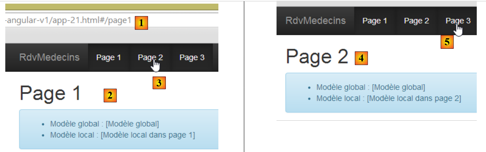 |
- em [1], a URL da visualização nº 1;
- em [2], seu conteúdo;
- em [3], passa-se para a página 2;
- em [4], a visualização nº 2;
- em [5], passa-se para a página 3;
 |
- em [6], a visualização nº 3;
- em [7], passa-se para a página 1;
- em [8], voltamos à visualização nº 1;
3.7.15.2. Organização do código
Começamos uma nova organização do código:
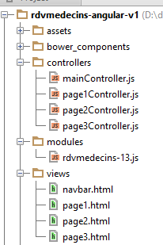 |
- as visualizações do aplicativo serão colocadas na pasta [views];
- o módulo do aplicativo será colocado na pasta [modules];
- os controladores do aplicativo serão colocados na pasta [controllers];
Da mesma forma, na versão final:
- os serviços serão colocados na pasta [services];
- as diretivas serão colocadas na pasta [directives];
3.7.15.3. O contêiner das visualizações
As visualizações da pasta [views] serão exibidas no seguinte contêiner [app-25.html]:
<!DOCTYPE html>
<html ng-app="rdvmedecins">
<head>
...
</head>
<body>
<div class="container" ng-controller="mainCtrl">
<!-- a barra de navegação -->
<ng-include src="'views/navbar.html'"></ng-include>
<!-- a visualização atual -->
<ng-view></ng-view>
</div>
...
<!-- o módulo -->
<script type="text/javascript" src="modules/rdvmedecins-13.js"></script>
<!-- os controladores -->
<script type="text/javascript" src="controllers/mainController.js"></script>
<script type="text/javascript" src="controllers/page1Controller.js"></script>
<script type="text/javascript" src="controllers/page2Controller.js"></script>
<script type="text/javascript" src="controllers/page3Controller.js"></script>
</body>
</html>
- linha 7: o corpo do contêiner é controlado por [mainCtrl];
- linha 9: a diretiva [ng-include] permite incluir um arquivo externo HTML, neste caso, uma barra de navegação;
- linha 12: as diferentes visualizações exibidas pelo contêiner são apresentadas dentro da diretiva [ng-view]. No final, temos um contêiner que exibe:
- sempre a mesma barra de navegação (linha 9);
- visões diferentes na linha 12;
- linhas 16-22: importamos os arquivos JS do módulo da aplicação [rdvmedecins-13.js] e de seus controladores;
3.7.15.4. O módulo da aplicação
O arquivo [rdvmedecins-13.js] define o módulo da aplicação e o roteamento entre as visualizações:
// --------------------- módulo Angular
angular.module("rdvmedecins", [ 'ngRoute' ]);
angular.module("rdvmedecins").config(["$routeProvider", function ($routeProvider) {
// ------------------------ roteamento
$routeProvider.when("/page1",
{
templateUrl: "views/page1.html",
controller: 'page1Ctrl'
});
$routeProvider.when("/page2",
{
templateUrl: "views/page2.html",
controller: 'page2Ctrl'
});
$routeProvider.when("/page3",
{
templateUrl: "views/page3.html",
controller: 'page3Ctrl'
});
$routeProvider.otherwise(
{
redirectTo: "/page1"
});
}]);
- linha 1: define-se o módulo [rdvmedecins]. Ele depende do módulo [ngRoute] fornecido pela biblioteca [angular-route.min.js]. É esse módulo que permite o roteamento definido nas linhas 6 a 24;
- linha 4: define a função [config] do módulo [rdvmedecins]. Vale lembrar que essa função é executada antes de qualquer instanciação de serviço. Trata-se de uma função de configuração do módulo. Aqui, é o roteamento dela que está sendo configurado. Isso é feito por meio do objeto [$routeProvider] fornecido pelo módulo [ngRoute];
- linhas 6-10: definem a visualização a ser exibida quando o usuário solicita o URL [/page1]. Trata-se de um roteamento interno à aplicação. O URL é, na verdade, o [/rdvmedecins-angular-v1/app-21.html#/page1]. Vemos que é sempre o URL do contêiner [/rdvmedecins-angular-v1/app-21.html] que é utilizado, mas com uma informação adicional atrás do caractere #. É essa informação adicional que o roteamento do Angular gerencia;
- linha 8: indica o fragmento HTML a ser inserido na diretiva [ng-view] do contêiner:
- linha 9: indica o nome do controlador desse fragmento;
- linhas 11-15: definem a visualização a ser exibida quando o usuário solicita o URL [/page2];
- linhas 16 a 20: definem a visualização a ser exibida quando o usuário solicita o URL [/page3];
- linhas 21-24: definem o roteamento a ser executado quando o URL solicitado não for uma das três anteriores (caso contrário, linha 21);
- linha 23: redirecionamento para URL [/page1], ou seja, para a visualização definida nas linhas 6-10;
3.7.15.5. O controlador do contêiner de visualizações
Vimos que o contêiner de visualizações declarava um controlador:
<div class="container" ng-controller="mainCtrl">
O controlador [mainCtrl] está definido no arquivo [mainController.js]:
// controlador
angular.module("rdvmedecins")
.controller('mainCtrl', ['$scope', '$location',
function ($scope, $location) {
// modelos de página
$scope.page1 = {};
$scope.page2 = {};
$scope.page3 = {};
// modelo global
var main = $scope.main = {};
main.text = "[Modèle global]";
// métodos expostos à visualização
main.showPage1 = function () {
$location.path("/page1");
};
main.showPage2 = function () {
$location.path("/page2");
};
main.showPage3 = function () {
$location.path("/page3");
}
}]);
- linha 3: o controlador [mainCtrl] precisa do objeto [$location] fornecido pelo módulo de roteamento [ngRoute]. Esse objeto permite mudar de visualização (linhas 16, 19, 22);
Voltemos ao código do contêiner:
<div class="container" ng-controller="mainCtrl">
<!-- a barra de navegação -->
<ng-include src="'views/navbar.html'"></ng-include>
<!-- a visualização atual -->
<ng-view></ng-view>
</div>
- o controlador [mainCtrl] constrói o modelo da área 1-7;
- a visualização incluída na linha 6 também possui um controlador. Por exemplo, a visualização [page1] possui o controlador [page1Ctrl]. Este constrói o modelo da área exibida na linha 6. Assim, temos nessa área dois modelos:
- o modelo construído pelo controlador [mainCtrl];
- o modelo construído pelo controlador [page1Ctrl];
Existe herança de modelos. Na visualização exibida na linha 6, os modelos dos controladores [mainCtrl] e [pagexCtrl] estão ambos visíveis. Se duas variáveis desses modelos tiverem o mesmo nome, uma irá ocultar a outra. Para evitar essa colisão de nomes, criamos quatro modelos com quatro nomes diferentes:
contêiner | mainCtrl | mão | 11 |
página 1 | page1Ctrl | página 1 | 7 |
página 2 | page2Ctrl | página 2 | 8 |
página 3 | page3Ctrl | página 3 | 9 |
- linha 12: define um elemento [text] no modelo [main];
As linhas 7 a 11 têm uma consequência muito específica: elas definem o [$scope] do controlador [mainCtrl] e, dentro dele, criam quatro variáveis [main, page1, page2, page3]. Essas quatro variáveis serão utilizadas como modelos, respectivamente, do contêiner e das três visualizações que ele irá conter sucessivamente.
3.7.15.6. A barra de navegação
A barra de navegação é definida da seguinte maneira no contêiner:
<div class="container" ng-controller="mainCtrl">
<!-- a barra de navegação -->
<ng-include src="'views/navbar.html'"></ng-include>
<!-- a visualização atual -->
<ng-view></ng-view>
</div>
A barra de navegação é definida na linha 3. Isso significa que ela reconhece apenas o modelo [main]. Seu código é o seguinte:
<div class="navbar navbar-inverse navbar-fixed-top" role="navigation">
<div class="container">
<div class="navbar-header">
<button type="button" class="navbar-toggle" data-toggle="collapse" data-target=".navbar-collapse">
<span class="sr-only">Toggle navigation</span>
<span class="icon-bar"></span>
<span class="icon-bar"></span>
<span class="icon-bar"></span>
</button>
<a class="navbar-brand" href="#">RdvMedecins</a>
</div>
<div class="collapse navbar-collapse">
<ul class="nav navbar-nav">
<li class="active">
<a href="">
<span ng-click="main.showPage1()">Page 1</span>
</a>
</li>
<li class="active">
<a href="">
<span ng-click="main.showPage2()">Page 2</span>
</a>
</li>
<li class="active">
<a href="">
<span ng-click="main.showPage3()">Page 3</span>
</a>
</li>
</ul>
</div>
</div>
</div>
- nas linhas 16, 21 e 26, são utilizados métodos do modelo [main];
- linha 16: um clique no link [Page1] iniciará a execução do método [$scope.main.showPage1]. Este está definido no controlador [mainCtrl] da seguinte forma:
// modelo global
var main = $scope.main = {};
main.text = "[Modèle global]";
// métodos expostos na visualização
main.showPage1 = function () {
$location.path("/page1");
};
- linha 6: no código acima, percebe-se que o método [main.showPage1] é, na verdade, o método [$scope.main.showPage1]. Portanto, é esse método que será executado;
- linha 7: alteramos o URL do aplicativo, que passa a ser [/page1]. Voltemos ao roteamento que foi definido no módulo principal:
$routeProvider.when("/page1",
{
templateUrl: "views/page1.html",
controller: 'page1Ctrl'
});
vemos que o fragmento [views/page1.html] será inserido no contêiner e que seu controlador é [page1Ctrl].
3.7.15.7. A visualização [/page1] e seu controlador
O fragmento [views/page1.html] é o seguinte:
<h1>Page 1</h1>
<div class="alert alert-info">
<ul>
<li>Modèle global : {{main.text}}</li>
<li>Modèle local : {{page1.text}}</li>
</ul>
</div>
Lembramos que, na visualização inserida no contêiner, o modelo [main] está visível. É isso que queremos verificar na linha 4. Além disso, o controlador [page1Ctrl] do fragmento [views/page1.html] define um modelo [page1]. É ele que é utilizado na linha 5.
O código do controlador [page1Ctrl] é o seguinte:
angular.module("rdvmedecins")
.controller('page1Ctrl', ['$scope',
function ($scope) {
// modelo da página 1
var page1=$scope.page1;
page1.text="[Modèle local dans page 1]";
}]);
- linha 2: o [$scope] inserido aqui não está vazio. Como o controlador [page1Ctrl] controla uma área inserida em um contêiner controlado por [mainCtrl], o [$scope] da linha 2 contém os elementos do [$scope] definido pelo controlador [mainCtrl]. É importante compreender isso. O [$scope], definido pelo controlador [mainCtrl], contém os seguintes elementos do [main, page1, page2, page3]. Isso significa que temos acesso aos modelos de todas as visualizações. Isso não é necessariamente desejável, mas é o que ocorre neste caso. Na versão final do cliente Angular, utilizaremos essa particularidade para armazenar no modelo [main] as informações que devem ser compartilhadas entre as visualizações. Teremos aqui um conceito análogo ao conceito de “sessão” no lado do servidor;
- linha 6: recuperamos no [$scope] o modelo [page1] da página 1 e, em seguida, trabalhamos com ele (linha 7). Obtemos, então, a exibição a seguir:
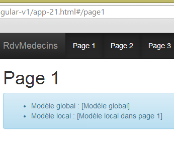 |
As visualizações [/page2] e [/page3] são construídas com base no mesmo modelo da visualização [/page1] (veja as capturas de tela na página 240).
3.7.15.8. Controle da navegação
Agora, queremos controlar a navegação da seguinte maneira: [page1 --> page2 --> page3 --> page1]. Assim, se o usuário estiver na página 1 ([/page1]) e digitar no navegador URL ou [/page3], essa navegação não deve ser aceita e o usuário deve permanecer na página 1.
Para obter esse resultado, modificamos os controladores das páginas da seguinte maneira:
angular.module("rdvmedecins")
.controller('page1Ctrl', ['$scope', '$location',
function ($scope, $location) {
// navegação permitida?
var main = $scope.main;
if (main.lastUrl && main.lastUrl != '/page3') {
// retornamos à última URL
$location.path(main.lastUrl);
return;
}
// armazenamos o URL da página
main.lastUrl = '/page1';
// modelo da página
var page1 = $scope.page1;
page1.text = "[Modèle local dans page 1]";
}]);
- linha 12: quando uma página for exibida, vamos armazenar seu URL no modelo [main.lastUrl]. Utilizamos aqui o conceito mencionado anteriormente: usar o modelo [main] para armazenar informações compartilhadas por todas as visualizações. Neste caso, trata-se do último URL consultado;
- o código das linhas 4 a 12 é duplicado e adaptado às três visualizações. Aqui, estamos na visualização [/page1];
- linha 5: recuperamos o modelo [main];
- linha 6: se o modelo [main.lastUrl] existir e for diferente de [/page3], a navegação é proibida (a última URL visitada existe e não é /page3);
- linha 8: volta-se, então, para a última URL visitada;
Vamos fazer um teste:
 |
- em [1], estamos na página 1 e digitamos o URL da página 3 em [2];
- em [3], a navegação não ocorreu e voltamos para o URL da página 1;
3.7.16. Conclusão
Analisamos todos os casos de uso que encontraremos na versão final do cliente Angular. Quando o apresentarmos, comentaremos mais sobre as funcionalidades do aplicativo do que sobre seus detalhes de implementação. Quanto a estes últimos, nos limitaremos a fazer referência ao exemplo que ilustra o caso de uso em questão.
3.8. O cliente Angular final
3.8.1. Estrutura do projeto
O projeto final tem a seguinte estrutura:
 |
 |
- em [1], o projeto completo. [app.html] é a página principal do aplicativo;
- em [2], os controladores;
- em [3], as diretivas;
- em [4], os serviços e o módulo Angular [main.js] do aplicativo;
- em [5], as diferentes visualizações que são inseridas na página principal [app.html];
3.8.2. As dependências do projeto
As dependências do projeto são as seguintes:
 |
A função desses diferentes elementos foi explicada no parágrafo 3.4, página 134.
3.8.3. A página mestre [app.html]
A página mestre é a seguinte:
<!DOCTYPE html>
<html ng-app="rdvmedecins">
<head>
<title>RdvMedecins</title>
<!-- META -->
<meta http-equiv="Content-Type" content="text/html; charset=utf-8">
<meta name="viewport" content="width=device-width, initial-scale=1.0">
<meta name="description" content="Angular client for RdvMedecins">
<meta name="author" content="Serge Tahé">
<!-- o CSS -->
<link rel="stylesheet" href="bower_components/bootstrap/dist/css/bootstrap.min.css"/>
<link href="bower_components/bootstrap/dist/css/bootstrap-theme.min.css" rel="stylesheet"/>
<link href="bower_components/bootstrap-select/bootstrap-select.min.css" rel="stylesheet"/>
<link href="assets/css/rdvmedecins.css" rel="stylesheet"/>
<link href="assets/css/footable.core.min.css" rel="stylesheet"/>
</head>
<!-- controlador [appCtrl], modelo [app] -->
<body ng-controller="appCtrl">
<div class="container">
...
</div>
<!-- Núcleo do Bootstrap JavaScript ================================================== -->
<script type="text/javascript" src="bower_components/jquery/dist/jquery.min.js"></script>
<script type="text/javascript" src="bower_components/bootstrap/dist/js/bootstrap.min.js"></script>
<script type="text/javascript" src="bower_components/bootstrap-select/bootstrap-select.min.js"></script>
<script src="bower_components/footable/js/footable.js" type="text/javascript"></script>
<!-- AngularJS -->
<script type="text/javascript" src="bower_components/angular/angular.min.js"></script>
<script type="text/javascript" src="bower_components/angular-ui-bootstrap-bower/ui-bootstrap-tpls.min.js"></script>
<script type="text/javascript" src="bower_components/angular-route/angular-route.min.js"></script>
<script type="text/javascript" src="bower_components/angular-translate/angular-translate.min.js"></script>
<script type="text/javascript" src="bower_components/angular-base64/angular-base64.min.js"></script>
<!-- módulos -->
<script type="text/javascript" src="modules/main.js"></script>
<!-- serviços -->
<script type="text/javascript" src="services/config.js"></script>
<script type="text/javascript" src="services/dao.js"></script>
<script type="text/javascript" src="services/utils.js"></script>
<!-- diretivas -->
<script type="text/javascript" src="directives/waiting.js"></script>
<script type="text/javascript" src="directives/errors.js"></script>
<script type="text/javascript" src="directives/footable.js"></script>
<script type="text/javascript" src="directives/debug.js"></script>
<script type="text/javascript" src="directives/list.js"></script>
<!-- controladores -->
<script type="text/javascript" src="controllers/appController.js"></script>
<script type="text/javascript" src="controllers/loginController.js"></script>
<script type="text/javascript" src="controllers/homeController.js"></script>
<script type="text/javascript" src="controllers/agendaController.js"></script>
<script type="text/javascript" src="controllers/resaController.js"></script>
</body>
</html>
- linha 18: observe-se que [appCtrl] é o controlador da página mestre;
- linhas 19-21: o conteúdo da página mestre;
Esse conteúdo é o seguinte:
<div class="container">
<!-- barras de navegação -->
<ng-include src="'views/navbar-start.html'" ng-show="app.navbarstart.show"></ng-include>
<ng-include src="'views/navbar-run.html'" ng-show="app.navbarrun.show"></ng-include>
<!-- o jumbotron -->
<ng-include src="'views/jumbotron.html'"></ng-include>
<!-- o título da página -->
<div class="alert alert-info" ng-show="app.titre.show" translate="{{app.titre.text}}"
translate-values="{{app.titre.model}}"></div>
<!-- erros da página -->
<errors model="app.errors" ng-show="app.errors.show"></errors>
<!-- a mensagem de espera -->
<waiting model="app.waiting" ng-show="app.waiting.show"></waiting>
<!-- a visualização atual -->
<ng-view></ng-view>
<!-- depuração -->
<debug model="app" ng-show="app.debug.on"></debug>
</div>
Independentemente da visualização exibida, ela sempre terá os seguintes elementos:
- linhas 3-4: uma barra de comando. As duas barras das linhas 3 e 4 são mutuamente exclusivas;
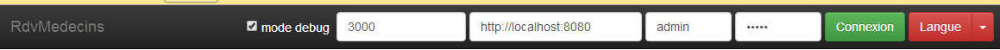

- linha 6: um logotipo/texto do aplicativo:
- linha 8: um título

- linha 11: uma mensagem de erro:

- linha 13: uma mensagem de espera:

- linha 17: uma informação de depuração:

Todos os elementos anteriores são controlados por uma diretiva [ng-show / ng-hide], que faz com que, mesmo que estejam presentes, eles não sejam necessariamente visíveis.
3.8.4. As visualizações do aplicativo
No código da página mestre, temos:
<div class="container">
...
<!-- a visualização atual -->
<ng-view></ng-view>
...
</div>
A linha 4 recebe as diferentes visualizações do aplicativo. Estas são definidas no módulo [main.js]:
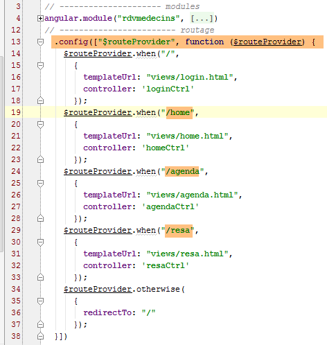
A função da configuração das diferentes rotas foi explicada no parágrafo 3.7.15.4, página 242.
A visualização [login.html] está vazia, ou seja, não adiciona nenhum elemento aos que já estão presentes na página mestre.
A visualização [home.html] adiciona o seguinte elemento à página mestre:

A visualização [agenda.html] adiciona o seguinte elemento à página mestre:
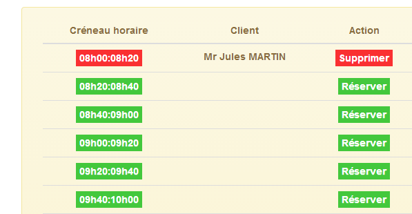
A visualização [resa.html] adiciona o seguinte elemento à página mestre:
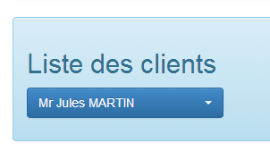
3.8.5. Funcionalidades do aplicativo
As visualizações do cliente Angular já foram apresentadas no parágrafo 1.3.3, página 7. Para facilitar a leitura deste novo capítulo, as reproduzimos aqui. A primeira visualização é a seguinte:
 |
- em [6], a página inicial do aplicativo. Trata-se de um aplicativo para agendamento de consultas médicas;
- em [7], uma caixa de seleção que permite ativar ou desativar o modo [debug]. Este último é caracterizado pela presença do quadro [8], que exibe o modelo da visualização atual;
- em [9], um tempo de espera artificial em milissegundos. Seu valor padrão é 0 (sem espera). Se N for o valor desse tempo de espera, qualquer ação do usuário será executada após um tempo de espera de N milissegundos. Isso permite observar a gestão da espera implementada pelo aplicativo;
- em [10], o URL do servidor Spring 4. Seguindo o que foi explicado anteriormente, trata-se do [http://localhost:8080];
- em [11] e [12], o identificador e a senha de quem deseja utilizar a aplicação. Há dois usuários: admin/admin (login/senha) com uma função (ADMIN) e user/user com uma função (USER). Apenas a função ADMIN tem permissão para utilizar o aplicativo. A função USER existe apenas para mostrar a resposta do servidor nesse caso de uso;
- em [13], o botão que permite conectar-se ao servidor;
- em [14], o idioma do aplicativo. Há dois: o francês, que é o padrão, e o inglês.
 |
- em [1], faz-se o login;
 |
- uma vez conectado, é possível escolher o médico com quem deseja marcar uma consulta [2] e o dia da consulta [3];
- em [4], solicita-se a visualização da agenda do médico escolhido para o dia selecionado;
 |
- assim que a agenda do médico for exibida, é possível agendar um horário [5];
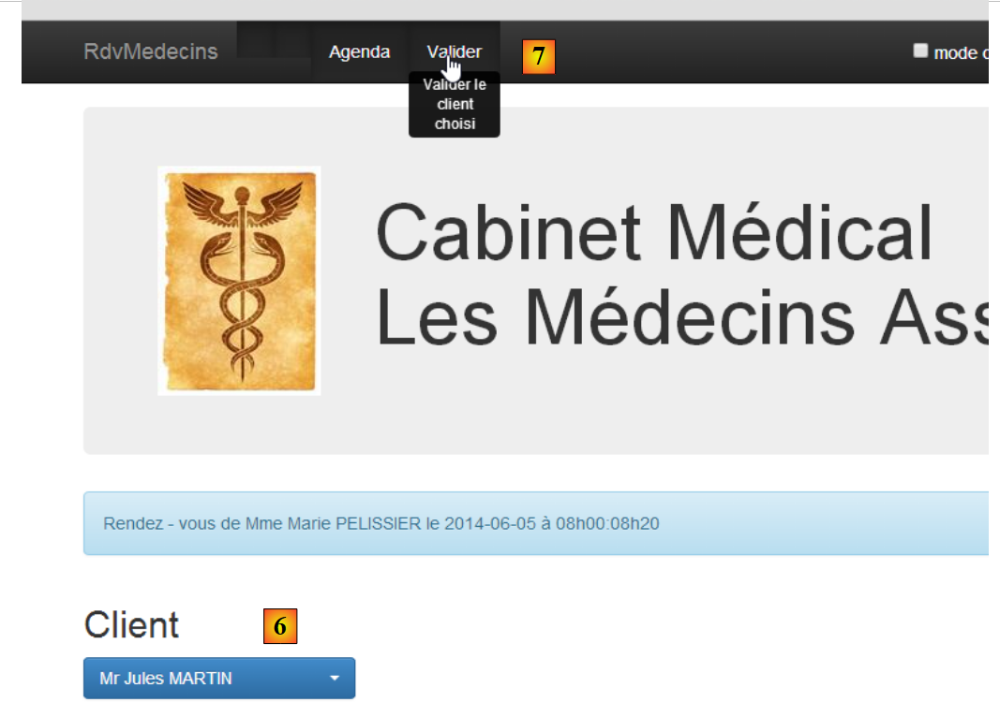 |
- em [6], seleciona-se o paciente para a consulta e confirma-se essa escolha em [7];
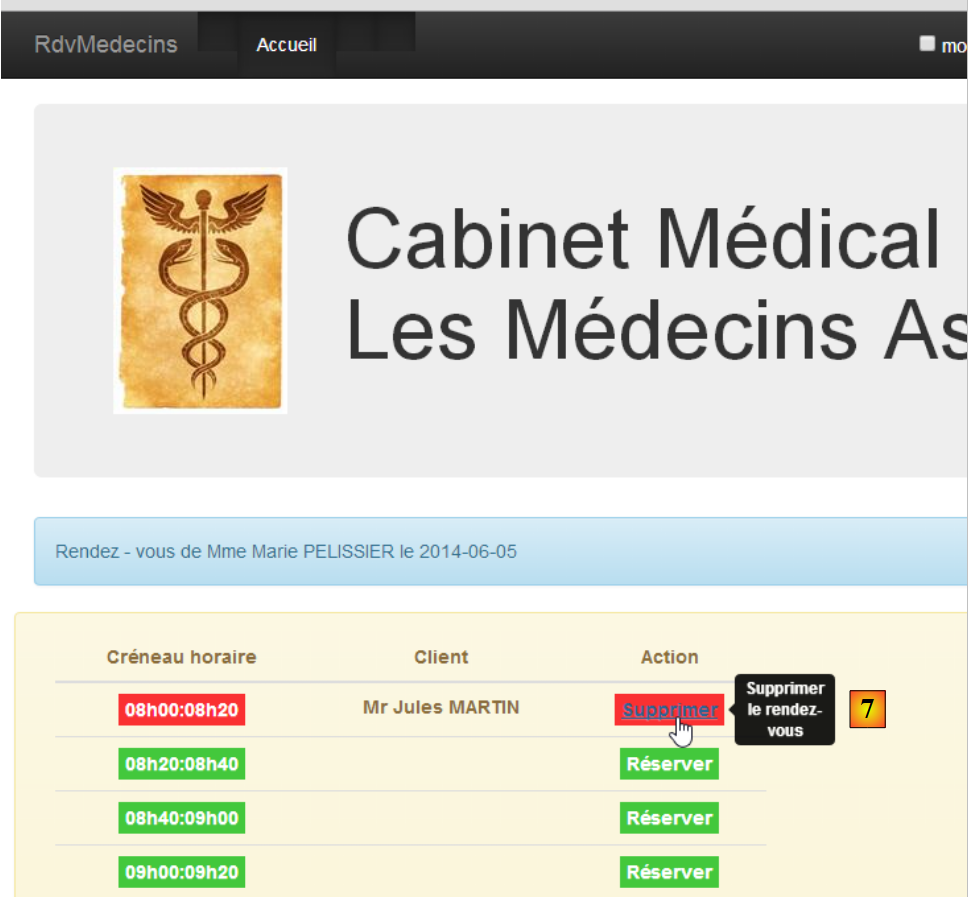 |
Assim que a consulta for confirmada, o usuário é redirecionado automaticamente para a agenda, onde a nova consulta já está registrada. Essa consulta poderá ser excluída posteriormente em [7].
As principais funcionalidades já foram descritas. Elas são simples. As que não foram descritas são funções de navegação para retornar a uma visualização anterior. Concluímos com o gerenciamento do idioma:
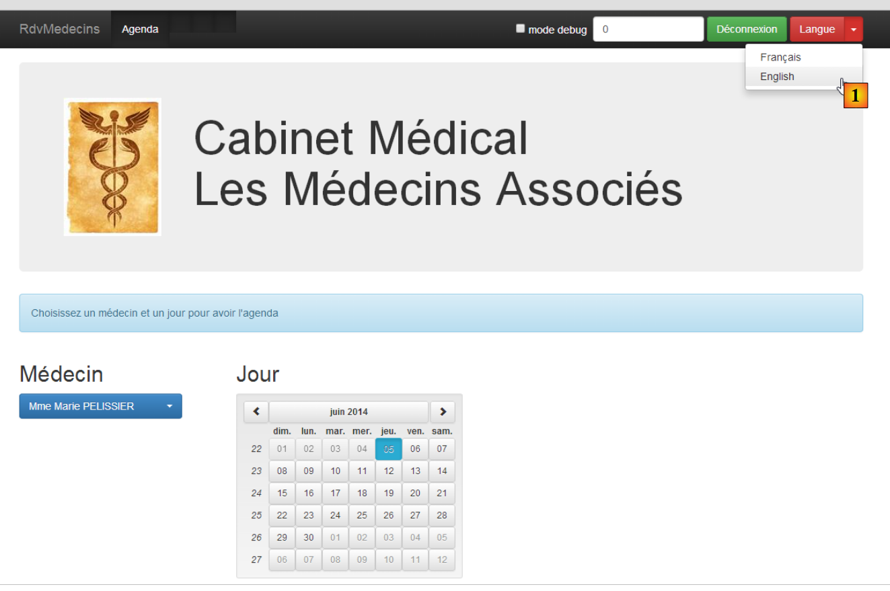 |
- em [1], alterna-se do francês para o inglês;
 |
- em [2], a visualização passa para o inglês, incluindo o calendário;
3.8.6. O módulo [main.js]
O módulo [main.js] define o módulo Angular que controlará o aplicativo:
 |
- linha 4: o módulo se chama [rdvmedecins];
- linha 5: o módulo [ngRoute] é utilizado para o roteamento dos URL;
- linha 6: o módulo [translate] é utilizado para a internacionalização dos textos;
- linha 7: o módulo [base64] é utilizado para codificar em Base64 a sequência 'login:password';
- linha 8: o módulo [ngLocale] é utilizado para internacionalizar o calendário;
- linha 9: o módulo [ui.bootstrap] é utilizado para o calendário;
- linha 12: a configuração das rotas;
- linha 40: a internacionalização das mensagens;
3.8.7. O controlador da página mestre
Recordemos o código HTML da página mestre [app.html]:
<body ng-controller="appCtrl">
<div class="container">
...
Na linha 1, todo o corpo (body) da página mestre é controlado pelo controlador [appCtrl]. Devido à sua posição, isso o torna um controlador geral e principal da aplicação. Conforme explicado no parágrafo 3.7.15, o modelo construído por esse controlador é herdado por todas as visualizações que serão inseridas na página mestre.
Seu código é o seguinte:
angular.module("rdvmedecins")
.controller("appCtrl", ['$scope', 'config', 'utils', '$location', '$locale',
function ($scope, config, utils, $location, $locale) {
// depuração
utils.debug("[app] init");
// ----------------------------------------inicialização da página
// os modelos das # páginas
$scope.app = {waitingTimeBeforeTask: config.waitingTimeBeforeTask};
$scope.login = {};
$scope.home = {};
$scope.agenda = {};
$scope.resa = {};
// modelo da página atual
var app = $scope.app;
...
// ---------------------------------- métodos
// cancelamento da tarefa atual
app.cancel = function () {
...
};
// desconexão
app.deconnecter = function () {
...
};
// este código deve permanecer aqui, pois faz referência à função [cancel] que vem antes
app.waiting = {title: {text: config.msgWaitingInit, values: {}}, cancel: app.cancel, show: true};
}])
;
As linhas 10 a 14 definem os cinco modelos utilizados na aplicação:
app.html | appCtrl | |
login.html | loginCtrl | |
home.html | homeCtrl | |
resa.html | resaCtrl | |
agenda.html | agendaCtrl |
O que é importante entender é que o objeto [$scope], por ser o modelo do controlador da página mestre, é herdado por todas as visualizações e controladores. Assim, o controlador [loginCtrl] tem acesso aos elementos [$scope.app, $scope.login, $scope.home, $scope.resa, $scope.agenda]. Em outras palavras, um controlador tem acesso aos modelos de outros controladores. O aplicativo em questão evita cuidadosamente utilizar essa possibilidade. Assim, por exemplo, o controlador [loginCtrl] trabalha com apenas dois modelos:
- o seu próprio, [$scope.login];
- e o do controlador pai [$scope.app];
O mesmo se aplica a todos os outros controladores. O modelo [$scope.app] será utilizado como memória compartilhada entre os diferentes controladores. Quando um controlador C1 precisar transmitir informações ao controlador C2, proceder-se-á da seguinte forma:
No [C1]:
No [C2]:
Em ambos os casos, $scope é herdado do controlador [appCtrl] e, portanto, é idêntico (trata-se de um ponteiro) em [C1] e [C2]. O objeto [$scope.app], que serve como memória compartilhada entre os controladores, será frequentemente chamado de session nos comentários, por analogia com a sessão utilizada em aplicativos web clássicos, que designa a memória compartilhada entre solicitações HTTP sucessivas.
Voltemos ao código do controlador [appCtrl]:
// os modelos das # páginas
$scope.app = {waitingTimeBeforeTask: config.waitingTimeBeforeTask};
$scope.login = {};
$scope.home = {};
$scope.agenda = {};
$scope.resa = {};
// modelo da página atual
var app = $scope.app;
// [app.debug] e [utils.verbose] devem estar sempre sincronizados
app.debug = utils.verbose;
app.debug.on = config.debug;
// sem título de página por enquanto
app.titre = {show: false};
// sem barras de navegação
app.navbarrun = {show: false};
app.navbarstart = {show: false};
// sem erros
app.errors = {show: false};
// localização padrão
angular.copy(config.locales['fr'], $locale);
// a visualização atual
app.view = {url: undefined, model: {}, done: false};
// a tarefa atual
app.task = app.view.model.task = {action: utils.waitForSomeTime(app.waitingTimeBeforeTask), isFinished: false};
- linha 8: [$scope.app] será o modelo da página mestre. Será também a memória compartilhada entre os diferentes controladores. Em vez de escrever [$scope.app.champ=value] em todos os lugares, o ponteiro [$scope.app] é atribuído à variável [app] e, então, escreveremos [app.champ=value]. Basta lembrar que [app] é o modelo exibido na página mestre;
- linha 11: [app.debug.on] é um valor booleano que controla o modo debug do aplicativo. Por padrão, ele está definido como true. Seu valor está vinculado à caixa de seleção [debug] nas barras de navegação;
- linha 15: [app.navbarrun.show] controla a exibição da seguinte barra de navegação:

- linha 16: [app.navbarstart.show] controla a exibição da seguinte barra de navegação:

- linha 18: [app.errors] é o modelo do banner de erros;

- linha 22: [app.view] conterá informações sobre a visualização atual, aquela que está sendo exibida no momento pela tag [ng-view] da página mestre. Nela, registraremos as seguintes informações:
- [url]: o URL da visualização atual, por exemplo, [/agenda];
- [model]: o modelo da visualização atual, por exemplo, [$scope.agenda];
- [done]: indica, em relação a vrai, que a visualização atual concluiu seu trabalho e que está ocorrendo a transição para outra visualização;
Essas informações servem para o controle da navegação.
- linha 24: inicia uma tarefa assíncrona, uma espera simulada. A tarefa assíncrona é referenciada por dois ponteiros: [app.view.model.task.action] e [app.task];
Dois métodos foram fatorizados no controlador [appCtrl]:
// cancelar tarefa atual
app.cancel = function () {
...
};
// desconexão
app.deconnecter = function () {
...
};
- linha 2: a função [app.cancel] serve para cancelar a tarefa atual para a qual uma mensagem de espera está sendo exibida no momento. Todas as visualizações exibem essa mensagem e, portanto, o cancelamento da tarefa será feito aqui;
- linha 7: a função [app.deconnecter] redireciona o usuário para a página de autenticação. Todas as visualizações, exceto a visualização [/login], oferecem essa possibilidade;
A função [app.deconnecter] é a seguinte:
// desconectar
app.deconnecter = function () {
// retornar à página de login
$location.path(config.urlLogin);
};
- linha 4: retorna-se à página de login de URL [/login];
3.8.8. Gerenciamento da tarefa assíncrona
Em nosso aplicativo, em um determinado momento, apenas uma tarefa assíncrona estará em execução. É possível ter várias. Por exemplo, ao iniciar o aplicativo, ele solicita ao serviço web a lista de médicos e, em seguida, a lista de clientes com duas solicitações HTTP sucessivas. Seria possível fazer o mesmo com duas solicitações HTTP simultâneas. O Angular oferece as ferramentas para esse gerenciamento. Neste caso, não optamos por essa abordagem.
A tarefa em execução é cancelada com o código a seguir no controlador [appCtrl]:
// cancelamento da tarefa atual
app.cancel = function () {
utils.debug("[app] cancel task");
// cancela a tarefa assíncrona da visualização atual
var task = app.view.model.task;
task.isFinished = true;
task.action.reject();
...
};
- linha 5: a tarefa é buscada em [app.view.model.task]. Além disso, todos os controladores garantirão que suas tarefas assíncronas sejam referenciadas por esse objeto;
- linha 6: para indicar que a tarefa foi concluída;
- linha 7: para encerrar a tarefa com falha. Essa notação é diferente daquela usada nos exemplos do Angular analisados:
- nos exemplos, o objeto [task] era um objeto [$q.defer()] que podia ser encerrado;
- na versão final, o objeto [task] é um objeto com os campos [action, isFinished], em que [action] é o objeto [$q.defer()] quepode ser concluído e [isFinished] é um booleano que indica que a ação foi concluída;
Vamos examinar o ciclo de vida do objeto [task] por meio de um exemplo. No início, após o controlador [appCtrl], é o controlador [loginCtrl] que assume o controle para exibir a visualização [views/login.html]. Seu código de inicialização é o seguinte:
// recupera-se o modelo pai
var login = $scope.login;
var app = $scope.app;
// visualização atual
app.view = {url: config.urlLogin, model: login, done: false};
Na linha 5, temos [model=login]. Isso significa que, ao modificar o objeto [login], modifica-se o objeto [app.view.model] e, consequentemente, o [$scope.app.view.model]. Quando, no controlador [loginCtrl], quisermos simular uma espera, escrevemos:
// espera simulada
var task = login.task = {action: utils.waitForSomeTime(app.waitingTimeBeforeTask), isFinished: false};
Ao adicionar o campo [task] ao objeto [login], ele foi, portanto, adicionado ao objeto [$scope.app.view.model]. Se o usuário cancelar a espera, o código em [appCtrl.cancel]:
// modelo da página atual
var app = $scope.app;
...
var task = app.view.model.task;
task.isFinished = true;
task.action.reject();
concluirá corretamente a espera simulada (linhas 4-6).
3.8.9. Controle da navegação
As regras de navegação utilizadas na aplicação são as seguintes:
qualquer | sim | |
/login | sim, se o controlador [loginCtrl] indicou que concluiu seu trabalho | |
/home | sim | |
/agenda | sim | |
/página inicial | sim, se o controlador [homeCtrl] indicou que concluiu seu trabalho | |
/resa | sim | |
/agenda | sim | |
/agenda | sim, se o controlador [homeCtrl] indicou que concluiu seu trabalho | |
/resa | sim |
Isso é implementado com o seguinte código:
Para [agendaCtrl]:

- linhas 11-20: implementação da regra de navegação;
- linha 26: nova visualização atual;
Para [resaCtrl]:

- linhas 12-20: implementação da regra de navegação:
- linha 27: nova visualização atual;
Para [loginCtrl]:
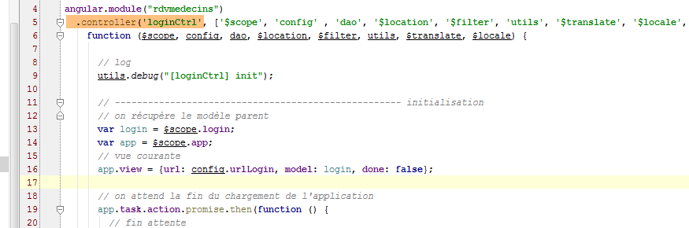
- não há aqui nenhum controle de navegação, pois a regra determina que é possível acessar o URL [/login] a partir de qualquer lugar. Portanto, se o usuário digitar esse URL no navegador, isso funcionará independentemente da visualização atual;
- linha 16: a nova visualização atual;
O código para o controlador [homeCtrl] foi apresentado no parágrafo 3.8.7.
Por fim, para uma regra como:
/home | sim, se o controlador [homeCtrl] indicou que concluiu seu trabalho |
eis um exemplo de código que faz a transição do URL [/home] para o URL [/agenda]:
 |
Acima, estamos no método [afficherAgenda] do controlador [homeCtrl]. O usuário solicitou a agenda de um médico.
- linha 107: a promessa da tarefa HTTP;
- linha 109: a variável [app] foi inicializada com [$scope.app]. Esse último objeto é, como vimos, utilizado como modelo da visualização [app.html]. Esse modelo [$scope.app] também é utilizado para armazenar as informações que devem ser compartilhadas entre as visualizações;
- linha 111: analisa-se o código de erro retornado pela tarefa;
- linha 113: o resultado [result.data] é inserido no modelo [app];
- linha 116: o controlador [homeCtrl] passará o controle para o controlador [agendaCtrl]. Ele informa ao controlador que concluiu seu trabalho com o código da linha 115. Esse código será utilizado pelo controlador [agendaCtrl] da seguinte maneira:

- linha 11: o objeto [$scope.app.view] é recuperado;
- linha 15: processamento do campo [$scope.app.view.done] inicializado por [homeCtrl];
3.8.10. Os serviços
 |
Os serviços [config, utils, dao] são os já descritos na apresentação do Angular:
- o serviço [config] foi apresentado no parágrafo 3.7.4;
- o serviço [utils] foi apresentado no parágrafo 3.7.5;
- o serviço [dao] foi apresentado no parágrafo 3.7.6;
A título de recordação, relembramos a estrutura desses serviços:
Serviço [config]
 |
- no [1]: observa-se que o código tem cerca de 250 linhas. A parte essencial desse código é a externalização das chaves das mensagens internacionalizadas [2]. Evita-se inserir essas chaves diretamente no código;
Serviço [utils]
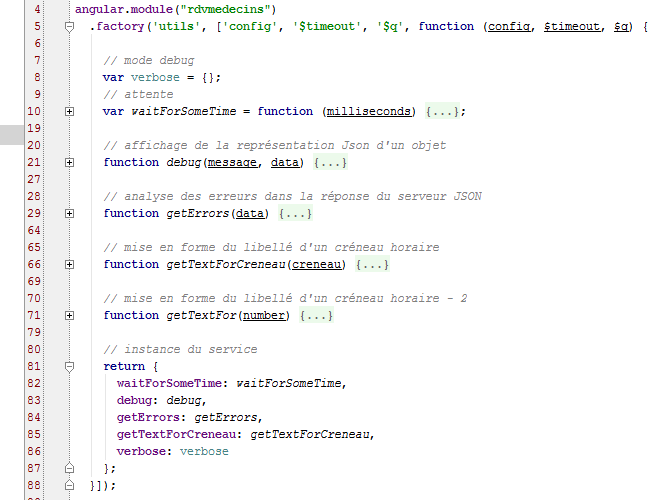 |
- linha 8: ainda não tínhamos encontrado a variável [verbose]. Ela controla a função [debug] da seguinte maneira:
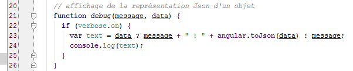 |
- linhas 22-25: a função [utils.debug] não executa nada se [verbose.on] for avaliada como false. Essa variável está vinculada a uma variável do controlador [appCtrl]:
 |
- linha 21: [app.debug] assume o valor do ponteiro [utils.verbose]. Portanto, qualquer alteração feita em [app.debug] será feita também em [utils.verbose];
- linha 22: o valor inicial de [app.debug.on] é obtido do arquivo de configuração. Por padrão, é o valor true.. Esse valor pode mudar com o tempo. O usuário tem, de fato, a possibilidade de alterá-lo nas barras de navegação:
 |
- linha 45: uma caixa de seleção (type=checkbox) permite alterar o valor de [app.debug.on] (atributo ng-model);
Serviço [dao]
 |
3.8.11. As diretrizes
 |
As diretivas [errors, footable, list, waiting] são as já descritas na apresentação do Angular:
- a diretiva [footable] foi introduzida no parágrafo 3.7.8.6;
- a diretiva [list] foi introduzida no parágrafo 3.7.12;
- as diretivas [errors] e [waiting] foram introduzidas no parágrafo 3.7.14;
Não havíamos encontrado a diretiva [debug]. Ela é a seguinte:
 |
O arquivo [debug.html] mencionado na linha 11 é o seguinte:
- linha 2: a diretiva [debug] exibe seu modelo no formato JSON em um banner Bootstrap (linha 1);
Essa diretiva é utilizada apenas na página mestre [app.html]:
 |
- a diretiva [debug] é utilizada na linha 35. Portanto, ela exibe a forma JSON do modelo [$scope.app] quando se está no modo de depuração (atributo ng-show). Isso resulta em algo como isto:
 |
Isso requer um bom conhecimento do código para ser interpretado, mas, uma vez adquirido esse conhecimento, as informações acima tornam-se úteis para a depuração. Destacamos aqui os elementos do modelo [$scope.app] exibido. Vale lembrar que [$scope.app] é a memória compartilhada pelos controladores;
- [waitingBeforeTask]: o tempo de espera simulado antes de qualquer solicitação HTTP;
- [debug]: o modo de depuração — é necessariamente true se esta barra estiver exibida;
- [navbarrun]: valor booleano que controla a exibição da barra de navegação a seguir:

- [navbarstart]: valor booleano que controla a exibição da barra de navegação a seguir:

- [errors]: modelo da diretiva [errors];
- [view]: encapsula informações sobre a visualização atualmente exibida;
- [waiting]: modelo da diretiva [waiting];
- [serverUrl, username, password]: informações de conexão ao serviço web;
- [medecins]: modelo para a diretiva [list] aplicada aos médicos;
- [clients]: o mesmo para os clientes;
- [menu]: controla as opções do menu exibidas. Estas são definidas em [navbar-run.html]:

As opções do menu estão nas linhas 16, 23, 29 e 36.
- [formattedJour]: o dia selecionado no calendário no formato 'aaaa-mm-dd';
- [agenda]: a agenda do médico. Nela, há horários disponíveis (rv==null) e reservados. Para estes últimos, consta o nome do cliente que fez a reserva;
- [selectedCreneau]: o horário escolhido para fazer a reserva;
3.8.12. O controlador [loginCtrl]
 |
O controlador [loginCtrl] está associado à visualização [views/login.html], que, associada à página mestre, gera a seguinte página:

O controlador [loginCtrl] é o seguinte:

- linha 13: [login] será o modelo da visualização atual;
- linha 14: [app] é a memória compartilhada entre os controladores;
- linha 16: preenche-se [app.view] com as informações da visualização atual;
Esse código de inicialização estará presente em cada controlador. Para o controlador C1 de uma visualização V1 com o modelo M1, teremos o seguinte código de inicialização:
- linha 18: talvez nos lembremos de que [appCtrl] iniciou uma espera simulada referenciada pelo objeto [app.task.action]. Utiliza-se o [promise] dessa tarefa para aguardar seu término;
- linha 39: o método [login.setLang] gerencia a mudança de idiomas;
- linha 47: o método [login.authenticate] gerencia a autenticação do usuário;
Vejamos os principais passos do método de autenticação:

- linhas 50-51: [app.waiting] é o modelo da barra de espera;
- linha 53: [app.errors] é o modelo da faixa de erros;
- linha 55: é iniciada uma espera simulada. O objeto [action, isFinished] é referenciado por [login.task] e, portanto, como [app.view.model=login], por [app.view.model.task]. Vale lembrar que essa é a condição para que a tarefa possa ser cancelada;
- linha 57: após o término da espera simulada, carregam-se os médicos;
- linha 62: quando a solicitação dos médicos for obtida, ela é analisada. Se os médicos tiverem sido obtidos, solicita-se então os clientes;
- linha 83: analisa-se a resposta obtida e exibe-se a visualização final. Isso é feito com o seguinte código:

- linha 87: a variável booleana [task.isFinished] é definida como true nos seguintes casos:
- o usuário cancelou a espera;
- a solicitação dos médicos terminou com um erro;
- linhas 91-98: o caso em que houve clientes;
- linha 93: [app.clients] é o modelo da diretiva [list] que exibirá os clientes em uma lista suspensa;
- linhas 97-98: estamos nos preparando para mudar de visualização (linha 98), mas antes indicamos que o controlador concluiu seu trabalho (linha 97). Vale lembrar que [$scope.app.view.done] é usado para o controle de navegação;
O ponto importante a ser observado aqui é que os médicos e os clientes foram armazenados em cache no navegador. A partir de agora, eles não serão mais solicitados ao serviço web.
3.8.13. O controlador [homeCtrl]
 |
O controlador [homeCtrl] está associado à visualização [views/home.html], que, associada à página mestre, gera a seguinte página:

A estrutura do controlador [homeCtrl] é a seguinte:
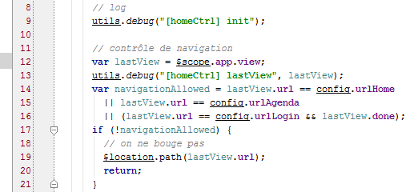
- linhas 12-20: trata-se do controle de navegação. Todos os controladores possuem esse controle, exceto o [loginCtrl], pois a página [/login.html] é acessível sem restrições;

- linhas 25-28: encontramos aqui linhas semelhantes às encontradas no controlador [loginCtrl]. [home] é, portanto, o modelo da visualização associada ao controlador;
- linha 33: um atributo que ainda não havíamos encontrado. Trata-se do modelo da barra de título da visualização:

- linha 36: [home.datepicker] é o modelo do calendário;
- linha 38: [app.menu] é o modelo do menu da barra de navegação. Aqui, a opção [Agenda] estará presente. É ela que permite consultar a agenda de um médico;
Por fim, o controlador possui dois métodos:

A exibição da agenda (linha 51) foi abordada no parágrafo 3.7.8.
3.8.14. O controlador [agendaCtrl]
 |
O controlador [agendaCtrl] está associado à visualização [views/agenda.html], que, quando associada à página mestre, gera a seguinte página:
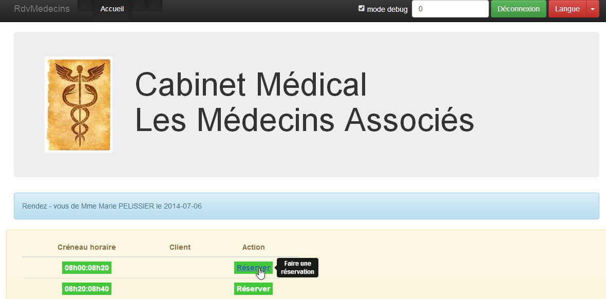
A estrutura do controlador [agendaCtrl] é a seguinte:

- as linhas 10 a 20 controlam a navegação;

- linhas 23 a 26: [agenda] será o modelo da visualização associada ao controlador [agendaCtrl];
- linhas 36-44: [app.titre] é o modelo da barra de título a seguir:

- linha 46: o menu terá a opção [Home / Accueil]:
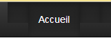
Os métodos do controlador são os seguintes:

- linha 95: o método [agenda.supprimer] foi abordado no parágrafo 3.7.9;
O método [agenda.home] é um método de navegação pura:

O método [agenda.reserver] é o seguinte:

- linha 73: o parâmetro da função [reserver] é o número do intervalo horário (id);
- linhas 77-86: destinam-se a localizar o horário com esse identificador;
- linha 82: o intervalo encontrado é armazenado na memória compartilhada [app]. O controlador [resaCtrl], que assumirá o controle (linha 90), utilizará essa informação para exibir seu banner de título;
- linhas 89-90: navegação para [/resa.html];
3.8.15. O controlador [resaCtrl]
 |
O controlador [resaCtrl] está associado à visualização [views/resa.html], que, associada à página mestre, gera a página a seguir:

A estrutura do controlador [resaCtrl] é a seguinte:

- linhas 12-20: o controle de navegação;

- linhas 24-27: [resa] será o modelo da visualização atual;
- linhas 38-45: [app.titre] é o modelo do banner de título a seguir:
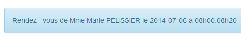
- linha 47: duas opções de menu são exibidas:

Os métodos do controlador são os seguintes:

O método [resa.valider] foi abordado no parágrafo 3.7.9.
3.8.16. Gerenciamento de idiomas
Todos os controladores oferecem o seguinte método [setLang]:

Ele poderia ter sido fatorizado no controlador [appCtrl].